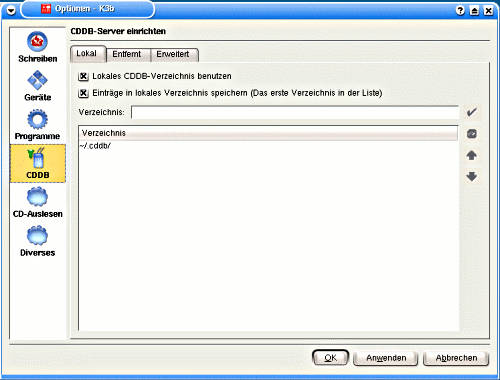

Anwendungs-Software¶
Editoren¶
Editoren¶
Beschreibung
Editoren, genauer Texteditoren, gibt es unter Linux wie Sand am Meer. Da Editoren für das Arbeiten mit Computern unerlässlich sind, haben sich viele Leute ihren eigenen geschrieben und verteilen diesen über das Web. Zudem ist das Erstellen eines einfachen Editors eine beliebte Aufgabe zum Lernen einer Programmiersprache.
Dieses Kapitel soll es dem Leser ermöglichen, mit dem Texteditor seiner Wahl zu arbeiten. Da wir nicht alle Editoren beschreiben können, beschränken wir uns hier auf diese 5.
Mit dieser Auswahl sind fast alle Editoren abgedeckt, da alle anderen dem einen oder anderen davon sehr nahe kommen. Hier gibt es nun zu jedem dieser Editoren eine Übersicht. Für kwrite, emacs und den vi folgt zusätzlich noch eine ausführlichere Erklärung.
gedit¶
gedit: Klein aber Fein
gedit ist ein kleiner und schneller Editor. Wie es das G vermuten lässt, gehört er zum GNOME Desktop. Er bietet eine einfache Möglichkeit, kürzere Texte zu schreiben. Die grossen Icons bieten die wichtigsten Befehle gut erreichbar an. Damit kann ohne langes Suchen eine Datei geöffnet, gedruckt oder gespeichert werden. Auch die Möglichkeit, Änderungen rückgängig zu machen oder wieder herzustellen, liegt bereit und ermöglicht einem so ein zielgerichtetes Arbeiten.
Da einem gedit nur das Auswählen einer Schriftdarstellung erlaubt, bemerkt man sein hauptsächliches Einsatzgebiet. gedit ist gut, um ASCII-Text zu bearbeiten, er soll aber keinesfalls die Aufgaben einer Textverarbeitung übernehmen.
Alle Einstellungen laufen über das gleichnamige Menü. Neben der erwähnten Einstellung für die Schrift kann man auch das Aussehen von gedit festlegen sowie grundlegende Angaben fürs Drucken machen.
kwrite¶
Der vielfältige kwrite in Aktion
Nachdem ein Editor für GNOME vorgestellt wurde, folgt nun mit kwrite einer von KDE. kwrite ist vom Funktionsumfang her gedit weit überlegen. Obwohl oberflächlich betrachtet kein grosser Unterschied auszumachen ist, bietet kwrite zahlreiche kleine Features, wie das Hervorheben von Code und die Verwendung von Lesezeichen.
Dennoch ist auch kwrite keine Textverarbeitung und hat, was das Auswählen der Schrift betrifft, die gleichen Limits wie gedit. Da auch deutlich mehr Einstellungen gemacht werden können, gibt es für kwrite bei Selflinux einen zusätzlichen Text, der einen tieferen Einblick ermöglicht.
Das KWrite-Handbuch
joe¶
joe - nicht nur für Notfälle geeinget
joe ist ein einfacher Editor für die Konsole. Er eignet sich insbesondere für User, die sich partout nicht den vi aneignen wollen, aber dennoch eine Möglichkeit suchen, von der Konsole aus einfache Bearbeitungen an Textdateien vorzunehmen, z. B. Konfigurationsdateien zu ändern. Mit vi gemeinsam hat joe den Vorteil, auch dann zu laufen, wenn sonst nichts mehr geht, und die genügsamen Ansprüche an die Hardware. Im Gegensatz zum vi, dessen Bedienungskonzept manchem Neuling als recht kryptisch erscheint, ist joe aber etwas konventioneller. Wieso der Name joe? joe ist ein rekursives Akronym für “Joe’s Own Editor”.
joe wird einfach von der Konsole aus gestartet mit joe <Dateiname> Dann erscheint der Dateiinhalt in Editierbereich. Zum Eingeben einfach die Tastatur verwenden, der Cursor kann mit den Cursortasten bewegt werden.
Mit der Tastenkombination Strg+k, h (hintereinander betätigen) Lässt sich ein kleiner Hilfebildschirm anzeigen, der alle Tastenkommandos beinhaltet; sie sind selbsterklärend. Mit ESC und anschließendem , oder . kann durch die Hilfeseiten vor- und zurückgeblättert werden.
joe legt von jeder geänderten Datei eine Sicherungskopie an, die aus dem Dateinamen mit angehängtem ~ (Tilde) besteht - für alle Fälle.
emacs¶
Gibt es etwas, das Emacs nicht kann?
Auch wenn emacs auf den ersten Blick nicht den Eindruck macht, gibt es nichts, was er nicht kann (ausser vielleicht Kaffee kochen...). Sei es nun das Schreiben von Texten, das Lesen von News oder der tägliche Emailbeantwortung - mit emacs ist dies alles möglich. Wären alle diese Funktionen direkt in emacs integriert, wäre dieser ein riesiges und schwerfälliges Monster. Daher sind die meisten Funktionen in Plugins ausgelagert und werden nur bei Gebrauch geladen.
emacs hat eine lange Entwicklungsgeschichte. 1976 war emacs nur eine Sammlung von Makros, daher auch der Name (Editor MACroS). Richard Stallman ist nicht nur der Gründer von GNU, sondern auch der Vater von emacs. Nach dem Start von GNU war der Verkauf von emacs, der schon damals unter der GPL stand, lange Zeit die einzige Einnahmequelle der FSF.
Mit dem Ur-emacs hat der heutige aber kaum mehr etwas gemeinsam. Die stetige Weiterentwicklung brachte so viel Neues, dass die momentan aktuelle Version die Nummer 21.3 trägt. Die Entwicklung ist damit aber noch nicht abgeschlossen, und so wird es wohl nicht bei dieser Version bleiben.
Wer sich gerne eingehender mit emacs beschäftigen möchte, dem sei der folgende Text von Selflinux wärmstens empfohlen:
HOWTO für den Emacs Einsteiger
vi¶

gvim bietet den Komfort eines grafischen Editors mit der Vielfältigkeit von vi.
vi ist wie emacs, ein Editor, der einem sehr viele Möglichkeiten bietet. Er ist sehr schnell, aber man muss etliche Stunden aufwenden, um mit ihm angenehm arbeiten zu können. Für diesen Aufwand wird man jedoch dann mit der Arbeitsgeschwindigkeit mehr als nur entschädigt.
Bis es soweit ist, ist es aber ein steiniger Weg. Vieles, was man bisher von Editoren wusste, gilt bei vi nicht mehr. Alles wird mit Hilfe der Tastatur gemacht, die Maus verliert in vi ihre Bedeutung als zentrales Hilfsmittel. Diesem Effekt ist es zu verdanken, dass vi immer zur Verfügung steht. Wenn nichts mehr geht, geht immer noch ein vi. Daher ist er Teil der meisten Rettungssysteme. Da man in einem Notfall nicht noch Zeit hat, sich in vi einzuarbeiten, sollte man dies schon vorher einmal machen.
Damit der Umstieg zu vi nicht zu schmerzhaft ist, gibt es eine Vielzahl von vi-Clonen. Der auf dem Screenshot gezeigte gvim ist eine angenehme Mischung aus der Stärke des vi mit der Einfachheit von gedit. gvim kann entweder wie vi über die Tastatur bedient werden oder auch mit Hilfe der Maus.
Wer einmal das Prinzip von vi und all seinen abgeleiteten Brüdern begriffen hat, will es nicht mehr missen. Damit auch die Leser von Selflinux einen tieferen Einblick bekommen, haben wir auch zu vi einen weiterführenden Text:
Praxisorientiertes vim-Tutorial
Autor
Johnny Graber linux@jgraber.ch
Formatierung
Johnny Graber linux@jgraber.ch
HOWTO für den Emacs Einsteiger¶
Beschreibung
HOWTO für den Emacs Einsteiger
Von Jeremy D. Zawodny (Jeremy@Zawodny.com) und Christel Weyrauch (christelweyrauch@gmx.de) - v1.12, 20. Januar 2002
Dieses Dokument führt Linux-Anwender in den Emacs-Editor ein. Es geht von einer geringen Vertrautheit mit dem vi oder einem ähnlichen Editor aus.
Einführung¶
Copyright
Dieses Dokument ist urheberrechtlich geschützt. Das Copyright für die englische HOWTO, auf der dieses Dokument basiert, liegt bei Jeremy D. Zawodny (Copyright © 1998 - 2001 Jeremy D. Zawodny). Das Copyright für die deutsche Version liegt bei Christel Weyrauch und Marco Budde.
Das Dokument darf gemäß der GNU General Public License verbreitet werden. Insbesondere bedeutet dies, dass der Text sowohl über elektronische wie auch physikalische Medien ohne die Zahlung von Lizenzgebühren verbreitet werden darf, solange dieser Copyright Hinweis nicht entfernt wird. Eine kommerzielle Verbreitung ist erlaubt und ausdrücklich erwünscht. Bei einer Publikation in Papierform ist das Deutsche Linux HOWTO Projekt hierüber zu informieren.
Bezugsquellen
Die aktuellste englische Version dieses Dokuments ist gewöhnlich unter
verfügbar. Die deutsche Version findet man beim DLHP:
Leserkreis und Ziel
Dieses Dokument richtet sich an den Linux-Anwender, der daran interessiert ist, ein bisschen über den Emacs zu lernen und ihn auszuprobieren. Es entstand eigentlich als Entwurf für ein kurzes Tutorial, das ich bei einem Treffen der Toledo Area Linux User Group geben musste:
Dank des hilfreichen Feedbacks, das ich von der Gruppe bekam, ist es seitdem etwas gewachsen. Näheres dazu finden Sie bei den Danksagungen.
Ich habe gesagt, dass sich dieses Dokument an den Linux-Anwender richtet, doch gibt es in diesem Dokument praktisch nichts Linux-spezifisches. Es ist auf alle Unix-Varianten und selbst auf dem Emacs unter Microsoft Windows anwendbar. Doch da dieses Dokument Teil des Linux-Dokumentationsprojektes ist, möchte ich noch einmal festhalten, dass es für Linux-Anwender entwickelt wurde, weil es das eben wurde. Und zum Schluss noch ein Hinweis für diejenigen von Ihnen, die die Bezeichnung GNU/Linux dem ganz einfachen Linux vorziehen: Sie können gerne in Gedanken bei jedem Vorkommen von Linux in diesem Dokument dieses durch GNU/Linux ersetzen. Lesen sie hierzu auch folgendes Dokument:
Zwar bin ich mit der Argumentation und dem Geist hinter der Idee nicht uneins, doch fühle ich mich nicht gezwungen, GNU/Linux zu schreiben.
Was ist der Emacs?
Der Emacs ist Unterschiedliches für unterschiedliche Menschen. Abhängig davon, wen man fragt, könnte man irgendeine der folgenden Antworten bekommen:
ein Text-Editor ein Mail Client ein News Reader ein Word-Prozessor eine Religion eine integrierte Entwicklungsumgebung Was immer Sie wollen, das er ist!
Doch für unsere Zwecke lassen Sie uns einfach so tun, als wäre er ein Text-Editor - ein erstaunlich flexibler Text-Editor. Wir werden später tiefer in die Frage einsteigen. Der Emacs wurde von Richard Stallman geschrieben (Gründer der Free Software Foundation:
und des GNU Projektes),
und er pflegt ihn noch heute.
Der Emacs ist einer der populärsten und leistungsfähigsten Text-Editoren für Linux (und Unix). In Popularität steht er an zweiter Stelle nur hinter dem vi. Er ist bekannt für sein umfangreiches Bündel an Leistungsmerkmalen, seine Fähigkeit, leicht angepasst werden zu können und seinen Mangel an Fehlern. Sein enormes Bündel an Leistungsmerkmalen und seine Fähigkeit, leicht angepasst werden zu können, sind im Grunde das Resultat davon, wie der Emacs entwickelt und implementiert wurde. Ohne auf alle Details einzugehen, weise ich einfach darauf hin, dass der Emacs nicht nur ein Editor ist. Es ist ein Editor, der hauptsächlich in der Programmiersprache Lisp geschrieben wurde. Im Kern des Emacs befindet sich ein kompletter Lisp Interpreter, der in C geschrieben wurde. Nur die grundlegendsten und elementarsten Teile vom Emacs sind in C geschrieben. So hat der Emacs, in gewissem Sinne, eine ganze Programmiersprache in sich eingebaut, die Sie benutzen können, um ihn anzupassen, zu erweitern und sein Verhalten zu verändern.
Der Emacs ist außerdem einer der ältesten Editoren, die es so gibt. Die Tatsache, dass er über die letzten 20 (?) Jahre hinweg von Tausenden von Programmierern benutzt wurde, bedeutet, dass es viele Zusatzpakete gibt. Diese Zusätze erlauben es Ihnen, den Emacs Dinge tun zu lassen, die Stallman wahrscheinlich niemals für möglich gehalten hätte, als er erstmals die Arbeit am Emacs begann. Mehr davon in einem späteren Abschnitt.
Es gibt viele andere Dokumente und Websites, die einen besseren Überblick über den Emacs, seine Geschichte und damit zusammenhängende Themen bieten. Anstatt zu versuchen, an dieser Stelle davon viel zu reproduzieren, schlage ich vor, Sie testen einige der Angaben, die im Abschnitt Andere Quellen in diesem Dokument aufgeführt werden.
Portierungen und Versionen
Es ist wichtig drauf hinzuweisen, dass es eigentlich zwei unterschiedliche Emacs-Editoren gibt: GNU Emacs und Xemacs. Beide haben den gleichen Ursprung und verfügen im Wesentlichen über die gleichen Eigenschaften. Dieses Dokument basiert auf dem GNU Emacs (insbesondere Version 20.3), aber viel von dem, was Sie hier lesen werden, trifft ebenso gut auf den Xemacs und ältere Versionen des GNU Emacs zu. In dem ganzen Dokument werde ich einfach vom Emacs sprechen. Wenn ich das tue, haben Sie dies bitte im Hinterkopf.
Wie Sie den Emacs bekommen können
Den Emacs zu bekommen, ist einfach. Wenn Sie eine bekannte Linux-Distribution benutzen, wie Debian, RedHat, Slackware, SuSE oder irgendeine der anderen, ist der Emacs wahrscheinlich ein Zusatzpaket, das Sie von Ihrem Distributionsmedium aus installieren können. Wenn nicht, können Sie sich den Emacs Source Code holen und ihn selbst kompilieren. Besuchen Sie die GNU Website, um die genaue Adresse zu bekommen:
Mit dem Emacs arbeiten¶
Den Emacs starten und beenden
Wenn Sie ein neuer Anwender sind, werden Sie wahrscheinlich den Emacs starten, um damit herumzuspielen und ihn auszuprobieren. Ist der Emacs erst einmal gestartet und Sie wollen ihn schließen, wissen Sie vielleicht nicht, was zu tun ist. Wenn Sie also vorher noch nie mit dem Emacs gearbeitet haben, versuchen Sie es jetzt gleich einmal. Tippen Sie emacs an Ihrem Shellprompt und drücken Sie die Return-Taste. Der Emacs sollte dann starten. Wenn nicht, ist er entweder nicht installiert oder nicht in Ihrem Pfad.
Wenn Sie sich den Emacs angesehen haben, müssen Sie wissen, wie er beendet wird. Mit der Tastenkombination C+x wird er verlassen. Die C+x Schreibweise bedeutet: halten Sie die Ctrl -Taste (auf einer deutschen Tastatur ersetzen Sie bei Befehlen die Control-Taste bitte immer durch die Steuerungs-Taste, Strg ) gedrückt und drücken Sie x . In diesem Fall, müssen Sie dann die Ctrl -Taste gedrückt halten und auf c drücken, um den Befehl zu vollenden.
Die beim Emacs benutzten Tastenkombinationen erscheinen Ihnen vielleicht zuerst etwas komisch, fremd und wahrscheinlich sogar unbequem - besonders dann, wenn Sie ein vi-Anwender sind. Anders als der vi hat der Emacs keine besonderen Modi, um Text zu editieren und Befehle auszuführen.
Zur Erinnerung: emacs startet den Emacs. Mit C+x C+c wird er geschlossen.
Was Sie sehen werden
Wenn der Emacs gestartet wird, nimmt er ein ganzes X Fenster ein (oder den gesamten Bildschirm, wenn Sie von einer Konsole aus arbeiten, anstelle des X Window Systems). Entlang des oberen Randes sehen Sie ein Menue, etwas Text im Hauptteil des Bildschirms, und ein paar Zeilen am unteren Rand.
Es wird in etwa so aussehen wie diese ASCII-Skizze: ASCII-Skizze
Buffers Files Tools Edit Search Mule Help
Welcome to GNU Emacs, one component of a Linux-based GNU system.
...—1:—F1 scratch (Lisp Interaction)–L1–All————- For information about the GNU Project and its goals, type C-h C-p.
Beachten Sie: der Emacs wird normalerweise den gesamten Bildschirm oder das ganze Fenster ausfüllen. Ich habe das obige Beispiel kleiner dargestellt, um hier Platz zu sparen. Sie werden auch einen Begrüßungstext im Emacs sehen, wenn Sie ihn das erste Mal starten. Ich habe ihn auch ausgelassen und anstatt dessen durch ... ersetzt. Der Begrüßungstext gibt lediglich die genaue Emacs-Version an, die Sie benutzen und verweist Sie auf die Online-Hilfe und damit verwandte Themen.
Die Menueleiste
Die allererste Zeile der Emacs-Oberfläche ist ein Menue. Wenn Sie mit X arbeiten, werden Sie sie als die üblichen Pull-Down-Menues wahrnehmen, auf die Sie mit Ihrer Maus zugreifen können. Wenn nicht, müssen Sie Tastenkürzel verwenden (werden hier nicht behandelt), um auf die Menues zugreifen zu können.
Die Statuszeile und der Mini-Puffer
Von den letzten zwei Zeilen der Emacs-Oberfläche ist die oberste im Wesentlichen eine Statuszeile. Sie beinhaltet Informationen über den Puffer in dem Sie arbeiten, in welchem Modus sich der Emacs befindet, und verschiedene andere Dinge. Merken Sie sich für den Moment einfach, dass sie da ist.
Die unterste Zeile wird Mini-Puffer genannt. Er wird vom Hauptpuffer durch die Statuszeile getrennt, die wir gerade besprochen haben. Sie können den Mini-Puffer als die Kommandozeile des Emacs betrachten. Hier werden Befehle angezeigt, die Sie dem Emacs erteilen und hier werden - je nach dem, was Sie tun - Statusmeldungen ausgegeben.
Das, was ich die Statuszeile genannt habe, wird in Dokumentationen zum Emacs normalerweise als Moduszeile bezeichnet. Hier zeigt der Emacs Informationen über den/die augenblicklichen Modus/Modi, die Sie vielleicht benutzen, aber auch Dinge wie das aktuelle Datum und die Zeit, die Zeilennummer, Dateigröße und fast alles, was Sie dort möglicherweise sehen möchten.
Einige Fachausdrücke
Dieser Abschnitt behandelt die grundlegendsten Emacs-Fachausdrücke, denen Sie bei der Benutzung des Emacs und dem Lesen über den Emacs begegnen werden.
Puffer & Dateien
Anders als bei einigen Editoren, bleibt beim Emacs eine Datei an der Sie arbeiten, nicht die ganze Zeit geöffnet. Anstatt dessen, liest der Emacs die Datei in einen Speicherpuffer ein. Während Sie den Puffer editieren und mit den Daten arbeiten, ändert sich nichts auf der Festplatte. Nur wenn Sie wirklich den Puffer speichern, wird die Datei auf der Festplatte aktualisiert. Es gibt bei diesem Verfahren Vor- und Nachteile, es ist aber nur wichtig, dass Sie verstehen, dass es so funktioniert.
Aus diesem Grund trifft man in der Emacs-Dokumentation bei Modi, Paketen und so weiter auf den Begriff Puffer. Machen Sie sich einfach klar, dass Puffer eine Kopie der Datei, die gerade im Speicher ist bedeutet. Oh, es ist noch wichtig, darauf hinzuweisen, dass ein Puffer sich nicht immer auf eine bestimmte Datei auf der Festplatte bezieht. Der Emacs erzeugt oft Puffer aufgrund der Befehle, die Sie eingeben. Diese Puffer können das Ergebnis eines Befehls, eine Auswahlliste etc. beinhalten.
Point & Region
Im Emacs-Jargon werden Sie oft Hinweise auf den sogenannten Point (Eingabepunkt) hören oder sehen. Im allgemeinen ist der Point der Cursor. Der eigentliche Unterschied zwischen Point und Cursor ist wahrscheinlich nicht wichtig, wenn man gerade angefangen hat, sich mit dem Emacs zu beschäftigen. Aber wenn Sie neugierig sind, sollten Sie es so betrachten: der Cursor ist die visuelle Darstellung des Points. Der Cursor ist immer auf einer bestimmten Buchstabenposition im aktuellen Puffer. Der Point, andererseits, ist im Raum zwischen den Buchstaben. Man könnte also sagen, dass wenn der Cursor sich auf dem Buchstaben h im Wort the befindet, der Point zwischen t und h ist.
Wie viele moderne Editoren kann der Emacs auf einen Abschnitt des aktuellen Puffers begrenzt Aktionen ausführen: Texteinzug, Rechtschreibprüfung, neu Formatieren, Ausschneiden, Kopieren, Einfügen usw - Mit der Tastatur oder Maus können Sie einen Textblock hervorheben (oder markieren) und dann Aktionen nur in diesem Block oder Textabschnitt ausführen. Beim Emacs wird dieser Textblock Region genannt.
Fenster
Okay, das Folgende wird für alle, die irgendwann einmal mit einem GUI Interface gearbeitet haben, etwas verwirrend sein. Erinnern Sie sich einfach daran, dass der Emacs, lange bevor GUI Interfaces und Window Manager populär waren, entwickelt wurde.
Beim Emacs ist ein Fenster ein Teil des Bildschirmes, auf dem ein Puffer dargestellt wird. Wenn der Emacs gerade erst gestartet wurde, hat man ein Fenster auf dem Bildschirm. Einige Emacs-Funktionen (wie die Hilfe und die Dokumentation) öffnen oft vorübergehend zusätzliche Fenster in Ihrem Emacs-Bildschirm.
Emacs-Fenster haben im GUI Sinn nichts mit X Window Fenstern gemein. Man kann zusätzliche X Window Fenster öffnen, um Emacs-Puffer darzustellen, vielleicht um zwei Dateien nebeneinander zu vergleichen. Diese neuen X Window Fenster werden im Emacs-Jargon Rahmen (Frames) genannt; lesen Sie dazu weiter.
Rahmen
Beim Emacs ist ein Rahmen ein separates X Window Fenster, in dem ein Emacs-Puffer dargestellt wird. Beide sind jedoch Teil der gleichen Emacs-Session. Das Verhalten ähnelt etwas (aber nicht allzu sehr) dem, was passiert, wenn Sie Alt+N im Netscape Naviagator drücken.
Grundlagen der Tastaturbedienung
Dieser Abschnitt behandelt die Grundlagen der Tastaturbedienung des Emacs. Wie bei jedem leistungsfähigen Editor ist alles, was man mit dem Emacs machen kann, nur wenige Tastenkombinationen entfernt.
Wenn Sie ein vi-Anwender sind, brauchten Sie wahrscheinlich etwas, um sich an die Vorstellung zu gewöhnen, k-, j-, l-, h-Tasten zu benutzten, um sich eine Zeile höher, tiefer, einen Buchstaben vor und zurück zu bewegen. Es wird in der Tat wahrscheinlich einige Stunden oder sogar Wochen gedauert haben, bevor Sie sich beim Benutzen der unterschiedlichen Tastenkombinationen, die es beim vi gibt, mühelos in einem Dokument bewegen konnten.
Der Emacs ist da nicht anders. Man muss andere Tastenkombinationen und Befehle lernen. Genau wie beim vi muss man nur die Grundlagen beherrschen, um viel Arbeit erledigt zu bekommen. Dann, mit der Zeit, kann man langsam sein Wissen erweitern und schnellere Wege finden, wie man Dinge tut.
Befehlstasten (Meta, Esc, Steuerung und Alt)
Wie Sie schnell lernen werden, macht der Emacs viel Gebrauch von Mehrfach-Tastenkombinationen. Da er kein Modal-Editor wie der vi ist, muss man nicht darüber nachdenken, ob man sich im Befehlsmodus oder Editiermodus befindet, bevor man den Cursor bewegen oder einen Befehl ausführen kann. Anstatt dessen drückt man die richtige Tastenkombination und der Emacs tut gewöhnlich, was er soll.
Die Tasten, die man im Emacs am meisten benutzt, werden in der Dokumentation normalerweise mit C (für Control, Ctrl - auf einer deutschen Tastatur ist C durch die Steuerungs-Taste, Strg , zu ersetzen) und M für ( Meta ) abgekürzt. Während die meisten modernen PC-Tastaturen eine oder mehrere Tasten für Ctrl haben, haben wenige eine für Meta+x . Sie müssen in Gedanken entweder Esc oder Alt durch die Meta -Taste ersetzen. Bei den meisten Standardkonfigurationen machen Esc und Alt im Wesentlichen das Selbe.
Wenn Sie also in irgendeiner Dokumentation, die sich auf den Emacs bezieht, einen Verweis auf C+x f sehen, bedeutet dies: drücken Sie C+x und dann f ( Strg+x f dann natürlich auf einer deutschen Tastatur). Und wenn Sie einen Hinweis auf etwas wie M+x shell sehen, bedeutet dies: drücken Sie Alt+x und tippen Sie das Wort shell .
Ein sehr nützlicher Befehl für Anfänger ist M+x apropos oder C+h a . Apropos durchsucht die Emacs Online-Dokumentation nach allen Funktionen und regulären Ausdrücken, die Sie eingeben. Dies ist eine fantastische Möglichkeit, alle Kommandos zu entdecken, die mit Frames zu tun haben. Geben Sie einfach C+h a und dann frame ein.
Sich in einem Puffer bewegen
Da sie nun wissen, was alle diese tollen Abkürzungen bedeuten, folgt jetzt eine Liste mit den gebräuchlichsten Tastenkombinationen, um sich innerhalb eines Puffers zu bewegen: Tastenkombination Aktion C+p eine Zeile hoch C+n eine Zeile runter C+f einen Buchstaben vorwärts C+b einen Buchstaben zurück C+a Zeilenanfang C+e Zeilenende C+v eine Seite runter M+v eine Seite hoch M+f ein Wort weiter M+b ein Wort zurück M+< Beginn des Puffers M+> Ende des Puffers C+g aktuellen Arbeitsvorgang beenden
Und Sie haben es vielleicht erwartet, die Cursor-Tasten (oder Pfeiltasten) funktionieren genau, wie Sie erwartet haben. Ihre Backspace-Taste möglicherweise nicht. Das ist eine andere Geschichte. :-(
Wesentliche Befehle
Okay, da Sie nun wissen, wie man sich in einem Puffer bewegt, wie ist es mit dem Öffnen und Speichern von Dateien oder der Suchefunktion? Hier kommen einige grundlegende Befehle.
Bevor wir uns direkt auf diese Befehle stürzen, muss ich kurz darstellen, wie das funktioniert.
Alle Befehlstasten im Emacs (die, die M+x irgendwas+h oder C+irgendwas sind), sind nur Kürzel für Funktionen, die Teil des Emacs sind. Man kann alle diese Funktionen durch Eintippen von M+x Funktionsnamen und Drücken der Return-Taste aufrufen. Man kann auch die Tastaturkürzel für diese Funktion benutzen (wenn sie eine hat).
Zum Beispiel heißt die Emacs-Funktion, die einen Puffer auf Festplatte speichert, save-buffer. Sie ist standardmäßig auch mit C+x C+s belegt. Man kann also entweder das Kürzel benutzen, um den aktuellen Puffer zu speichern oder man könnte M+x save-buffer eintippen, um das gleiche Resultat zu erzielen.
Die gebräuchlichsten Funktionen haben standardmäßig zusätzliche Tastenkürzel. Einige von ihnen sind unten aufgelistet. Tastenkürzel Funktion Beschreibung C+x C+s save-buffer Speichere den aktuellen Puffer auf Festplatte C+x u undo Mache den letzten Arbeitsvorgang rückgängig C+x d dired Dired starten C+x C+f find-file Öffne eine Datei von Festplatte C+s isearch-forward Inkrementelle Suche vorwärts C+r isearch-backward Inkrementelle Suche rückwärts
replace-string Suchen & Ersetzen einer Zeichenkette replace-regexp Suchen & Ersetzen bei regulären Ausdrücken
C+h t help-with-tutorial Benutze das interaktive Emacs-Tutorial C+h f describe-function Zeige den Hilfetext für eine Funktion an C+h v describe-variable Zeige den Hilfetext für eine Variable an C+h x describe-key Zeige an, was eine Tastenfolge macht C+h a apropos Zeige den Hilfetext für einen (regulären) Ausdruck an C+h F view-emacs-FAQ Zeige die Emacs-FAQ an C+h i info Lese die Emacs Dokumentation C+x r+m bookmark-set Setze ein Lesezeichen. Nützlich bei Suchen C+x r+b bookmark-jump Springe zu einem Lesezeichen
Beim Ausprobieren vieler dieser Funktionen werden Sie feststellen, dass Sie viele zu einer Eingabe auffordern. Das wird immer im Mini-Puffer erfolgen. Dies ähnelt dem Gebrauch der :-Kommandos im vi oder den meisten Kommandos, die Sie in Ihrer bevorzugten Unix Shell benutzen würden.
Der Emacs verfügt buchstäblich über Hunderte von eingebauten Funktionen. Die obige Liste ist ein kleines Beispiel all derer, die ich regelmäßig benutze. Für eine vollständigere Auflistung der verfügbaren Funktionen und eine ausführlichere Dokumentation zu denen, die ich oben erwähne, sehen Sie sich die Online-Hilfe an.
Tab-Ergänzung
Wie viele populäre Unix Shells (bash, csh, tcsh usw.) kann der Emacs Befehle über die Tab -Taste ergänzen. Es ist sogar so, dass die Befehlsergänzung in der bash, der im Emacs nachgebildet wurde. Wenn Sie dieses Leistungsmerkmal in der bash benutzen, werden Sie sich also ganz zu Hause fühlen.
Versuchen Sie zum Beispiel M+x search und drücken dann Tab . Der Emacs wird einen Bindestrich anfügen, um anzuzeigen, dass es diverse Vervollständigungsmöglichkeiten gibt, die aber alle einen Bindestrich als nächsten Buchstaben haben. Wenn die Tab -Taste ein weiteres Mal betätigt wird, wird Emacs Ihnen eine Liste aller Möglichkeiten anzeigen, aus denen Sie auswählen können. Sie werden feststellen, dass er dies in einem neuen Fenster tut. Er unterteilt Ihr Display zeitweise in zwei Fenster: eines, das den Puffer enthält, den Sie gerade editieren und ein weiteres, das die Liste aller möglichen Ergänzungen für search enthält. Sie können C+g tippen, um den Selektionsprozess zu verlassen und das neue Fenster zu schließen.
Tutorial, Hilfe & Info
Der Emacs hat ein Online-Tutorial, das Sie durch die grundlegenden Editiereigenschaften und -funktionen führt, die jeder kennen sollte. Es erklärt auch, wie die anderen Hilfefunktionen im Emacs genutzt werden können.
Ich empfehle dringend, dass Sie etwas Zeit darauf verwenden, das Tutorial durchzugehen, wenn Sie planen, sich ernsthaft mit dem Emacs zu beschäftigen. Wie in der Tabelle oben dargestellt wurde, können Sie das Tutorial durch C+h t aufrufen. Das Tutorial ist selbsterklärend und zielt auf Leute ab, die gerade mit dem Emacs anfangen.
Wenn Sie den Emacs im X laufen haben, werden Sie sehen, dass das Menue ganz rechts auf der Menuezeile Help heißt. Wenn Sie das Hilfemenue erforschen, beachten Sie, dass einige Unterpunkte Tastenkürzel haben und diese genau in dem Menue aufgelistet werden.
Und um schließlich das mit dem Emacs verfügbare Volumen an Dokumentation einsehen zu können, sollten Sie M+x info oder C+h i ausprobieren; dadurch wird Info aufgerufen, der Emacs Dokumentationsbrowser.
Emacs-Modi¶
Emacs-Modi sind unterschiedliche Verhaltensformen und Charakteristika, die für unterschiedliche Zwecke an- und ausgeschaltet (oder natürlich auch angepasst) werden können. Es sind Modi, die einen Editor (Emacs) gleichermaßen gut verwendbar machen, sowohl Dokumentationen zu schreiben, in einer Vielzahl von Sprachen (C, C++, Perl, Python, Java und viele mehr) zu programmieren, eine Homepage zu erstellen, E-Mails zu verschicken, Usenet News zu lesen, über die eigenen Termine auf dem Laufenden zu bleiben und sogar Spiele zu spielen.
Emacs-Modi sind einfach Lisp-Code-Bibliotheken, die den Emacs auf irgendeine Art und Weise erweitern, verändern oder optimieren.
Haupt- vs. Untermodi
Es gibt im Wesentlichen zwei Moditypen: Haupt- und Untermodi (Major und Minor Modes). Der Unterschied ist nicht ganz einfach zu begreifen, wenn man noch nicht hin und wieder mit einigen von ihnen gearbeitet hat, aber versuchen wir es mal.
Zu einer bestimmten Zeit kann nur ein Hauptmodus aktiv sein. Es können aber viele Untermodi zu einer bestimmten Zeit aktiv sein. Hauptmodi tendieren dazu, sprach- oder funktionsspezifisch zu sein, während es sich bei Untermodi um kleinere und weniger spezifische Einrichtungen handelt, die funktionsübergreifend sind.
Klingt ein bisschen abstrakt, versuchen wir also ein Beispiel. Es gibt einen Modus, den ich ziemlich oft benutze, um ganz normale Textdateien zu schreiben. Er heißt text-mode. Dieser Modus wurde zum Schreiben von freiem, unformatiertem Text entwickelt, wie einer README Datei. Er kann Wörter und Absätze identifizieren und stellt im Allgemeinen sicher, dass das passiert, was ich erwarte, wenn ich die normalen Navigationstasten verwende.
Wenn ich einen Text als Lesefutter für den menschlichen Konsum schreibe, will ich natürlich, dass er gut aussieht. Er sollte einen passenden Zeilenumbruch haben - nach einer angemessenen Anzahl von Zeichen und so weiter. Um Zeilenumbrüche zu ermöglichen, rufe ich einfach den Untermodus auto-fill auf. Dieser Untermodus versucht, das Richtige zu tun, während ich vor mich hintippe und das Ende der Zeile erreiche. Die Tatsache, dass es ein Untermodus ist, bedeutet, dass er mit einigen unterschiedlichen Hauptmodi arbeiten kann. Meine Vorstellung davon, was das Richtige ist, wenn ich am Zeilenende bin, ist eine andere, wenn ich in einem text-mode bin oder zum Beispiel im java-mode. Ich will nicht, dass mein Java-Code umgebrochen wird, als wäre er ein englischer Text. Aber ich will meine Kommentarblöcke in meinem Java-Code umgebrochen haben. Der auto-fill Modus ist smart genug, das herauszukriegen
Die Entwickler verschiedener Emacs-Modi haben gute Arbeit geleistet, in dem sie sicher gestellt haben, dass Dinge, die als Untermodi arbeiten sollten, auch Untermodi sind.
Wenn Sie sich noch einmal die ASCII-Skizze eines Emacs-Bildschirmes ansehen, werden Sie feststellen, dass die Moduszeile den/die Modus/Modi anzeigt in dem/denen der Emacs sich befindet. In diesem Fall hieß der Modus Lisp Interaction, der der Default-Modus ist. Er ist wirklich nur sinnvoll, wenn man Lisp-Code schreiben will. Aber da fast alles vom Emacs in Lisp geschrieben ist, warum nicht?
Programmier-Modi
Zuallererst: der Emacs wurde von einem Programmierer für Programmierer entwickelt. Es gibt hochwertige Modi für fast jede populäre Programmiersprache, die man sich denken kann (und sogar einige nicht ganz so populäre). Ich beschreibe nur wenige von ihnen kurz hier.
Die meisten Programmier-Modi teilen einige gemeinsame Charakteristika. Normalerweise machen sie das Folgende ganz oder teilweise:
stellen eine farbliche Hervorhebung der Syntax für die Sprache zur Verfügung, stellen automatischen Texteinzug und Code-Formatierung für die Sprache zur Verfügung, verfügen über eine kontext- (sprach-)sensitive Hilfefunktion, verfügen über ein automatisches Interface mit Ihrem Debugger, ergänzen die Menuezeile durch sprachspezifische Menues.
Zusätzlich gibt es einige nicht-sprachspezifische Modi, die Funktionen unterstützen, die beim Programmieren in vielen Sprachen häufig vorkommen: Dinge wie eine Schnittstelle zu Ihrer Versionskontrollsoftware, automatisches Anfügen von Kommentaren an Ihren Code, Erstellen von Makefiles, Aktualisieren von Change Logs und so weiter.
Wenn man all diese Modi zusammen nimmt und die Reife und Stabilität des Emacs-Codes berücksichtigt, fällt der Vergleich mit kommerziellen Integrated Development Environments (IDEs) für Sprachen wie C++ und Java doch ziemlich gut aus. Und er ist natürlich frei verfügbar.
C/C++/Java
Da die Syntax von C, C++ und Java ziemlich ähnlich ist, gibt es einen Emacs-Modus für alle drei Sprachen (aber auch für Objective-C und IDL). Es ist ein sehr ausgereiftes und vollständiges Paket und in der Emacs-Distribution enthalten. Dieser Modus wird entweder cc-mode oder CC Mode genannt.
Für weitere Details oder den Download einer neueren Version, besuchen Sie:
Perl
Es gibt eigentlich zwei Modi, um Perl-Code im Emacs zu editieren. Der erste heißt perl-mode (wie wohl zu erwarten war) und der zweite cperl-mode. Ich kenne mich in dieser Geschichte nicht gut aus und weiß nicht, warum es zwei Modi gibt (steht nicht in der Doku), aber es scheint so, als ob perl-mode der Original-Modus war, um Perl-Code im Emacs zu editieren. Er scheint über weniger Merkmale als cperl-mode zu verfügen und es mangelt ihm an der Fähigkeit, einige von Perls ausgefalleneren Sprachkonstrukten zu erkennen.
Ich persönlich benutze und empfehle cperl-mode, der anscheinend ziemlich aktiv gepflegt wird und genau all die Charakteristika hat, die ich mir überhaupt nur wünschen kann. Die neueste Version findet man hier:
Aber nehmen Sie mich nicht beim Wort. Probieren Sie beide aus und nehmen Sie den, der am meisten Ihren Bedürfnissen entspricht.
Python
Für Python (eine weitere sehr populäre Skript-Sprache) gibt es auch einen Emacs-Modus. So weit ich weiß, ist er nicht in der GNU Emacs, sondern in der XEmacs-Distribution enthalten. Er funktioniert aber recht gut in beiden Editoren.
Sie können den python-mode von der offiziellen Python-Website beziehen:
Weitere
Es gibt viele, viele andere Editier-Modi zur Unterstützung von Programmierern. Diese Modi helfen bei Dingen wie:
Shell Skripte (bash, sh, ksh, csh usw) awk, sed, tcl usw. Makefiles Change Logs Dokumentation Debugging
und vielen weiteren Dingen. Wenn Sie mehr Informationen dazu möchten, wie man an Modi und Add-Ins kommt, gehen Sie zum letzten Abschnitt dieses Dokuments.
Arbeiten als Autor
Stellen Sie sich vor, Emacs-Modi sind nicht nur auf die beschränkt, die Code schreiben. Leute die Dokumentationen jeglicher Art schreiben, können auch von einer breiten Auswahl an Emacs-Modi profitieren.
Rechtschreibprüfung (ispell Modus)
Autoren vieler Arten von Dokumenten brauchen immer wieder mal eine Hilfe bei der Rechtschreibprüfung. Wenn sie GNU ispell installiert haben, können Sie M+x ispell eintippen und den aktuellen Puffer auf seine Rechtschreibung hin überprüfen lassen. Wenn ispell Wörter findet, die er nicht kennt, bekommt man eine Liste möglicher Varianten und kann sich eine oder keine aussuchen. Die Funktion entspricht in etwa der Rechtschreibkorrektur vieler anderer nicht kostenloser Softwarepakete.
HTML (html-helper-mode)
Wenn Sie immer wieder mal oder sogar oft HTML-Dateien schreiben, möchten Sie vielleicht den html-helper-mode ausprobieren. Man bekommt ihn unter
wie auch die Dokumentation und was damit zu tun hat.
Wie der Namen schon andeutet, kann der html-helper-mode viel für die Leute tun, die noch HTML mit der Hand schreiben, auf die altmodische Art.
TeX (tex-mode)
Wenn man Dokumente in TeX schreibt, ist es oft hilfreich, sich den Emacs zu besorgen, um etwas Farbe hinzuzufügen, um die Backslashes, Klammern und andere Buchstaben hervorzuheben. Der tex-mode macht das für Sie.
Obwohl ich nicht mehr viel direkt in TeX schreibe, hat er sich, als ich es noch tat, als ziemlich hilfreich dabei erwiesen, meinen TeX-Code etwas lesbarer zu machen.
SGML (sgml-mode)
Das Dokument, das sie gerade lesen, wurde in SGML geschrieben und in das Format konvertiert, in dem sie es lesen. Der sgml-mode hat alle Grundlagen für SGML Dokumente: Validierung, Hervorhebung, Forward-Tag, Backward-Tag, und vieles mehr. Er ist ein Standardbestandteil des Emacs.
Andere Modi
Natürlich gibt es noch viele andere praktische Modi, die das Leben einfacher machen. Hier folgt nur eine kleine Auswahl der populären:
Versionskontrolle (vc Modus)
Der vc Modus hat Schnittstellen zu den meisten der populären Versionskontrollsysteme (RCS, SCCS, CVS). Dies macht es sehr leicht, Dateien ein- und auszuchecken, Releases zu managen etc. Er ist ein Standardbestandteil des Emacs und wird in der Emacs-Dokumentation beschrieben.
Shell Modus (shell)
Warum zu einem anderen X Window Fenster oder einer virtuellen Konsole wechseln, nur um ein paar Shell-Kommandos auszuführen? Machen Sie es vom Emacs aus und ersparen Sie sich die Mühe :-).
M+x shell ruft eine Shell innerhalb eines Emacs-Puffers auf. Mit diesem Puffer kann man die meisten Sachen machen, die man auch mit einem normalen Shell tun könnte (außer dem Betrieb von Programmen, die den ganzen Bildschirm einnehmen, wie vi oder pine), weil der Emacs hinter den Kulissen mit der wirklichen Shell kommuniziert.
Auch dies ist ein Standardbestandteil des Emacs, so dass man ihn in der Emacs-Dokumentation dokumentiert findet.
Telnet und FTP (telnet und ftp Modi)
Warum zu einem anderen X Window Fenster oder einer virtuellen Konsole wechseln, nur um Telnet und FTP auszuführen? Machen Sie es vom Emacs aus und ersparen Sie sich die Mühe.(Erkennen Sie schon das Muster ;-)?
Genau wie eine Shell im Emacs zu betreiben, kann man von ihm aus mit Telnet und FTP arbeiten. Versuchen Sie M+x telnet oder M+x ftp , um es selbst auszuprobieren. Lesen Sie die Dokumentation wegen all der blutrünstigen Details.
Handbuch (man Modus)
Warum zu einem anderen X Window Fenster oder einer virtuellen Konsole wechseln, nur um eine Manual Page zu lesen? Machen Sie es vom Emacs aus und ersparen Sie sich die Mühe. Ich verspreche, ich höre jetzt auf. Genau wie beim Betreiben der Shell innerhalb des Emacs, kann man vom Emacs aus Manual Pages lesen. Versuchen Sie M+x man um es selbst auszuprobieren. Lesen Sie die Dokumentation, wenn Sie weitere Informationen möchten.
Ange-FTP
Um die ange-ftp Dokumentation zu zitieren:
Dieses Paket will den Zugang zu Dateien und Verzeichnissen für die Nutzung von FTP vom GNU Emacs aus so einfach und transparent wie möglich machen. Ein Teil der gebräuchlichen Dateiarbeitsvorgänge ist für die Interaktion mit FTP erweitert worden.
Dies bedeutet, dass man Dateien auf weit entfernten Rechnern behandeln kann, als wären sie lokal. Will man also eine Datei auf einem anderen Computer editieren, muss man nur den Emacs anweisen, sie zu öffnen (in dem man eine etwas andere Pfadsyntax benutzt) und er kümmert sich um alle Details beim Login und dem Holen der Datei. Dann, wenn die Datei mit C+x C+s gespeichert wird, nimmt ange-ftp die Speicherung vor und schreibt die Datei zurück auf den weit entfernten Rechner.
Die etwas andere Pfadsyntax geht so: Eine myfile benannte Datei in einem user Verzeichnis auf einem my.host.org benannten Rechner kann durch C+x f geöffnet werden:
/user@my.host.org:~user/myfile
Auch dies ist ein Standardbestandteil der Emacs-Distribution, sodass man es in der Emacs Dokumentation dokumentiert findet.
Meinen Dank an Etienne Grossman ( etienne@anonimo.isr.ist.utl.pt) für das obige Beispiel.
Den Emacs anpassen¶
Praktisch die gesamte Emacs-Anpassung geschieht über den Lisp-Code. Man kann Variablen verändern, die Einfluss darauf nehmen, wie der Emacs arbeitet oder man kann dem Emacs neue Funktionen hinzufügen oder bereits existierende Funktionen aufheben und durch eigene ersetzen.
Temporäre Anpassung
Das Experimentieren mit der Emacs-Anpassung möchten Sie wahrscheinlich so gestalten, dass sie temporär bleibt. Wenn man was ganz schrecklich Falsches macht, braucht man nur C+x C+c einzugeben, um den Emacs zu schließen und wieder zu starten. Sobald Sie herausgefunden haben, welche der Veränderungen Sie gerne für immer hätten, können Sie sie zur eigenen .emacs-Datei hinzufügen, so dass sie bei jedem Start von Emacs geladen werden. Dies wird im nächsten Abschnitt besprochen.
Variablen-Zuweisung
Die einfachsten Anpassungen erreicht man durch das Ändern des Wertes einer Variablen im Emacs. Der Lisp-Code, um dies zu tun, sieht so aus:
(setq variable-name new-value)
Wobei variable-name der Name der Variablen ist und new-value der Wert, den Sie der Variablen übergeben möchten. Im Lisp-Jargon bindet man eine Variable an einen Wert. Die setq Funktion in Lisp entspricht den Bestimmungsoperatoren (meist =) in anderen Programmiersprachen.
Beachten Sie: Ich gehe hier - um der Einfachheit willen - über viele Details hinweg. Es kann auch sein, dass man mich oder andere beim Benutzen der Lisp-Funktionen set und sogar setq-default sieht. Wer wirklich neugierig ist, sollte sie einfach in einer Emacs Lisp Referenz nachsehen.
Betrachten wir eine Zeile aus meiner .emacs-Datei:
(setq-default transient-mark-mode t)
Die Variable transient-mark-mode steuert, ob eine Region hervorgehoben wird, wenn ich sie markiere oder nicht. Bei vielen GUI Applikationen wird sie invertiert oder einer anderen Farbe hervorgehoben, wenn man klickt und die Maus zieht, um einen Textbereich auszuwählen. Der Emacs macht das gleiche, wenn die Variable des transient-mark-mode auf einen nicht-nil Wert gesetzt wurde.
Was für einen Wert?
Okay. Kurzer Exkurs. Die meisten Programmiersprachen unterscheiden zwischen wahr/falsch Werten. In C/C++ wird ein Wert als wahr betrachtet, wenn er ein Wert ungleich Null ist. In Perl ist ein non-null oder non-zero Wert wahr. In Lisp, existiert die gleiche Idee, aber die Namen und Symbole sind andere.
Wahr wird gewöhnlich als t geschrieben und falsch (oder Null) als nil. Wie in anderen Sprachen, wird jedoch jeder nicht-nil Wert als wahr betrachtet.
Für die vollständige Beschreibung dessen, was transient-mark-mode tut, kann man die Online-Hilfe benutzen. Tippen Sie C+h v oder M+x describe-variable und dann transient-mark-mode. Wenn man faul ist wie ich, kann man sich durch Gebrauch der Tab -Taste die Variablennamen-Ergänzung zu Nutze machen. Tippen Sie einen Teil des Variablennamens ein und schlagen Sie die Tab -Taste an. Wenn genug eingetippt wurde, sodass der Emacs es eindeutig identifizieren kann, wird der vollständige Name für Sie ergänzt.
Eine weitere Variable, die oft gesetzt wird, ist fill-column. Sie sagt dem Emacs, wie weit der Bildschirm beim Zeilenumbruch (und der auto-fill-mode respektiert diesen Wert) sein sollte. Um mal einen absurden Wert einzugeben, könnte man eintippen:
(setq fill-column 20)
Aber dann passiert eigentlich nichts. Man muss den Emacs anweisen, den Ausdruck, den man eingetippt hat, auszuwerten. Um das zu tun, stellen Sie den Cursor an das Ende des Ausdrucks und tippen C+x C+e , dies ruft die Funktion eval-last-sexp auf (für den Fall, dass es Sie interessiert). Wenn Sie das tun, werden sie feststellen, dass 20 (oder welchen Wert auch immer sie genommen haben) im Mini-Puffer am unteren Rand des Bildschirms wiedergegeben wird. Dies ist nur der Rückgabewert des Ausdrucks, den Sie ausgewertet haben.
Nur um zu zeigen, dass es funktioniert - tippen Sie einen oder zwei Sätze ein. Wenn Sie den auto-fill-mode eingeschaltet haben (haben sie wahrscheinlich nicht), werden Sie den Zeilenumbruch nach dem 20. Zeichen erleben. Oder, wenn Sie irgend etwas eingegeben haben, tippen Sie M+q , es ruft die Funktion fill-paragraph auf. Sie wird dann den Zeilenumbruch ausführen.
Zuordnung von Dateinamen
Sie können den Emacs so konfigurieren, dass er automatisch etwas tut, wenn Sie eine Datei eines bestimmten Typs öffnen (so wie einige GUIs automatisch eine bestimmte Applikation starten, wenn man auf das Icon klickt). Zum Beispiel, möchte ich vielleicht, dass der Emacs jedes Mal automatisch zum Textmodus wechselt, wenn ich eine Datei mit einer .txt-Endung öffne. Nun, das passiert bereits :-). Sagen wir also dem Emacs, dass er in den Textmodus geht, wenn Sie eine Datei namens README öffnen.
(setq auto-mode-alist (cons ‘(“README” . text-mode) auto-mode-alist))
Huh?
Ohne tief in die Lisp-Programmierung einzutauchen, die Sie wirklich nicht kennen müssen (es würde Ihnen aber nicht weh tun, sie zu lernen), lassen Sie mich einfach sagen, dass die Variable auto-mode-alist eine Liste von Paaren enthält. Jedes Paar enthält einen regulären Ausdruck und einen Emacs-Modus-Namen. Wenn eine Datei, die Sie öffnen, dem regulären Ausdruck entspricht (in diesem Fall, die Zeichenkette README), startet der Emacs den Modus, den Sie festgelegt haben.
Die merkwürdige Syntax oben ergibt sich deshalb, weil man im Grunde genommen ein weiteres Paar an die Modusliste anfügt. Sie würden nicht wollen, etwas der auto-mode-alist zuzuordnen, ohne sicher zu stellen, dass die Werte, die sie bereit hält, nicht verloren gehen.
Und wenn ich wollte, dass der Emacs jedes Mal automatisch zum (html-helper-mode wechselt, wenn ich eine Datei öffne, die auf .html oder .htm endet, würde ich folgendes meiner .emacs Datei hinzufügen:
(setq auto-mode-alist (cons ‘(“\.html$” . html-helper-mode)auto-mode-alist))
(setq auto-mode-alist (cons ‘(“\.htm$” . html-helper-mode)auto-mode-alist))
Die Möglichkeiten sind wirklich unbegrenzt.
Der Umgang mit der .emacs-Datei
Wenn man etwas Zeit mit dem Emacs verbracht hat und eine grundlegende Vorstellung davon hat, welche Vorteile eine Anpassung hätte, möchte man wahrscheinlich ein paar Dinge dauerhaft anpassen (oder mindestens so lange, bis man seine Meinung geändert hat). Wenn Sie täglich mit dem Emacs arbeiten, werden Sie auch feststellen, das die .emacs-Datei mit der Zeit immer größer wird. Das ist eine gute Sache, denn es bedeutet, das Sie herausgefunden haben, wie Sie den Emacs dazu bringen so zu arbeiten, wie Sie wollen. Es ist eine Schande, dass viele Softwareprodukte Sie das nicht tun lassen.
Für den Fall, das Sie es noch nicht erraten haben, jedes Mal, wenn der Emacs gestartet wird, sucht er eine .emacs benannte Datei in Ihrem Homeverzeichnis. Sie sollten Lisp-Code, den Sie automatisch laufen lassen möchten, in Ihre .emacs-Datei schreiben und das schließt die Art von Anpassung ein, die hier gerade behandelt wurde.
Ein weiteres Beispiel aus meiner .emacs-Datei:
(setq inhibit-startup-message t)
Die Variable inhibit-startup-message steuert, ob der Emacs die Willkommensmeldung anzeigt, wenn er startet. Nach einer Weile war ich es leid, sie zu betrachten (da ich wußte, wie ich Hilfe finden konnte und was weiß ich). Deshalb suchte ich nach einem Weg, sie auszuschalten.
Zur Übung versuchen Sie eine eigene .emacs-Datei zu erstellen und fügen Sie diese Zeile an. Dann schließen Sie den Emacs und starten ihn wieder. Die Willkommensmeldung sollte nicht mehr erscheinen.
Oft, wenn Sie etwas über einen Emacs-Modus (oder ein Paket) lesen, wird in der Dokumentation vorgeschlagen, einen Code an die eigene .emacs-Datei anzuhängen, um den Modus oder das Paket auf eine bestimmte Art und Weise arbeiten zu lassen.
Die GNU Emacs FAQ ( C+h F ) enthält einige Themen, die sich auf .emacs-Dateien beziehen und die Sie möglicherweise nützlich finden.
Das customize-Paket
Als der Emacs populärer wurde und sich kontinuierlich entwickelt hat, hat vielleicht irgendwer einmal gesagt: es muß für Einsteiger einen besseren Weg geben, um ihren Emacs anzupassen. Und customize wurde geboren.
Mit customize gibt es eine intuitivere Möglichkeit, Teile des Emacs anzupassen. Um es auszuprobieren, sehen Sie sich entweder das Customize-Untermenue in Ihrem Help Menue an, oder tippen M+x customize .
Customize unterteilt die Anpassung in sinnvolle Gruppen wie Editieren, Programmieren, Dateien und so weiter. Einige Gruppen enthalten Untergruppen.
Wenn Sie Veränderungen vornehmen, in dem Sie customize benutzen, speichert der Emacs diese Veränderungen in Ihrer .emacs-Datei. Das ist ziemlich praktisch, weil Sie leicht die Veränderungen einsehen und verändern können, die er für Sie gemacht hat.
Ich benutze das Customize Interface nicht, deshalb kann ich nicht viel mehr darüber sagen.
X Window
Wie jede gut erzogene X Applikation respektiert der Emacs Ihre X Ressourcen. Das bedeutet, Sie können die ursprünglichen Farben, Geometrie und andere X-spezifischen Dinge steuern, genau wie bei xterm, nxterm oder was auch immer.
Hier ist der relevante Teil meiner ~/.Xdefaults Datei: ~/.Xdefaults Datei:
emacs*Background: DarkSlateGray emacs*Foreground: Wheat emacs*pointerColor: Orchid emacs*cursorColor: Orchid emacs*bitmapIcon: on emacs*font: fixed emacs.geometry: 80x25
Lesen Sie die Manual Page zu X, um mehr Einzelheiten über X Ressourcen zu erfahren.
Chris Gray (cgray4@po-box.mcgill.ca)) stellt auch fest:
Debian benutzt anscheinend die ~/.Xdefaults nicht. Wie dem auch sei, Debian-Leute können das, was sie gerade eingegeben haben, in /etc/X11/Xresources/emacs schreiben und bekommen dann die gleichen schönen Farben, die sie bekommen hätten, wenn Sie RedHat benutzen würden.
Populäre Pakete¶
Zusätzlich zu den vielen unterschiedlichen Modi für den Emacs gibt es auch viele Zusatzpakete. Ich nenne sie Pakete, weil sie mehr als nur neue Modi sind. Sie beinhalten oft zusätzliche Utilities oder sind so groß, dass sie Modi zu nennen, ihnen einfach nicht gerecht wird. In anderen Fällen handelt es sich um Software, die andere Emacs-Modi und Pakete erweitert oder integriert. Der Unterschied ist nicht ganz klar, aber das ist okay.
VM (Mail)
Um die VM FAQ zu zitieren:
VM (View Mail) ist ein Emacs Untersystem, das es ermöglicht, im Emacs Mails zu lesen und zu verschicken. Mit den bestehenden Befehlen kann man die normalen Dinge tun, die man von einem Mail User Agent erwartet, wie etwa Antworten schreiben, Mails in Ordnern speichern, Mails löschen und so weiter. Es gibt andere komplexere Befehle, die Aufgaben ausführen, wie das Erstellen von Digests, Mail Forwarding und der Darstellung von Mails nach verschiedenen Kriterien.
Als ich mit dem Emacs begann, habe ich mit VM eine Weile herumexperimentiert. Ich hielt es für einen tollen Ersatz für Pine, Elm oder die meisten anderen Mail-Programme. Aber ich wollte nicht unterschiedliche Programme benutzen, um Mail und News zu lesen. VM wird ständig weiterentwickelt und gut gepflegt.
Man bekommt es hier:
Gnus (Mail und News)
Um das GNUS-Handbuch zu zitieren:
Gnus ist ein Mail-Lese-Labor. Es lässt Sie praktisch alles ansehen, als wäre es eine Newsgroup. Sie können damit Mail lesen, Sie können Verzeichnisse durchsehen, Sie können damit FTP betreiben - sie können sogar News damit lesen!
Gnus versucht Menschen, die News lesen auf die gleiche Art und Weise mit Vollmachten auszustatten, wie es der Emacs mit Leuten versucht, die Text editieren. Gnus setzt dem Anwender, in dem was er tun darf, keine Grenzen. Anwender werden ermutigt, Gnus zu erweitern, damit es so funktioniert, wie sie es möchten. Ein Programm sollte nicht Menschen kontrollieren; die Menschen sollten tun können, was sie möchten, wenn sie das Programm benutzen (oder missbrauchen).
Ich benutze z.Zt. GNUS für meine Mail und News (wie oben angedeutet). GNUS wird auch aktiv weiterentwickelt und gut gepflegt.
Man bekommt es hier:
BBDB (eine Art Rolodex)
BBDB ist eine heimtückische Big Brother Datenbank, ein Rolodex-artiges Programm für den Emacs, das mit den meisten der populären Emacs-Mail-Pakete (VM und GNUS eingeschlossen) arbeitet.
Man bekommt es hier:
AucTeX (ein weiterer TeX Modus)
AucTeX ist ein weiterer Modus zum Editieren von TeX-Dateien.
Um die AucTeX Website zu zitieren:
AucTeX ist ein erweiterbares Paket, das das Schreiben und Formatieren von TeX-Dateien für die meisten GNU Emacs Varianten unterstützt. Viele unterschiedliche Makro-Pakete werden unterstützt, einschließlich AMSTeX, LaTeX und TeXinfo.
Man bekommt es hier:
W3 (ein Webbrowser)
W3 ist ein Webbrowser, der sowohl unter UNIX, Windows NT, OS/2 als auch unter VMS läuft.
Man bekommt es hier:
Andere Quellen¶
Dieser Abschnitt behandelt Bücher, Websites, Newsgruppen, Mailinglisten und andere Orte, an denen man mehr Informationen über den Emacs findet.
Bücher
Es gibt einige wenige wirklich gute Bücher zum Erlernen des Emacs. Zusätzlich zu diesen werden Sie feststellen, dass viele Linux- und Unix-Bücher auch ein oder zwei Kapitel über den Emacs (und vi) beinhalten.
Learning GNU Emacs
Autoren: Debra Cameron, Bill Rosenblatt, Eric S. Raymond
Verlag: O’Reilly & Associates
Kommentar: Dieses Buch ist wahrscheinlich das beste, wenn man anfängt. Nachdem Sie die HOWTO gelesen und die FAQ durchgesehen haben, dient dieses Buch als ein umfassendes und sehr leicht zugängliches Tutorial.
Writing GNU Emacs Extensions
Autor: Bob Glickstein
Verlag: O’Reilly & Associates
Kommentar: Wenn Sie mit dem Emacs eine Zeit gearbeitet und beschlossen haben, dass Sie gern Ihren eigenen Modus schreiben oder vielleicht einige kompliziertere Anpassungen ausprobieren würden, ist dies Ihr Buch. Es versucht zwar nicht Lisp zu lehren, doch enthält es eine kurze Einführung in die Sprache.
Programming in Emacs Lisp: An Introduction
Autor: Robert J. Chassell
Aus der README-Datei:
Dies ist eine grundlegende Einführung in die Programmierung in Emacs Lisp für Menschen, die keine Programmierer sind und nicht unbedingt am Programmieren Interesse haben, aber ihre Computerumgebung anpassen oder erweitern wollen.
Man bekommt das vollständige Handbuch über Anonymous-FTP vom GNU FTP Server:
Kommentar: Dies ist ein gutes Einführungshandbuch für Emacs Lisp, selbst wenn man kein Hochleistungsprogrammierer ist.
The GNU Emacs Lisp Reference Manual
Autor: Richard Stallman
Verlag: The Free Software Foundation
Man bekommt das vollständige Handbuch über Anonymous-FTP vom GNU FTP Server:
Kommentar: Dies ist das ultimative Handbuch für das Programmieren in Emacs Lisp.
Websites
EMACSulation
EMACSulation ist eine von Eric Marsden geschriebene Kolumne, die im Online-Magazin Linux Gazette erscheint unter:
Die aktuellste Kolumne erscheint unter:
Links zu den vorher erschienenen Artikeln finden Sie, wenn Sie zum Ende des Artikels blättern.
EMACWiki
EmacsWiki ist eine Dokumentationsseite für Emacs und XEmacs.Jedermann kann zum Wachstum der Seite beitragen. EmacsWiki ist zu finden unter:
Die deutsche Seite befindet sich hier:
Newsgruppen
Wenn Sie Ihren lokalen News Feed nach Newsgruppen mit der Zeichenkette emacs durchsuchen, finden Sie wahrscheinlich viele. Auf meinem Server sind es:
comp.emacs comp.emacs.sources gnu.emacs gnu.emacs.bug gnu.emacs.help gnu.emacs.sources
Zwei Beispiele für deutsche Newsgruppen sind:
de.comp.gnu de.comp.editoren
Mailinglisten
Es gibt eine Mailingliste für den GNU Emacs bei der Free Software Foundation. Sehen Sie sich die Website an, wenn Sie weitere Informationen möchten:
Die einzige dem Emacs gewidmete Mailingliste, die ich im Moment kenne, ist die NT-Emacs-Liste. Es ist eine Liste für Leute, die die Emacs Microsoft Windows Version benutzen. Wenn Sie mehr Informationen dazu wollen, sehen Sie sich die NT-Emacs-FAQ an:
Das Emacs-Lisp-Archiv
Aus dem Emacs-Lisp-Archiv-README:
Die Emacs-Lisp-Archive bei ftp://ftp.cis.ohio-state.edu enthalten diverse Teile und Pakete des Emacs Lisp Code. Mit der Sprache Emacs Lisp kann man den von der Free Software Foundation herausgegebenen Editor GNU Emacs erweitern. Obwohl in der GNU Emacs Distribution viel Emacs Lisp Code enthalten ist, haben viele Menschen Pakete geschrieben, um mit anderen Systemen interagieren zu können, um die Programmiersprache, die sie benutzen beim Editieren besser zu unterstützen, um neue Funktionen hinzuzufügen, um das Standardverhalten des Emacs zu verändern. Der größte Teil des Archivs ist von Einzelnen geschrieben worden und über das Internet durch die info-emacs oder die info-gnu-emacs Mailingliste oder den comp.emacs, gnu.emacs oder gnu.emacs.sources Newsgruppen öffentlich verbreitet worden.
Auf die Archive kann über Anonymous-FTP von
zugegriffen werden.
Beachten Sie: Soweit ich sagen kann, verliert das Emacs-Lisp-Archiv langsam an Aktualität. Ich sehe, dass dort wenige neue (oder aktualisierte) Pakete erscheinen, obwohl ich weiß, dass es sie gibt. Sie werden an die comp.emacs.sources Newsgruppe gepostet. (Zögern Sie nicht, mich zu korrigieren, falls das nicht stimmt).
Danksagungen¶
Die folgenden Menschen haben zum Erfolg des Dokumentes beigetragen.
Craig Lyons ( Craig.Lyons@compaq.com) Robert Vollmert ( rvollmer@gmx.net) Larry Brasfield ( larrybr@seanet.com) Etienne Grossmann ( etienne@anonimo.isr.ist.utl.pt) Thomas Weinell ( kf6mli@amsat.org) Adam C. Finnefrock ( adam@bigbro.biophys.cornell.edu) Chris Gray ( cgray4@po-box.mcgill.ca) Robert J. Chassell ( bob@rattlesnake.com) Isaac To ( kkto@csis.hku.hk) Matteo Valsasna ( valsasna@elet.polimi.it) Tijs van Bakel ( smoke@casema.net)
Bei der deutschen Übersetzung hat mich unterstützt:
Michael Weyrauch (michael.weyrauch@gmx.net)
Lizenz
GPL
Autor
Jeremy D. Zawodn Jeremy@Zawodny.com
Formatierung
Matthias Hagedorn matthias.hagedorn@selflinux.org
Praxisorientiertes vim-Tutorial¶
Beschreibung
Dieser Text ist eine Zusammenstellung von Johnny Graber aus der Arbeit von Wolfgang Jährling (Praxisorientiertes VI-Tutorial von de Pro-Linux) und der von Martin “Herbert” Dietze (Vi-Kommandos de http://www.fh-wedel.de/~herbert/html/vi/).
Daher an dieser Stelle ein grosses Danke dafür, das wir auf die beiden Texte zurückgreifen konnten.
Warum vi(m)?¶
Der Editor vi ist seit sehr langer Zeit ein Grundbestandteil von UNIX-Systemen. Damit ist er vermutlich eines der ältesten Programme, die noch verbreitet sind. Man mag sich fragen, warum man sich mit diesem Urgestein beschäftigen soll. Die Gründe sind wohl hauptsächlich die folgenden:
vi ist auf wohl jedem UNIX-System anzutreffen (und auch auf vielen nicht-Unix-Systemen). vi ist ein extrem mächtiger Editor, aber dennoch klein und schnell. vi zu benutzen ist “cool” B-)
Es gibt viele vi-Varianten. Die zweifellos beliebteste ist der “Vi IMproved” (vim). Daher bezieht sich dieser Artikel zum Teil speziell auf diesen (selbstverständlich wurde dieser Artikel auch damit geschrieben).
Eine Datei erstellen¶
Als erstes werden wir uns anschauen, wie man in vim eine Datei erstellt und speichert. Starten Sie vim durch Eingabe von vi oder vim.
Im vi(m) gibt es 3 Modi. Nach dem Start befinden wir uns im Kommandomodus. Um einen Text einzugeben, müssen wir in den Eingabemodus wechseln. Dazu gibt es mehrere Möglichkeiten. Um den Eingabemodus am Ende der aktuellen Zeile zu beginnen (d.h. mit dem Cursor ans Ende springen und dort den Eingabemodus starten), können wir A (großes a; “Append” = “anhängen”) drücken. Um ihn an der aktuellen Cursorposition zu beginnen, drücken Sie nun i (“insert” = “einfügen”).
Jetzt können Sie einen beliebigen Text tippen. Zuletzt wollen wir die Änderungen speichern. Verlassen Sie dazu den Eingabemodus über die ESC Taste. Nun sind wir wieder im Kommandomodus.
Für viele Dinge, darunter auch das Öffnen und Speichern von Dateien, müssen wir in den “ex-Modus” wechseln. Das machen wir durch die Taste :. Nun kann ein ex-Kommando eingegeben werden.
Um den Text in die Datei “test01.txt” zu schreiben, geben Sie :w test01.txt ein, gefolgt von ENTER. Abbrechen können Sie ein im ex-Modus eingegebenes Kommando mit ESC. In beiden Fällen befinden Sie sich danach wieder im Kommandomodus.
Verlassen des vi¶
Um vi(m) zu beenden, brauchen wir wieder ein ex-Kommando. Geben Sie, wenn Sie im Kommandomodus sind, :q ein. Dadurch wird vi unter der Bedingung verlassen, dass die aktuelle Datei gespeichert wurde.
Sollten Sie einmal Ihre Änderungen verwerfen wollen, verlassen Sie vi mit :q!.
Eine Datei öffnen¶
Sie können vi beim Aufruf von der Shell einen Dateinamen übergeben. Dadurch wird diese Datei geöffnet. Geben Sie dazu beispielsweise vi test01.txt in der Shell ein.
Alternativ können Sie auch im vi mit dem ex-Kommando :e test01.txt eine Datei öffnen.
Wenn Sie eine Datei auf eine dieser Weisen geöffnet oder beim Speichern einen Dateinamen angegeben haben, brauchen Sie nun beim nächsten Speichern nicht mehr den Dateinamen eingeben. Es genügt das ex-Kommando :w. Um zu speichern und den Editor zu verlassen genügt :wq oder das vim-Kommando ZZ.
Mehrere Dateien öffnen¶
Sie können vim beim Starten auch mehrere Dateinamen übergeben: vi *.cpp *.h. Dabei wird die zuerst genannte Datei direkt geöffnet und kann bearbeitet werden. Wenn Sie mit der Bearbeitung der nächsten beginnen wollen, erreichen Sie dies über den ex-Befehl :next oder der Kurzform :n. Zur vorherigen Datei gelangen Sie entsprechend mit :prev oder der Kurzform :N.
Bestimmte Stellen wiederfinden¶
Beim Editieren einer langen Datei, insbesondere eines Quellcodes, ist es sehr praktisch, wenn man Markierungen setzen kann, um später schnell diese Stellen wiederzufinden.
Um eine Markierung zu setzen, drücken Sie (im Kommandomodus) die Zeichenfolge mx, wobei x ein beliebiger Kleinbuchstabe ist. Um später zu dieser Markierung zu springen, genügt ein (wieder im Kommandomodus) eingegebenes ‘x, wobei x wieder der gleiche Buchstabe ist. Sie können für Markierungen entweder Buchstaben (a-z und A-Z) oder ganze Wörter verwenden. Diese Markierungen können auch überall dort verwendet werden, wo Zeilenangaben auftreten.
Kopieren und Einfügen¶
Sie haben in vi nicht nur die Möglichkeit, 26 Markierungen zu setzen, Sie können auch 36 Puffer (1 .. 0 und a .. z) zum Kopieren und Einfügen verwenden (was ein großer Vorteil von vi gegenüber anderen Editoren ist).
Drücken Sie v um den Anfang des Bereiches zu markieren den Sie kopieren wollen. Bewegen Sie den Cursor zum Ende. Dabei wird der markierte Bereich hervorgehoben. Um den markierten Bereich z.B. in den Puffer h zu kopieren genügt nun ein “hy (Das Anführungszeichen steht für “Puffer”, das “y” steht für “yank”, also kopieren). Einfügen können Sie den Puffer bei Bedarf mit “hp (“p” für “paste, einfügen).
Anstatt einen Puffer über einen Buchstaben anzusprechen, können Sie auch einfach einen Standardpuffer verwenden. Dazu lassen Sie jeweils das Anführungszeichen und den Puffernamen weg.
Löschen von Text¶
Im Eingabemodus ist es relativ umständlich, Text zu löschen. Wenn Sie eine komplette Zeile entfernen wollen, stehen Sie sogar vor einem sehr schwierigen Problem. Daran merkt man schon, dass der Eingabemodus wirklich nur zum Eingeben von Text gedacht ist und nicht zum Editieren.
Im Kommandomodus steht uns zum Löschen von Text das Kommando d zur Verfügung. Danach folgt ein Buchstabe, der kennzeichnet, auf was für eine Texteinheit wir uns beziehen (Wort, Satz, Zeile, ...). Der gelöschte Text wird zusätzlich in die Standard-Zwischenablage eingefügt.
Um ein Wort zu löschen, drücken Sie dw. Das Wort hinter dem Cursor löschen Sie entsprechend mit db. Auch hier ist es wieder möglich, eine Zahl voranzustellen. So löschen Sie mit 3dd 3 Zeilen und mit 5dw 5 Wörter.
Bis zum Anfang des aktuellen Satzes löschen Sie mit d(, bis zum Ende mit d).
Bis zum Anfang der aktuellen Zeile kann man mit d^ oder auch mit d0 löschen und bis zum Ende mit d$.
Bei einigen Kommandos kann man auch einen Bereich voranstellen, auf den sie sich beziehen sollen. So entfernen Sie mit :1,5d die ersten fünf Zeilen einer Datei. Statt Zeilennummern können Sie auch Markierungen verwenden: :’a,’bd.
Suchen und Ersetzen allgemein¶
Suchen und Ersetzen können Sie in vi mit regulären Ausdrücken. Hier eine Einführung in reguläre Ausdrücke zu geben würde den Rahmen dieser Kurz-Einführung sprengen.
Wenn Sie nur nach einem Wort suchen, können Sie das mit /suchbegriff/ machen. Wenn Groß-/Kleinschreibung ignoriert werden soll, verwenden Sie /wort/i.
Um Text zu ersetzen, müssen Sie in den ex-Modus wechseln. Folgendes Kommando ersetzt alle Vorkommen von “Unix” mit “Linux”: :1,$s/Unix/Linux/g (Bereich: 1,$, also vom Anfang bis zum Ende der Datei “s” für “substitute”, “ersetzen”. Das “g” am Ende steht für “global”. Wird das g weggelassen, wird bei jeder Zeile bloss das erste Vorkommen von Unix ersetzt. Sehr nett ist es, dass man eben auch innerhalb eines bestimmten Bereiches die Ersetzung durchführen lassen kann, d.h. man markiert z.B. per ma und mb zwei Zeilen und verwendet dann :’a,’bs/foo/bar/g.
Hängt man am Ende des Suchtextes noch ein /c an, fragt vi vor dem Ersetzen nach. Dies funktioniert auch in der Kombination mit /g. Somit lautet das vorherige Kommando, ergänzt um das Nachfragen, :’a,’bs/foo/bar/gc.
Praktische Tips¶
Wenn Sie in vi zwei Zeilen zusammenfügen wollen, können Sie das leider nicht so machen, wie Sie es von anderen Editoren gewohnt sind. In vi ist eine Zeile eine Einheit und das Newline-Zeichen am Ende ist kein Zeichen, das gelöscht werden kann (Moderne vi-Klone bieten diese Möglichkeit im Eingabemodus). Stattdessen müssen sie im Kommandomodus J drücken, wodurch die nächste Zeile an die aktuelle angefügt wird. Der Cursor braucht dabei nicht am Ende einer Zeile zu sein.
Recht praktisch ist auch die Möglichkeit, die Ausgabe eines Unix-Kommandos in den Text einzufügen. Wollen Sie z.B. die aktuelle Uhrzeit in den Text einfügen, verwenden Sie :r !date. Das Einfügen einer Datei geht hingegen per :r datei.
Buchstabendreher kann man per xp korrigieren, zwei Zeilen vertauschen können Sie per ddp. Probieren Sie es aus!
Rechtschreibprüfung mit aspell
Mit GNU aspell (en http://aspell.net/) gibt es eine gute und freie Rechtschreibprüfung. Da auf ein grafisches Frontend verzichtet wurde, kann man aspell direkt im vim benutzen. Dafür müssen Sie ihre .vimrc lediglich um die untenstehende Zeile ergänzen: .vimrc
:map <F12> :w!<CR>:!aspell –lang=german check %<CR>:e! %<CR>
Wenn Sie nun auf die Taste F12 drücken, wird aspell gestartet und beginnt mit der Prüfung des geladenen Textes. An der Stelle von F12 kann man auch andere Tasten verwenden, doch muss man darauf achten, nicht eine häufig gebrauchte Funktion zu überlagern.
Mit vim Verzeichnisse durchsehen
user@linux ~$ vim .
Mit diesem Befehl starten Sie bei den neueren Klonen vim im mc-Modus. vim präsentiert nun keine neue Datei, sondern den Inhalt des aktuellen Ordners.
Mit ? bekommen Sie eine Liste mit speziellen Befehlen, die in diesem Modus verwendet werden können. Sie können den Cursor auf das gewünschte Verzeichnis verschieben und dieses durch betätigen von ENTER betreten. Wenn Sie dies bei einer Datei machen, wird diese in vim geöffnet und kann wie gewöhnlich bearbeitet werden.
Zum Verlassen des mc-Modus dient das bekannte Kommando :q
vim-Konfiguration¶
Der vim besitzt eine Konfigurationsdatei mit dem Namen $HOME/.vimrc. Hier können ganz normale Befehle eingetragen werden, die beim Starten dann abgearbeitet werden. Während man Syntax-Highlighting für alle möglichen Programmiersprachen mit :syntax on direkt beim Arbeiten einschaltet, kann man entsprechend in die .vimrc einfach syntax on eintragen. Vim beherrscht über 120 verschiedene Programmier- und Beschreibungssprachen. Natürlich kann man auch Hervorhebungsregeln selbst zusammenstellen.
Das Kommando syntax on funktioniert nur, wenn vim entsprechend compiliert wurde. Die meisten Distributionen enthalten mehrere vim-Pakete (z.B. vim-enhanced und vim-minimal), wobei syntax on nur in der ersten Version funktioniert.
Wer noch nie mit vi gearbeitet hat, wird nicht daran gewöhnt sein, dass die Backspace- und die Entf-Tasten Zeilenumbrüche nicht wie normale Zeichen behandelt (sie also nicht löschen können). Dieses Verhalten kann man durch Eintragen von set bs=2 in die .vimrc ändern.
Wenn Sie beim Editieren automatische Einrückung bevorzugen, versuchen Sie mal set ai.
Wichtige vi-Kommandos¶
Konvention
Im folgenden werden einige oft benutzte vim-Kommandos aufgelistet. Fast alle diese Kommandos sind für den Kommandomodus. ex-Kommandos werden durch das : am Anfang gekennzeichnet. Manche Kommandos haben noch ein [Count] vorangestellt. Das heißt, dass das Kommando normalerweise einmal, bei einer vorher gedrückten Zahl n aber n-mal ausgeführt wird.
Starten
Komando Beschreibung vi Aufruf von vi mit leerem Text-Puffer. vi Dateiname Datei wird geladen und der Cursor bei der ersten Zeile platziert. vi + Dateiname Datei wird geladen und der Cursor bei der letzten Zeile platziert. vi +n Dateiname Datei wird geladen und der Cursor bei der n-ten Zeile platziert. vi +/Zeichenkette Dateiname Datei wird geladen, der Cursor bei der Zeile mit Zeichenkette plaziert.
Beenden
Komando Beschreibung :wq Speichern und vi verlassen. ZZ Ebenfalls speichern und vi verlassen. :q vi verlassen, falls Datei unverändert. :q! vi verlassen, egal ob Datei verändert oder nicht. :w Datei speichern.
Dateien laden
Komando Beschreibung e Datei Datei wird geladen, wenn sie existiert, ansonsten erzeugt. :next Die nächste Datei wird geladen, falls vi mit mehreren Dateien aufgerufen wurde. :prev Die vorherige Datei wird geladen, falls vi mit mehreren Dateien aufgerufen wurde.
Cursorbewegungen
Komando Beschreibung [Count]j Den Cursor um eine (bzw. Count) Zeile runter u.s.w. [Count]k Den Cursor um eine (bzw. Count) Zeile rauf u.s.w. [Count]l Den Cursor um ein (bzw. Count) Zeichen rechts u.s.w. [Count]h Den Cursor um ein (bzw. Count) Zeichen links. [Count]w Den Cursor um ein (bzw. Count) Wort rechts. [Count]b Den Cursor um ein (bzw. Count) Wort links. [Count]h Den Cursor um ein (bzw. Count) Zeichen links. [Count]G Springe zum Ende der Datei oder, falls Count gegeben, zu Zeile Count. Ctrl-f Page-Down. Ctrl-b Page-Up. ^ Springe zum Anfang der aktuellen Zeile. $ Springe zum Ende der aktuellen Zeile.
Text eingeben
Komando Beschreibung i (insert), Eingabe vor dem aktuellen Zeichen. a (append), Eingabe nach dem aktuellen Zeichen. I (Insert), Eingabe am Anfang der aktuellen Zeile. A (Append), Eingabe am Ende der aktuellen Zeile. o neue Zeile und Eingabe nach der aktuellen Zeile. O neue Zeile und Eingabe vor der aktuellen Zeile. Ctrl-v Eingabe eines Steuerzeichens.
Text ändern
Komando Beschreibung [Count]rZeichen (replace), Änderung des aktuellen Buchstaben in Zeichen. R (Replace), Überschreibmodus vom aktuellen Buchstaben aus. cwWort ersetzt das Wort vor dem Cursor durch Wort. ccZeichenkette ersetzt die aktuelle oder nächste Zeile durch Zeichenkette. J hängt die der aktuellen folgende Zeile an die aktuelle an.
Text löschen
Komando Beschreibung [Count]x 1 (bzw. Count) Zeichen unter dem Cursor (rechts) wird gelöscht. [Count]X 1 (bzw. Count) Zeichen links vom dem Cursor wird gelöscht. D löscht von der Cursorposition bis zum Zeilenende. [Count]dd 1 (bzw. Count) Zeilen werden gelöscht. [Count]d[Richtung] 1 (bzw. Count) mal wird in Richtung [Richtung] gelöscht.
Die Zwischenablagen
Komando Beschreibung “1..0, a..z Die Ablage 1..0 bzw. a..z für die nächste Aktion auswählen. [Count]y[Richtung] 1 (bzw. Count) Bewegungen in [Richtung]. [Count]yy 1 (bzw. Count) Zeilen werden in die aktuelle Zwischenablage kopiert. Beliebige Löschaktion Gelöschter Text wird in die aktuelle Zwischenablage kopiert. p Inhalt der Zwischenablage wird hinter dem Cursor eingefügt. P Inhalt der Zwischenablage wird vor dem Cursor eingefügt.
Suchen und Ersetzen
Komando Beschreibung /Regex Suche vorwärts nach dem regulären Ausdruck Regex. ?Regex Suche rückwärts nach dem regulären Ausdruck Regex. n Wiederholt das letzte Suchkommando. N Wiederholt das letzte Suchkommando in die jeweils andere Richtung. fZeichen Sucht nach Zeichen in der aktuellen Zeile vorwärts. FZeichen Sucht nach Zeichen in der aktuellen Zeile rückwärts. :%s/Quelle/Ziel/ Ersetzt Quelle textweit beim 1. Vorkommen in der Zeile durch Ziel. :%s/Quelle/Ziel/g Ersetzt Quelle im Text überall durch Ziel. :%s/Quelle/Ziel/gc Ersetzt Quelle im Text überall durch Ziel, fragt aber vorher nach.
Bookmarks
Komando Beschreibung mKey Setzt eine Marke an der aktuellen Stelle unter dem Namen der Taste Key. ‘Key Springt zu der Zeile mit der Marke Key. `Key Springt zu der Stelle mit der Marke Key.
Sonstige Goodies
Komando Beschreibung . Wiederholt die letzte Editieraktion, % (über einer Klammer) Springt auf die korrespondierende Klammer. :u oder u (undo) Rückgängig. :redo (redo) Wiederherstellen.
Autor
Johnny Graber selflinux@jgraber.ch
Formatierung
Frank Börner frank@frank-boerner.de
PDF¶
Grundlagen PDF¶
Was ist eine PDF Datei?¶
Die Entwickler von PDF (“Portable Document Format”) hatten es sich zum Ziel gesetzt, dem Computeranwender ein papierloses Informationsmanagement zu ermöglichen. PDF-Dateien haben den Vorteil, dass der Speicherbedarf sehr gering gehalten wird (selbst wenn viel Grafik mit eingebunden ist). Die elektronischen Dokumente haben theoretisch viele Vorteile. Diese reichen vom einfachen Versand per EMail bis hin zur Archivierung.
Welche Vorteile bieten PDF-Dateien?¶
Das PDF-Format ist für seinen Bestimmungszweck hochgradig optimiert. Die Dateien sind plattformübergreifend. Bei einigen PDF-Betrachtern ist es möglich, ein Lesezeichen zu verknüpfen. Die Dateien können auch Thumbnails (Vorschaubilder) beinhalten, so dass die Navigation um ein erhebliches vereinfacht wird. Ein Bildausschnitt kann markiert und kopiert werden. Dieser wird dann in der Zwischenablage abgelegt und kann z.B. in ein Textverarbeitungsprogramm übernommen werden.
Wie betrachte ich PDF-Dateien?¶
Es gibt viele Viewer (Betrachter) auf dem Markt. Von nicht freien wie Adobe Acrobat Reader, bis zur Freien Software wie: xpdf, Ghostview (und deren Clones). Jedes dieser Programme hat seine Vor- wie auch Nachteile. Am besten probiert man einfach aus, welches am geeignetsten für die eigenen Anforderungen ist.
Der Hauptscreen von dem Programm xpdf
In dem gewählten Viewer kann man dann im Menü File oder Datei den Unterpunkt Open oder Öffnen finden. Über den daraufhin folgenden Dialog wird die PDF-Datei geladen. Über das gleiche Menü können Einstellungen vorgenommen oder das Dokument gedruckt werden (so man wirklich z.B. 300 Seiten ausdrucken möchte, anstatt das Buch zu kaufen).
Wie erstelle ich PDF-Dateien?¶
Es gibt mehrere Möglichkeiten: Man kann diese mit einem kommerziellen Programm erstellen, oder aber auf ein normales Textverarbeitungsprogramm zurückgreifen, das mit Hilfe eines besonderen Treibers Texte im PDF-Format speichern kann. z.B. pdftex, pdflatex oder ghostscript. Es gibt außerdem die Möglichkeit, z.B. mit ps2pdf PostScript-Dokumente in PDF-Dateien zu konvertieren.
HOWTO: Von der Erstellung über die Weitergabe bis hin zum Betrachten¶
Wir nehmen folgenden Fall an: Man hat eine Datei im PostScript-Format vorliegen (oder wenn ASCII-Format: mit enscript ins PS Format bringen). Diese doch sehr umfangreiche Datei soll nun zu einem Kollegen in einem anderen Land geschickt werden, wobei der noch dazu mit einem anderen Betriebssystem arbeitet. Um diese Bedingungen ohne großen Aufwand zu erfüllen, nimmt man am besten das Format PDF.
Die Konvertierung
Der PS Text wird mit dem Perl-Script ps2pdf in das entsprechende Format umgewandelt. Dazu ist es notwendig, daß das Paket psutils auf dem Linux-System installiert ist. Nach einer Eingabe von: user@linux ~$ ps2pdf Ur-Text.ps neuer-Text.pdf
hat man nun den fertigen PDF Text vor sich liegen. Eine kurze Kontrollansicht in einem Viewer kann bestimmt nicht schaden.
Der Versand
Da die Datei nun um ein erheblicheres kleiner ist als zuvor, ist die Versendung des Dokumentes um ein gutes Stück einfacher geworden. Das Schriftstück muß man nun nur noch einfach an eine Email anhängen. Gegebenenfalls kann eine Kompression nicht schaden ( zip, tar.gz, usw.)
Das Betrachten
Da die Datei nun im PDF-Format bei dem Kollegen vorliegt, ist es ihm möglich, trotz eines anderen Betriebssystems, das Dokument zu betrachten. Wie unter Linux gibt es auch unter anderen Betriebssystemen zahlreiche PDF-Viewer, deren Bedienung keine grossen Unterschiede aufweist.
Autor
Alexander Fischer Selflinux@tbanus.org
Formatierung
Axel Gross axelgross@web.de
LaTeX¶
LaTeX-Schnelleinführung¶
Anfängliche Fragestellungen¶
Was ist LaTeX?
LaTeX ist ein Drucksatzsystem, dessen Ergebnisse weit über das hinausgehen, was man mit einer Schreibmaschine schreiben könnte. Die Qualität der gesetzten Zeichen unterscheidet sich auch von den Druckergebnissen von herkömmlichen Textverarbeitungsprogrammen, da LaTeX Ligaturen verwendet. Das Ausmaß der Fähigkeiten wird aber erst richtig deutlich, wenn man mit Notensatz, Kreuzworträtseln, mathematischen Formeln oder chemischen Symboldarstellungen zu tun hat. Selbst Diagramme lassen sich bei Kenntnis der entsprechenden LaTeX-Befehle programmieren.
Was ist anders beim Erstellen von LaTeX-basierten Texten?
LaTeX ist ein System, das wie eine Programmiersprache Befehle bereitstellt, um ein gewünschtes Ergebnis zu erzielen. Man muss also einen Überblick über die LaTeX-Befehle erhalten, um damit arbeiten zu können. Dies ist auch der Grund, warum häufig gestresste Linux-Anwender eher zum Textprogramm greifen, als LaTeX zu nutzen. Wer die ersten Grundbefehle allerdings gelernt hat, greift gern auf LaTeX zurück, wenn neben dem schnellen Text auch das Layout eine Rolle spielt.
LaTeX benötigt ein installiertes LaTeX-System und einen Editor - mehr nicht. Die Ergebnisse der ersten Verarbeitungsstufe eines Textes liegen im DeVice-Independend Format (DVI) vor. Diese Dateien lassen sich dann beispielsweise ins Postscript- oder in PDF-Format verwandeln. Mit dem Programm pdflatex lassen sich auch direkt PDF-Dateien erzeugen.
Welcher Editor ist am besten für LaTeX geeignet?
Wichtig für den guten Überblick ist das Syntax-Highlighting, wie es auch in der Programmierung gern genutzt wird. Editoren wie Vim, EMACS, Nedit oder Kate bringen die entsprechenden Voraussetzungen mit. So behält man den Überblick über öffnende und schließende Klammern. Ansonsten gibt es keine Besonderheiten zu beachten. Am besten geeignet ist der Lieblingseditor, weil man mit ihm am besten umgehen kann.
Gibt es grafische Benutzeroberfächen für LaTeX?
Ja, in der Tat, die gibt es. Für KDE2 wurde Ktexmaker2 entwickelt. Sein Nachfolger für KDE3 ist Kile. Doch schon vor KDE2 gab es nützliche Oberflächen, wie die TeX-Shell (ts). Sie alle bieten die Möglichkeit die Sourcen zu editieren und anschließend eines der LaTeX-Programme aufzurufen, um die DVI-Dateien zu erzeugen. LyX geht dabei noch etwas weiter. WYSIWYM (What you see, is what you mean) nennt sich die Ansicht, die mit diesem Editor erzeugt wird. LyX stellt dabei die Sourcen zusammen. Aus dem Mac-User-Bereich stammt das Programm TeXMacs.
Wie erhalte ich meinen Text in druckbarer Fassung?
Zunächst muss der Text, wie im Abschnitt 2 folgt, erstellt werden. Abgespeichert wird er mit der Erweiterung .tex. Diese Quelldatei wird dann mit den Befehlen user@linux $ latex quelldatei.tex user@linux $ dvips quelldatei.dvi user@linux $ ps2pdf quelldatei.ps
übersetzt. Wer keine PDF-Datei als Ergebnis benötigt, kann die letzte Zeile weglassen. Die einzelnen Dateien lassen sich mit den Programmen xdvi quelldatei.dvi, kghostview quelldatei.ps, oder xpdf quelldatei.pdf bzw. acroread quelldatei.pdf betrachten.
Die Arbeit mit den LaTeX-Standards¶
Der Grundaufbau eines LaTeX-Dokuments
Jedes LaTeX-Hauptdokument wird in Präambel und Body aufgeteit. In der Präambel werden LaTeX-Klasse und LaTeX-Styles sowie einige zusätzliche Angaben zu bestimmten Dokumentarten angegeben. In den Body wird der Inhalt mit Befehlen strukturiert eingegeben. Quelltext 1: Grobgerüst eines deutschsprachigen Artikels
documentclass[a4paper,11pt]{article} usepackage{ngerman} usepackage[latin1]{inputenc} begin{document} Hier wird der Text des Dokumentes eingefügt. end{document}
Der Befehl documentclass[]{} definiert die Art des Dokumentes. Mehr dazu steht im nächsten Abschnitt. Die Dokumentklasse wird in den geschweiften Klammern angegeben. Die eckigen Klammern nehmen Optionen entgegen. In unserem Beispiel sind das die Voreinstellungen für den Druck auf DIN-A4-Papier mit einer 11pt-Standardschriftgröße. Jedes Hauptdokument darf nur eine Dokumentklasse aufrufen. Die usepackage[]{}-Befehle binden alle gewünschten Zusatzpakete ein.
Die Standard-Klassen
LaTeX stellt standardmäßig die Klassen article, book, report, proc und plain zur Verfügung. Jede hat ihre Besonderheiten. Sie unterscheiden sich in der Art, wie die Gliederung verarbeitet wird, ja sogar die Gliederungsbefehle sind nicht in allen Klassen gleich. So macht es beim Satz eines Buches Sinn, den Befehl part{Titel} zu benutzen, wenn es in mehrere Teile aufgeliedert werden soll, die dann wiederum Kapitel, Sektionen usw. beinhalten. Dieser Befehl steht darüberhinaus in der Klasse report zur Verfügung. Alle anderen Klassen können darauf verzichten. Eine weitere Besonderheit ist die Voreinstellung der book-Klasse, Kapitelüberschriften auf eine einzelne Seite zu setzen. Beschränken wir uns hier auf diese Angaben zum part-Befehl. Alle anderen Gliederungsebenen sind gleich verwendbar. Quelltext 2: Gliederungsbefehle innerhalb eines 1. Kapitels
begin{document} chapter{Kapiteltitel} section{Thementitel} subsection{Titel eines Unterthemas} subsubsection{Titel eines Unterthemas der nächst tieferen Gliederungsstufe} paragraph[optinaler hervorhebbarer Absatzanfang] Absatztext der nicht gesondert hervorgehoben wird. Hier wird der Text des Dokumentes eingefügt. section{Thementitel} subsection{Titel eines Unterthemas} subsubsection{Titel eines Unterthemas der nächst tieferen Gliederungsstufe} paragraph*{} Absatz der nicht extra in die Gliederung aufgenommen wird. end{Document}
So ausgerüstet bin ich in der Lage einen reinen Text zu schreiben, dessen Layout ich eigentlich nicht beeinflusst habe. Latex übernimmt einige Standardeinstellungen die der Fortgeschrittene Benutzer zu modifizieren weiß.
Bilder im Text
Bilder können auf unterschiedliche Weise erzeugt werden. So gibt es zum einen die bereits erwähnte Möglichkeit direkt über entsprechende Befehle Grafiken zu erzeugen. Das gehört aber in keine Kurzbeschreibung. Um schnell ein Bild in einen Text einzubinden, muss man die Präambel erweitern. Quelltext 3: Änderungen in der Präambel und im Textkörper zum
Einfügen einer eps-Grafik.¶
usepackage[dvips]{graphicx} usepackage{epsfig} .... begin{document} .... includegraphics[width=13cm]{Bilddatei}\ .... end{document}
Dabei wird das Bild in den Absatz eingefügt. Und ein Zeilenumbruch angehängt. So erscheint der Text ober und unterhalb des Bildes. Einen Textumlauf erreichen wir damit noch nicht. In diesem Beispiel haben wir eine eps-Grafik verwendet. (Encapsulated Postscript). Das Paket graphicx sorgt für die Konvertierung und Einbindung in die DVI-Datei.
Farbe im Text
Um Farbe in den Text zu bringen, brauchen wir das Zusatzpaket color in der Präambel. Quelltext 4 demonstriert, wie man einen Kasten erzeugt, der 3 verschiedene Farbwerte für den Rand, das Innere und den Text eines Kastens akzeptiert. Quelltext 4: Änderungen in der Präambel und im Textkörper für die Benutzung farbiger Rahmen und farbiger Texte
usepackage{color}¶
begin{document}¶
fcolorbox{Rahmenfarbe}{Füllfarbe}{textcolor{Textfarbe}{Text im Kasten.}} .... end{document}
Leider stoßen wir hier auf ein Problem. Der Befehl fcolorbox färbt nur die Elemente einer Zeile. Ist der Text zu lang, bricht die Box aus dem normalen Text aus und wird über den rechten Rand verlängert. Es gibt also keinen Zeilenumbruch mehr. Abhilfe schafft hier zum Beispiel die parbox-Umgebung. Quelltext 5: Parbox innerhalb einer farbigen Box
... fcolorbox{red}{blue}{parbox{textwidth}{textcolor{white}{ Textinhalt der weit über die Textbreite hinausragt. belegt werden können.}}} ....
Mit der Angabe textwidth benutzen wir eine LaTeX-Variable die den Wert der Textbreite enthält. Hier kann auch eine Breitenangabe wie 10cm stehen. Die Parbox nimmt den Text auf und sorgt für den Zeilenumbruch. Ob der Text darin nun gefärbt wird oder nicht, hat auf das Verhalten der Parbox keine Auswirkung. Parbox funktioniert übrigens auch ohne den fcolorbox-Befehl.
Tabellen im Text
Tabellen sind Gestaltungselemente die für Übersicht sorgen sollen. Wer einen Tabellenquellcode liest, der viele Spalten und Zeilen enthält kann schnell mal den Überblick verlieren. Dennoch sieht in der Ausgabedatei später alles so aus, wie in einer richtigen Tabelle.
Es gibt in LaTeX verschiedene Möglichkeiten, Tabellen zu erzeugen. Die einfachste für kleine tabellarische Übersichten ist die Tabular-Umgebung. Quelltext 6: Beispieltabelle mit der Tabular-Umgebung
... begin{tabular}{|l|c|r|} hline linksbündig & zentriert & rechtsbündig \ hline 1 & 2 & 3,141\ hline end{tabular} ...
Die Angaben in den geschweiften Klammern nach dem begin{tabular}-Befehl dienen der Formatierung der Tabelle. Die senkrechten Striche stehen für die senkrechten Spaltenbegrenzungen der Tabelle. Lässt man sie weg, werden die Spalten ohne Linien formatiert. Die Buchstaben l, c und r stehen für die Ausrichtung der Zelleninhalte. Der Befehl hline fügt horizontale Linien in die Tabelle ein. Jede Tabellenzeile darf nur so viele Feldinhalte haben, wie formatierte Felder in der Format-Klammer stehen. Ein {rrrr} ergibt also eine Tabelle mit vier rechtsbündig ausgerichteten Spalten. Eine Zelle wird von der anderen durch das &-Zeichen getrennt. Jede Tabellenzeile schließt mit einem \ (=Zeilenumbruch) ab.
Will man die Tabelle für die Formatierung längerer Textpassagen benutzen, kann in der Format-Klammer anstelle von l, c oder r auch ein Absatz mit fester länge eingegeben werden. Quelltext 6: Beispieltabelle Absatz-Zellen
... begin{tabular}{|p{3cm}|p{7cm}|} hline Zeit & Ereignis \ hline 2001 & Linuxtag in Stuttgart\ 2002 & Linuxtag in Karlsruhe\ 2003 & Linuxtag in Karlsruhe\ hline end{tabular} ...
Die Absatzbreiten sollten hier auf jeden Fall so gewählt werden, dass sie in der Summe die Textbreite nicht überschreiten.
Mathematische Formeln in LaTeX¶
Wer nur mal zwischendurch in LaTeX eine Formel eingeben will, kann das ganz schnell durch Umschalten in den Math-Modus durch Einklammerung der Formel in zwei $-Zeichen erreichen. Hier ein paar Beispiele für Gleichungen mit Potenz-, Wurzel- und Bruchausdrücken. Quelltext 6: Formelbeispiele
... $ f(x)=3x^2+2x+2 $\ $ f(x)=frac{x+3}{x^2 - 9} $\ $ f(x)=frac{1}{sqrt{x^2}} $\ $ y=sqrt[3]{8} $\ ...
Die Beispiele enthalten Befehle, die sich ineinander verschachteln lassen. Wer ausführlichere Formelkonstrukte erstellen möchte, sollte aber unbedingt auf die AMS-LaTeX-Pakete zurückgreifen, die verschiedene Umgebungen für alle nur erdenklichen mathematischen Formeln und Symbole bereitstellen.
Zusammenfassung¶
Eine Kurzbeschreibung kann nur in ein Thema einführen. Mit dieser Beschreibung sollte es möglich sein, erste Gehversuche mit LaTeX zu machen. Hier kann nicht der Anspruch auf Vollständigkeit erhoben werden. Eine umfangreichere Referenz ist im Entstehen und wird in den nächsten SelfLinux-Versionen stetig ausgebaut.
Lizenz
GPL
Autor
Andreas Kalbitz felix@pingos.org
Formatierung
Matthias Hagedorn matthias.hagedorn@selflinux.org
LaTeX - Geschichte¶
TeX und METAFONT¶
Donald Knuth arbeitete an der Stanford University, als er 1977 begann, ein Textverarbeitungssystem zu entwickeln, das als TeX (Tau Epsilon Chi) und METAFONT in die Geschichte eingehen sollte. Seine Zielsetzung war revolutionär. Die Autoren wissenschaftlicher Bücher sollten ein computergestütztes Handwerkszeug an die Hand bekommen, mit dem mathematische Formeln so editiert werden konnten, dass sie exakt so aussahen, wie sie es sich vorstellten und mit formschönen Zeichensätzen in den Druck gehen konnten. Die entsprechenden Fonts sollten mit METAFONT erstellt werden. Somit wurde eine Standardsprache in die Computertypografie eingeführt.
LaTeX soll alles leichter machen¶
Mit der Verbreitung von TeX wurden natürlich auch Probleme deutlich, mit denen sich die Autoren und die Nachbearbeiter der Dokumente herumschlugen. Die Autoren hielten sich lange mit dem Layouten der Texte und mit recht kryptisch anmutenden TeX-Anweisungen auf, Arbeiten, die auch an darauf spezialisierte Layouter delegiert werden konnten.
Leslie Lamport entwarf deshalb unmittelbar nach der Verfügbarkeit von TeX82 das LaTeX-System, das die TeX-Befehle abstrahierte und dem Anwender die Möglichkeit gab, mit wenigen verständlichen Befehlen die Dokumentstruktur und das Grob-Layout zu kontrollieren. Feinheiten der Formatierung konnten Layoutern überlassen werden, die sich darauf spezialisiert hatten. LaTeX wurde Mitte 1985 als LaTeX 2.09 zur Nutzung freigegeben. Die Versionsnummer hat sich bis Mitte 1994 nicht geändert, auch wenn nach dem dem 1. Dezember 1991 die Internationalisierung mit sprachspezifischen Stilversionen integriert war.
LaTeX2e und LaTeX3¶
Mit der Zahl der Anwender stiegen auch die Ansprüche an das Satzsystem. Es wurden Fehler und Mängel aufgezeigt, die eine schrittweise Überarbeitung nötig machten. Nach einem Gespräch zwischen Leslie Lamport, Frank Mittelbach, Chris Rowley und Rainer Schöpf auf der TeX User Group-Konferenz in Stanford 1989 begann die Überarbeitung im sogenannten LaTeX3-Projekt. Im Dezember 1993 wurde als Testversion LaTeX2e mit allen Neuheiten auf den internationalen Servern bereitgestellt. LaTeX 2.09 gilt mittlerweile als überholt, wird aber auf den Servern als latex209 weiterhin angeboten.
NFSS und NFSS2¶
Das NFSS (New Font Selection Scheme) sollte den Umstand beseitigen, dass mit TeX von Donald Knuth nur ein Dutzend Zeichensätze bereitgestellt wurden, auf die direkt zugegriffen werden konnte. Ein paar Befehle reichten, um zwischen den Fonts umzuschalten. Diese Situation hatte sich auch bei der ersten Veröffentlichung von LaTeX nicht geändert. Der Fortschritt in der Druckerentwicklung und die gestiegene Anzahl von Zeichensätzen im METAFONT-Quellformat verlangten nach einem generischen Verfahren, die Schriften in LaTeX zu integrieren. Als Frank Mittelbach und Rainer Schöpf NFSS veröffentlichten, das auf fünf unabhängig voneinander einstellbaren Attributen, mit denen man auf verschiedene Zeichensätze, Zeichensatzcharkteristika oder Schriftfamilien zugreifen konnte, fand es schnell Verbreitung, nachdem es erfolgreich in AMS-LaTeX eingesetzt werden konnte.
Basierend auf der Prototyp-Version von Mark Purtill für skalierbare Zeichensätze und Entwicklungen von Sebastian Rahtz über Postscript Fonts entwarf Frank Mittelbach NFSS2. Ende 1992 wurde NFSS2 fertiggestellt. Sebastian Rahtz entwickelte übrigens das PSNFSS zur Verwendung von Posstscript-Fonts in LaTeX2e auf der Basis früherer Arbeiten von Kresten Thorup und Timothy van Zandt, wobei er die Nomenklatur von Karl Berry verwendete (Herkunft, Schriftname, Stärke, Variante, Breite und Entwurfsgröße).
AMS-TeX und AMS-LaTeX¶
Die in LaTeX implementierten Befehle zum Setzen mathematischer Formeln waren schon recht vielfältig. Gleichzeitig konnte der Anwender aber auch eigene Befehle und Umgebungen entwerfen, um sich unnötige Schreibarbeit zu ersparen. Um die damit bestehenden Möglichkeiten zur einheitlichen Darstellung von Formeln zu fördern, entschloss sich die American Mathematical Society (AMS) diese Entwicklung zu unterstützen und eigene Erfahrungen einzubringen. Es entstand AMS-TeX. Die erste Version von AMS-TeX wurde bereits 1982 veröffentlicht. Da AMS-TeX die in LaTeX integrierten Vorteile für den Anwender nicht bereitstellte, die Anwender aber mit LaTeX erstellte Dokumente bei der AMS einreichte, wurde 1987 das AMS-LaTeX-Projekt ins Leben gerufen. 1990 gab es die erste AMS-LaTeX-Version. Eine damit notwendig gewordene Einbindung der Fonts in NFSS wurde von Frank Mittelbach, Rainer Schöpf (Berater der AMS) umgesetzt und von Michael Downes (technischer Mitarbeiter der AMS) unterstützt.
Musiknotensatz¶
Was im Buchdruck aufgrund der Vielfalt der Notenschriftelemente nicht möglich war, stellte für METAFONT kein Problem dar. TeX hatte die Aufgabe, die Notensatzelemente richtig zu positionieren. Angelika Schofer und Andrea Steinbach (Universität Bonn) schufen in ihrer Diplomarbeit die Grundlagen für das Paket mtex. Daniel Taupin (Frankreich) erweiterte dieses Paket zu musictex, das professionellen Notensatz für bis zu neun Liniensysteme (polyphone und Instrumentalmusik) ermöglichte. Die nächste Erweiterung zu MusiXTeX wurde unter Mithilfe von Ross Mitchell (Australien) und Andreas Egler (Bonn) entwickelt. Sie stellt die Version dar, die mit TeX, LaTeX 2.09 und LaTeX2e zusammenarbeiten kann.
Zusammenfassung¶
LaTeX hat mittlerweile eine recht ansehnliche Geschichte der Entwicklung hinter sich und wird ständig verbessert. Graphische Oberflächen zur Vereinfachung der Arbeit mit den LaTeX-Befehlen ergänzen die Möglichkeiten des Anwenders ebenso wie die vielen Style-Pakete, die von TeX- und LaTeX-Usern auf den internationalen Servern veröffentlicht werden. In einem Geschichtsabriss kann man sicher auf die Kernmomente und die daran beteiligten Personen verweisen, doch die vielen Style-Pakete mit ihren sehr sinnvollen Funktionen, interessanten Darstellungsmöglichkeiten können hier nicht alle aufgeführt werden. Wer sich dafür interessiert, dass man Backgammon, Schach oder Go über Spieledokumentationspakete darstellen kann oder wer wissen will, wer die Kreuzworträtsel-Styles geschrieben hat, dem sei die Lektüre der einschlägigen Literatur wie der LaTeX-Begleiter von GOOSSENS, MITTELBACH, SAMARIN oder die 3 Bände LaTeX von KOPKA empfohlen.
Lizenz
GPL
Autor
Andreas Kalbitz felix@pingos.org
Formatierung
Matthias Hagedorn matthias.hagedorn@selflinux.org
LaTeX - Kile¶
Ktexmaker2 und Kile¶
Kile ist der Nachfolger von Ktexmaker2. Dies sei gleich zu Beginn angemerkt, damit es keine Missverständnisse gibt. Der Funktionsumfang von Kile hat sich im Vergleich zu Ktexmaker2 eindrucksvoll gesteigert. Während Ktexmaker2 für KDE2 geschrieben wurde, setzt Kile gleich auf KDE3 auf. Schon die Oberfläche macht die Unterschiede deutlich.
Wer aus irgendwelchen Gründen nicht gleich mit Kile beginnen kann, wird aber mit Ktexmaker2 grundlegende Funktionen wie das Festlegen eines Hauptdokumentes für den Übersetzungsvorgang, das Generieren von Postscript- oder PDF-Dokumenten, einige Wizards für Dokument- und Tabellengerüste oder Syntaxhighlighting nicht vermissen müssen. Kile bietet darüberhinaus eine umfangreiche Sammlung von Symbolen zum Anklicken an, die das schnelle Einfügen von LaTeX-Befehlen in die eigenen Texte ermöglichen.
Start eines neuen Dokumentes¶
Will man mit einem neuen Text beginnen, bieten sich zwei Möglichkeiten an, die jeweils die Grundeinstellungen für ein Dokument beinhalten. Über den Menüpunkt Datei->Neu Wird ein kleines Fenster geöffnet, in dem man lediglich die Dokumentklasse auswählen kann. Es wird nach der Bestätigung ein Dokument eröffnet, das alle Befehle enthält, um einen leeren Text der gewählten Klasse zu übersetzen.
Die zweite Möglichkeit ist das Empty-Dokument zu nutzen, und dann den Schnellstart-Assistenten (Wizard) aufzurufen, der ein neues Dokument anlegt. Hier kann man im folgenden Dialog gleich noch ein paar zusätzliche Einstellungen vornehmen, beispielsweise, die Schriftgröße anpassen, oder die Pakete für mathematische Formeln einbinden.
Die Auswahllisten¶
So wie beispielsweise in Kate ein Auswahlfenster für Dateien und Verzeichnisse angeboten wird, können in Kile ebenfalls Dateien und Verzeichnisse durchsucht werden. Allerdings ist dieser Bereich erweitert worden. Bereits in Ktexmaker2 konnte man zwischen dem Filebrowser und der Dokumentstruktur umschalten. In Kile werden auf der Trennleiste zwischen Editorfenster und Browser-Bereich mehrere Symbole angeboten, die zu Paletten aus unterschiedlichen Bereichen führen. Von Pfeilen, über griechische Buchstaben bis hin zu Symbolen der Aussagenlogik werden hier die Icons für entsprechende LaTeX-Befehle angeboten.
Der Struktur-Browser¶
Über den Button zur Dokumentstruktur auf dem vertikalen Symbolrand kommt man zur Strukturdarstellung. Hier wird ausgehend vom aktuellen Dokument die Text-Struktur dargestellt. Dabei werden die Gliederungsbefehle benutzt um einen Strukturknoten zu erzeugen. Highlight dieses Werkzeugs ist, dass auch bei verteilten Dokumenten (z.B. ein Text je Kapitel), die Input- und Include-Befehle ausgewertet werden. So eingebundene Teildokumente können durch Doppelklicken auf den entsprechenden Strukturknoten geöffnet werden. Jedes Teildokument erhält einen Kartenreiter (Tab) oberhalb des Editors. Definiert man nun über den Menüpunkt Einstellungen->Aktuelles Dokument als Masterdokument festlegen das Hauptdokument, kann man in jedem beliebigen eingebundenen Teildokument editieren und wird über die Werkzeug-Funktionen zur Übersetzung in DVI, PS oder PDF stets das Hauptdokument bearbeiten. Aktiviert man im Strukturbrowser einen Gliederungsbefehl innerhalb des aktuellen Dokumentes, springt der Editor an die entsprechende Stelle im Text.
Der Tabellen-Assistent¶
In vielen Texten ist man heutzutage auf Tabellen angewiesen. Dass dies unter LaTeX ein recht nervtötendes Unterfangen sein kann, ist allgemein bekannt. Man darf die Übersicht nicht verlieren. Der Tabellenassistent hilft ein wenig, indem er das Grundgerüst einer Tabelle zur Verfügung stellt. Dabei werden über die Dialogelemente Optionen zu Zeilen- und Spaltenanzahl, Spaltenausrichtung und Abstandhalter angeboten. Die einzufügende Tabelle wird im Dialog angezeigt und kann sofort mit Inhalt gefüllt werden.
Schließt man diesen Dialog mit einem Klick auf den OK-Button, wird der komplette Tabellen-Code erzeugt und in das aktuelle Dokument eingefügt.

Ein Bild einbinden¶
Der Menüpunkt LaTeX enthält neben den Gliederungsbefehlen, Befehlen zu Umgebungen, Aufzählungen oder Schriftformen auch den Befehl includegraphics{file.eps}, der einen Auswahldialog für die Bilddatei öffnet. Der eingefügte Code ohne Bild ergibt den folgenden Code:
includegraphics[scale=1]{.}
Nutzt man den Datei-Browser, stellt man schnell fest, dass nach eps-Grafiken gesucht wird.
Die Werkzeuge¶
Jedes externe Programm, das von Kile genutzt werden soll, muss installiert sein. Das betrifft tex2html ebenso, wie pdflatex. Sind diese nicht vorhanden, führt die Aktivierung der entsprechenden Werkzeug-Icons oder Menüpunkte zu Fehlern. Es ist also ratsam, sich wirklich eine komplette LaTeX-Umgebung zu schaffen, wenn man die entsprechenden Tools wirklich nutzen will.
Wer die Kontrolle gern auf der Konsole behält, ist mit der in die Umgebung integrierten Shell bestens versorgt. Hier kann man ganz normal wie in jeder anderen Konsole arbeiten. Kile ist darauf ausgelegt, wahlweise Postscript oder PDF zu erzeugen und anzuzeigen, doch auch tex2html wird als Werkzeug nutzbar gemacht. Nutzt man die integrierten Funktionsaufrufe, kann man auch das Logging im Log-Fenster auswerten. Selbst das Springen von LaTeX-Fehler zu LaTeX-Fehler ist wie in einem Debugger integriert. Dabei wird sowohl die Fehlermeldung im Logfenster als auch die entsprechende Stelle im Text angezeigt.
Schlusswort¶
Kile bietet diverse weitere Funktionen. Hier wurde bisher nichts über benutzerdefinierte Macros erzählt, das Mathematik-Menü wurde übergangen und die Einstellungsdialoge sind ebenfalls nicht erklärt worden. Dieser Text stellt keine komplette Dokumentation über Kile dar, doch der Text sollte ausreichen, um neugierig zu machen und zum Ausprobieren anzuregen.
Viel Spaß damit!
Lizenz
GPL
Autor
Andreas Kalbitz felix@pingos.org
Formatierung
Florian Frank florian.frank@pingos.org
CD-Brennen¶
Grundlagen des CD-Brennen¶
Beschreibung
In diesem Text geht es um die Grundlagen des CD-Brennens. Wer schon häufig CDs gebrannt hat, wird das meiste dieses Textes schon kennen.
Wir setzen das hier vermittelte Wissen bei den nachfolgenden Texten zum Thema CD-Brennen voraus und werden dort nicht noch einmal die Begriffe erklären. Daher sollte man den Text wenigstens ein mal anschauen ;-)
Verfahren¶
Die Audio-CD wurde entwickelt, um die Schallplatte abzulösen. Wie dort findet sich auch bei der CD nur eine Spur, die sich spiralförmig über das ganze Medium zieht. Im Gegensatz zur Platte wird eine CD aber von innen nach außen beschrieben.
Beschrieben werden aber nur die selbst hergestellten CDs. In der Industrie werden CDs gepresst, was die Massenproduktion erst möglich macht. Im Rahmen dieses Textes liegt der Schwerpunkt bei den CDs, die gebrannt werden. Zu gepressten CDs findet man auf Google (de http://www.google.de) genügend Infos.
Pits und Lands
Eine CD ist ein vollkommen digitales Medium. Der Inhalt wird mit einem Laser berührungsfrei ausgelesen. Wie bei digitalen Medien üblich, werden die Daten in binärer Form abgelegt. Die Vertiefungen heißen Pits, die Erhöhungen nennt man Lands. Der Übergang zwischen Pit und Land stellt den binären Wert 1 dar, 0 wird durch die eine längere Folge von Pits oder Lands gebildet.
So werden die binären Werte gebildet; Grafik Rolf Brunsendorf
CD-R
Auf eine CD-R (Compact Disc Recordable) kann man mit Hilfe eines CD-Brenners Daten schreiben. Diese werden in Sessions organisiert und können nur ein mal beschrieben werden.
CD-RW
Eine CD-RW (CD Re-Writable) kann man mehrmals beschreiben. Das Verfahren ist aus Benutzersicht gleich, weicht aber im Detail von dem der CD-R ab. Für CD-RW gibt es spezielle Rohlinge, deren Brenngeschwindigkeit deutlich unter der von CD-R liegt.
Geschwindigkeitsangaben
Bei der Beschreibung von CD-Brennern findet man immer eine 3er Gruppe von Zahlen (Bsp. 48x 12x 40x). Die erste Zahl seht für die Geschwindigkeit beim Beschreiben einer CD-R, in dem Fall 48x. Die zweite Zahl steht für Geschwindigkeit des Brenners beim Schreiben von CD-RW, hier 12x. Mit der letzten Zahl wird angegeben, wie schnell eine Daten-CD gelesen werden kann. Aber was bedeutet dies konkret?
Wenn man eine CD mit 1x beschreibt, dauert der Schreibvorgang gleich lang, wie man für das Abspielen der (Audio) CD braucht. Bei 72 Min. Musik oder 650MB Daten dauert das Beschreiben so 72 Minuten. Kann der Brenner mit 48x schreiben, braucht er nur 1/48 der Abspielzeit. Statt nach 72 Minuten ist man bei der gleiche CD nach nur noch knapp 2 Minuten fertig.
Die Brenner werden immer schneller, doch wird das Ergebnis nicht besser. Damit die Löcher sauber gebrannt werden, braucht der Laser entsprechend Zeit. Statt einem Kreis brennt man mit 48x ein oval, was die Haltbarkeit senkt und die Kompatibilität mit älteren Laufwerken deutlich einschränkt.
Man muss sich entscheiden, ob man lieber schneller brennt oder eine bessere Lesbarkeit haben will. Je nach PC gibt es Probleme bei der Lieferung von Daten für 48x. In dem Fall sollte man die Geschwindigkeit reduzieren. Lieber doppelt so lange für das Brennen brauchen als Reihenweise Rohlinge zu verbrennen.
Begriffe¶
Tracks
Ein Track ist ein Teil einer CD. Bei der Audio-CD gibt es pro Stück einen Track, auf Daten-CD sind alle Daten in einem geschrieben.
Sessions
Eine Session kann man als einen Arbeitsgang auffassen. Dabei werden ein oder mehrere Tracks geschrieben. Man kann CDs sowohl als Singlesession wie auch als Multisession brennen. Single bedeutet, das man die ganze CD in einem Durchgang beschreibt, während man bei der Multisession mehrere Anläufe macht (die neuen Daten werden hinten an die alten angehängt).
Da CD-Player nichts mit einer Multisession-CD anfangen können, macht dieses Verfahren nur bei CD-ROM Sinn. Durch eine Änderung am TOC (Table of Contents = Inhaltsverzeichnis) ist es möglich, Dateien bei einer vorhergehenden Session zu “löschen”. Die Dateien sind physikalisch noch immer auf der CD vorhanden, können aber nicht mehr über das TOC angesprungen werden. Aus Sicht des Benutzers sind die Daten somit gelöscht.
Lead-in und Lead-out
Das Lead-in wird am Anfang jeder Session geschrieben. Es enthält das TOC und ist zwingend notwendig, wenn man die CD später lesen will. Für jedes Lead-in braucht es ca. 9 MB.
Am Ende jeder Session steht das Lead-out. Damit wird das Ende der CD markiert. Für das 1. Lead-out braucht man knapp 13 MB, für jedes weitere braucht man nur noch 4 MB.
Will man eine CD beschreiben, kommen so auf jeden Fall mindestens 22 MB hinzu - egal ob die zu brennende Datei 600MB oder 1MB gross ist.
On-The-Fly
Bei diesem Verfahren wird eine Datei ohne zwischenspeichern auf der Festplatte geschrieben. Dies braucht man vor allem beim Kopieren von CDs. Dabei ist das Original im CD-Laufwerk und der Rohling liegt im Brenner.
Track-at-Once (TAO)
Audio-CDs sollte man immer im TAO-Modus schreiben. Dabei werden die Tracks einzeln geschrieben und so wird zwischen den Stücken eine Pause von 2 Sekunden eingebaut. Will man eine Pause vermeiden, z.B. bei Live-Aufnahmen, sollte man DAO verwenden.
Disc-at-once (DAO)
Bei DAO wird die ganze CD in einem Durchgang beschrieben. Im Gegensatz zu TAO wird dabei der Laser zwischendurch nie abgeschaltet. DAO funktioniert mit fast allen neuen Brennern, doch kann diese Brennweise nicht bei älteren Geräten verwendet werden.
Will man eine exakte Kopie einer CD, sollte man diese mit DAO brennen.
SCSI-Emulation
Unter Linux funktioniert das Brennen von CDs nur über SCSI. Hat man einen (E)IDE-Brenner, und einen Kernel der Version 2.4 und niedriger, muss man einen SCSI-Brenner emulieren. Danach kann man ohne Probleme loslegen. Für Benutzer der Kernel-Reihe 2.6 und aufwärts, ist es bedeutend einfacher, da die Emulations-Funktion bereits im Kernel eingebettet ist. Sprich es müsste von Anfang an Funktionieren.
Wie diese Emulation bei einem 2.4er Kernel eingerichtet werden muss, ist im Text cdrecord beschrieben
Buffer Underrun
Ein Track muss in einem Stück geschrieben werden. Jeder CD-Brenner hat daher einen Buffer, in dem die Daten zwischengespeichert werden. Sollte der Datenfluss von der Festplatte eine kurze Unterbrechung haben, werden die Daten aus dem Buffer gelesen. Sollte der Buffer leer sein, bevor die Daten wieder von der Festplatte kommen, gibt es einen Aussetzer. Dies wird als “Buffer Underrun” bezeichnet und war schon für viele Rohlinge das Todesurteil.
Es gibt mittlerweile von fast jedem Hersteller eine Hardware-Lösung zur Vermeidung dieser Buffer Underruns. Bei Plextor heisst diese Funktion BURN-Proof, bei LG SuperLink.
Finalisieren oder Fixieren
Damit meint man das Abschliessen einer Multisession-CD. Durch diesen Vorgang wird die CD “versiegelt” und kann nicht mehr ergänzt werden. Dafür kann man sie aber in jedem Laufwerk lesen.
ISO-Image
Unter einem ISO-Image versteht man ein Abbild einer CD. Diese Datei entspricht 1:1 dem, was man auf die CD brennen will. Zur einfacheren Wiedererkennung gibt man dieser Datei oft die Endung *.iso. Damit cdrecord eine CD brennen kann, muss vorgängig ein ISO-Image erstellt werden.
Formate¶
Unterschiedliche Verwendungszwecke fordern unterschiedliche Eigenschaften. Daher gibt es bei der CD zahlreiche Formate, von denen hier die wichtigsten kurz aufgegriffen werden.
Audio (Red Book)
Mit dem Red Book wurde die ursprüngliche Audio CD definiert. Dieser Standard geht auf die Entwickler der CD, Sony und Philipps zurück und wurde erstmals im Jahre 1982 erwähnt. Häufig liest man auch von CD-DA. Dies steht für “CD Digital Audio” und meint damit ebenfalls die “gewöhnliche” Audio-CD.
Bei einer Audio-CD werden die Lieder in einzelnen Tracks gespeichert. Es gehen maximal 99 Tracks auf eine solche CD. Da die Tracks über ein TOC verwaltet werden, kann man Audio-CDs nicht im Multi-Session-Modus brennen.
Daten (Yellow Book)
Die jedem PC-Benutzer bekannte CD-ROM wird im Yellow Book definiert. Auf ihr können Daten aller Art gespeichert werden. Also nicht nur Musik, sondern auch Bilder, Texte, Tabellen usw.
Dieses Format stammt ebenfalls von Philipps und Sony. Es wurde um 1984 festgelegt und ist seit den Aktualisierung im Jahr 1988 und 1991 immer noch in Kraft.
CD-R und CD-RW (Orange Book)
Wie (wieder)-beschreibbare CDs definiert sind, findet man im Orange Book. Da es lange Zeit an entsprechenden Geräten mangelte, wurde dieses Format erst spät festgelegt.
In diesem Buch findet man alle Informationen darüber, wie ein Rohling aufgebaut sein muss und wie er sich beschreiben lässt. Das Beschreiben ist insofern speziell, da alle anderen CDs ja gepresst werden.
CD-Extra (Blue Book)
Bei CD-Extra wird eine Audio- mit einer Daten-CD kombiniert. Die Audio-Tracks liegen am Anfang der CD, damit diese von gewöhnlichen CD-Playern abgespielt werden kann. Bei einem entsprechenden Laufwerk kann man auch auf die Daten zugreifen. So kann man neben dem Musikstück auch noch gleich den passenden Video-Clip auf der CD unterbringen.
Das Blue Book wurde erst 1995 festgelegt und ist damit eines der jüngeren Bücher.
CD-i (Green Book)
CD-i hätte unter anderem ein neues Filmerlebnis bringen sollen. Dabei konnte man Filme mit digitaler Qualität ansehen und über die Fernbedienung zusätzliche Informationen abfragen(das i steht für Interaktiv). Mangels eines breiten Angebotes von Filmen und wegen dem hohen Anschaffungspreis eines Players setzte sich CD-i nie durch und wurde mittlerweile durch die DVD abgelöst.
Video (White Book)
Will man seine selbstgemachten Urlaubsvideos auf eine CD brennen, ist das White Book das richtige Format. Auf einer solchen CD können Video-Filme als MPEG-Dateien gespeichert werden. Etliche DVD-Player bieten eine Abspielmöglichkeit für diese CDs. Wer mehr über dieses Format und die Video-CD wissen will, sollte sich einmal auf en http://www.vcdhelp.com umsehen.
Dateisysteme¶
ISO-9660
Der Vorteil dieses Dateisystems ist die plattformübergreifende Verwendbarkeit. Diese geht aber auf Kosten der Funktionalität. Daher kann bei diesem Dateisystem ein Dateiname nur aus 8 und die Endung nur aus 3 Zeichen bestehen. Zudem ist es nicht möglich, mehr als 8 Verzeichnisebenen zu erstellen.
Joliet
Wegen den Beschränkungen von ISO-9660 erweiterte Microsoft den Standard und definiertere Joliet. Mit Joliet ist es unter anderem möglich, für Dateienamen 64 Zeichen zu verwenden. Eine CD mit diesem Format ist auf die Systeme DOS, Windows, Mac-OS und Linux beschränkt. Für den gewöhnlichen Anwender ist Joliet das favorisierte Format.
Rock Ridge
Das Rock Ridge Interchange Protocol (kurz RRIP) ist wie Joliet eine Erweiterung des ursprünglichen Standards. Rock Ridge ermöglicht die Verwendung der Vorteile der Unix-Dateisysteme auf einer CD. Es gibt keine Limit bei den Verzeichnisebenen, ebensowenig bei den Dateinamen. Zu dem können auch Links verwendet werden. Eine so beschriebene CD lässt sich auch von anderen Betriebssystemen lesen, doch bleiben dabei die Vorteile ungenutzt.
UDF
Das “Universal Disc Format” (UDF) ist ein neueres Format, mit dem man CDs wie Festplatten ansprechen kann. Durch UDF ist es möglich, eine CD schrittweise zu beschreiben. Damit die Kompatibilität mit ISO-9660 gegeben ist, lässt sich die CD abschliessen. So sollte jedes CD-Laufwerk den Datenträger lesen können.
Rohlinge¶
Materialien
grober Aufbau
Das Grundmaterial eines Rohlings ist Polycarbonat (p). Dadurch erhält die CD ihre Form und Stabilität. Darauf kommt eine Farbschicht, die man Dye (d) nennt. Auf diesem Dye werden schlussendlich die Daten eingebrannt. Damit der Laser diese lesen kann, liegt darüber eine Reflektionsschicht (r). Damit den einzelnen Schichten nichts passiert, wird über zu oberst eine Schutzschicht aus Lack (s) angebracht.
Der Laser kann den Rohling aber nicht einfach so beschriften. Damit die Daten sauber eingebrannt werden können, gibt es auf den unteren Schichten des Rohlings eine Führungsrille (PRE-Groove). Die Qualität des Rohlings hängt sehr stark von diesem Groove (g) ab. Ist dieser nicht über die ganze CD konstant, führt dies zu Brennfehlern.
Die einzelnen Schichten eines CD-Rohlings; Grafik Rolf Brunsendorf
Der Dye
Der Farbstoff des Dye hängt von den verwendeten Materialien ab. Die 3 organischen Stoffe, die dafür verwendet werden, sind:
Cyanin: blaue Farbe mit einer Haltbarkeit von ca. 10 Jahren Phtalocyanin: durchsichtig bis leicht gelbgrün mit einer Lebensdauer von gut 100 Jahren Azon: ebenfalls blau mit einer Haltbarkeit von 100 Jahren
Da für alle 3 Stoffe Patente existieren, werden die Materialien nur von wenigen Firmen hergestellt.
Die Reflektionsschicht
Für diese Schicht braucht es ein Material, das möglichst viel vom Licht des Lasers zurück wirft. Daher besteht diese Schicht entweder aus Gold oder Silber.
Farbkombinationen
Durch die Kombination der Stoffe beim Dye mit den unterschiedlichen Reflektionsmaterialien gibt es folgende Farbkombinationen: Farbe Dye Reflektionsmaterial Grün Cyanin Gold Gold Phtalocyanin Gold Grüngelb Phtalocyanin Silber Blau Cyanin Silber Blau Azon Silber
Kapazität
Rohlinge werden heute in zahlreichen Grössen geliefert. Die “gewöhnliche” CD hat ein Fassungsvermögen von 650 MB, auf eine überlangen CD passen 700 MB. Es gibt nun auch CDs mit einer Kapazität von 800 MB, doch haben sich diese noch nicht so verbreitet. Auch nach unten hin gibt es verschiedene Kapazitäten. Auf eine CD im Kreditkartenformat passen nur noch 51 MB, dafür ist das Format praktisch zum mitführen.
Bei den heutigen CD-Brennern ist es meistens egal, welchen Typ man verwendet. Einzig bei den neuen 800MB Rohlingen sollte man sich vor dem Kauf auf der Seite des Herstellers erkundigen. Bei sehr alten Laufwerken kommt es häufiger vor, das sich die längeren CDs nicht lesen lassen.
Hersteller
Mittlerweile gibt es bei den Rohlingen mehrere hundert Marken. All diese Rohlinge werden aber von weniger als 20 Herstellern produziert. Daher kann man als Käufer nicht oder nur schwer erkennen, wer die CD hergestellt hat. Da zudem etliche Vertreiber gelegentlich ihre Zulieferer ändern, kann man plötzlich eine unangenehme Überraschung erleben.
Qualität und Preis
Markenrohlinge von TDK, Kodak oder Pioneer kosten in der Regel gut das Doppelte der billigeren Konkurrenz. Falls man seine CDs nicht Jahrzehnte lang aufbewahren will, kommt man meistens mit den günstigeren Produkten aus.
Der höhere Preis rechtfertigt sich für den Privatanwender kaum. Einzig bei Audio-Rohlingen bemerkt man einen geringen Unterschied. Doch ist der grösste Teil der Preisdifferenz nicht auf die Qualität, sondern auf die Gebühren der de GEMA zurück zu führen.
Gibt es keine Kompatibilitätsprobleme mit dem Brenner, kann man ohne zu Zögern zu den billigeren Rohlingen greifen. Es kann auch Möglich sein, das der Brenner mit den billigeren Rohlingen besser zurecht kommt als mit den teuren. Daher sollte man gelegentlich auch einmal eine andere Marke testen.
Brenngeschwindigkeit
Man sollte möglichst Rohlinge verwenden, die für die Geschwindigkeit des Brenners gemacht wurden. Bei CD-R kann man Rohlinge für eine Geschwindigkeit von 20x auch mit einem 8x-Brenner beschreiben. Der 20x Rohling hat aber einen anderen Aufbau und rechnet mit weniger Brennkraft des Lasers. Er wird regelrecht “verbrannt”. Die CD kann zwar noch gelesen werden, doch sinkt auch hier wieder die Haltbarkeit. Brennt man mit einem 20x-Brenner einen 8x Rohling, werden die Pits und Lands mit zu wenig Energie gebrannt und sind dadurch nur schwer lesbar.
Bei CD-RW steht man vor einem grösseren Problem, wenn man mit einem 4x Brenner einen 8x HighSpeed Rohling brennen will: Es geht nicht. Damit man CD-RW mit mehr als 4x beschreiben kann, musste ein neuer Laufwerkstyp entwickelt werden. Man erkennt diese Laufwerke am angebrachten Logo mit dem Titel “Re Writable High Speed”. Daher unbedingt auf die Beschriftung der CD-Hülle achten. Dies erspart einem Fehlkäufe und Frust.
weiterführende Links¶
Zur Herstellung von CDs: en http://www.mam-e.com/corporate/al/web/process_fabric02.htm
Alles rund ums Brennen von CDs: en http://www.cdrompage.com/
Autor
Johnny Graber linux@jgraber.ch
Formatierung
Matthias Nüßler m.nuessler@web.de
Das CD-Brennprogramm k3b¶
Einleitung¶
k3b ist, wie viele weitere ähnliche Vertreter auch, ein Frontend für die CD-Brennprogramme unter Linux, die man normalerweise von der Konsole aus benutzt. Ich habe mir mit man cdrecord zwar ein paarmal die Optionen von cdrecord angesehen, benutzt habe ich es aber auf diese Weise nie: das schien mir - als ehemaligem Windows-User - doch irgendwie zu unkomfortabel und vor allem zu fehleranfällig. Bei der Suche nach einem GUI-Programm, was zumindest ähnlich wie Nero unter Windows zu bedienen ist, stieß ich dann auf k3b, was ich im folgenden näher vorstellen möchte.
Ich kann aufgrund des Funktionsumfangs nicht alles beschreiben, auch hängen besonders bei der Konfiguration zu viele Dinge vom individuellen Rechner und der bereits installierten Software ab, als dass ich auf alles eingehen kann. Da ich kein “Power-Burner” bin, sondern vor allem Daten-CDs für die Sicherung erstelle, bitte ich schon mal um Nachsicht, wenn die Pinguin-DJs vielleicht nicht ganz auf ihre Kosten kommen sollten...
Wie kommt man an k3b?
Auf den SuSE-Datenträgern der Version 8 ist das Programm nicht dabei, deshalb muss man es unter folgender Adresse downloaden: Download-Seite des k3b-Projekts en http://k3b.sourceforge.net/
Die Binaries gibt es aktuell auch für RedHat 7.3 und Mandrake (Versionsangabe fehlt). Selbstverständlich kann man auch das tar.gz-File herunterladen. Es gibt für die Programmierer und sonstigen in dieser Richtung Interessierten auch einen Direkt-Link zum CVS-Archiv, der lautet: direkt zur CVS-Seite von k3b en http://www.kde.org/anoncvs.html
Die Entwickler von k3b
Die maßgeblichen Entwickler von k3b sind: Sebastian Trueg - Betreuer Thomas Froescher - Entwickler
Auf der üblichen Seite “über k3b” aus dem “Hilfe”-Menü sind noch weitere Namen genannt.
Features von k3b
Brennen von Daten-CDs (Zusammenstellung über Drag & Drop, Brennen on-the-fly usw.) Brennen von Audio-CDs (on-the-fly-Kopie [2 Geräte notwendig], Direkt-Kopie von mp3-CDs ohne Umweg über Decodieren/Encodieren möglich; wav-, mp3-, ogg-Format; CDDB; CD-Text und vieles mehr) Fast alle Optionen von mkisofs werden unterstützt DVD-Ripping und DivX/XviD Encoding BURNproof-Unterstützung
Viele weitere Features kann man der FAQ entnehmen, die ebenfalls auf der en k3b-Homepage zu finden ist.
k3b installieren¶
Voraussetzungen
Für die Benutzung von k3b müssen verschiedene Voraussetzungen erfüllt sein:
vorhandene ATAPI-Laufwerke als SCSI-Laufwerke emulieren (ich denke, bei zwei ATAPI-Geräten ist es sicherer, beide mit der SCSI-Emulation einzubinden: das dürfte immer funktionieren) Natürlich die Programme cdrecord/mkisofs, cdrdao und cdrparanoia die Rechte an diesen Programmen sollten an die jeweiligen Benutzer richtig vergeben sein die Links auf die Laufwerke müssen richtig gesetzt sein QT Bibliothek, Version 3.0.3 oder höher (KDE 3)
k3b kann hier praktisch die ganze “fummelige” Arbeit abnehmen (mit dem Einrichtungsassistenten, s. u.), ich habe diese Schritte jedoch manuell ausgeführt. Im wesentlichen bin ich nach einer weiteren Seite, die auf de Pro-Linux.de zu finden ist, vorgegangen. Sie können aber auch unseren Text zur SCSI-Emulation verwenden.
Optional braucht man für die Video-Funktionalitäten:
transcode Ogg Vorbis Bibliothek
Da ich keine TV-Karte habe und allgemein an diesem Thema (noch) nicht so interessiert bin, werde ich mich auf das Brennen von Daten- und Audio-CDs beschränken.
Installation
Die Installation mit dem für SuSE 8 angepassten RPM-Paket ist ein “Kinderspiel”. In der Konsole bzw. einem Terminal-Fenster (meine Vorgehensweise) läuft sie unter dem root-Account so ab: root@linux ~# rpm -i [path/]k3b.rpm
Die Zeile ist tatsächlich so kurz, weil der Dateiname so kurz ist und ich im entsprechenden Verzeichnis war - Ich habe zusätzlich die Option v übergeben, die mögliche Fehlermeldungen anzeigt (v=verbose). Läuft alles wie geplant, wird zur Bestätigung “k3b-0.7-59” ausgegeben.
Die Installation mit dem gezippten tar-Archiv habe ich nicht ausprobiert, da es für k3b das rpm-Binary gibt. Grundsätzlich sollte aber die übliche Vorgehensweise funktionieren:
das tar.gz-file in ein Verzeichnis kopieren, wo es mit tar -xzvf k3b-0.7.tar.gz in ein Unterverzeichnis entpackt wird cd in das angelegte Verzeichnis ./configure aufrufen make aufrufen make install aufrufen (als root)
Konfiguration¶
Jeder hat eigene Geräte und Besonderheiten in seinem Rechner und ziemlich sicher auch Software, die nicht unbedingt jeder andere auch hat. Deshalb hier kurz das Wichtigste zu meiner Ausstattung, sofern es hierfür relevant sein kann: Meine Linux-Version ist SuSE 8 Prof, SuSE Kernel 2.4.18-4GB (nicht selbst gepatcht), am ide1 (zweiter IDE-Strang) hängen beide CD-Laufwerke (Master: Hitachi GD7500 DVD-Laufwerk; Slave: Aopen CRW2440-Brenner mit Firmware 2.08).
Die Hilfefunktion, die über den Menüpunkt Hilfe/Handbuch zu k3b aufgerufen werden soll, ist noch nicht impementiert: da ist sicher noch eine Korrektur bzw. Nacharbeit seitens der Entwickler (oder anderer Freiwilliger...) nötig. In vielen Fenstern kann man auf das Fragezeichen klicken und anschließend auf eine Stelle, die zum Ausfüllen oder Ankreuzen vorgesehen ist: dann sieht man einen Hilfetext (momentan noch ausschließlich auf englisch), der in den meisten Fällen bereits gut weiterhilft.
Einrichtungsassistent, von root auszuführen
Startet man k3b das erste Mal, so wird der sogenannte “Einrichtungs-Assistent” automatisch gestartet; auch wenn die Datei ~/.kde/share/config fehlt, startet er automatisch. Danach wird er über das Menü aufgerufen: Einstellungen/k3b Einrichtungsassistent. Als normaler User wird zur Ausführung dann das root-Passwort abgefragt. Bei falscher Eingabe kann man es übrigens nochmal versuchen. Die Sprache in diesem Assistenten ist durchgängig englisch. Der Einrichtungs-Assistent führt nun durch insgesamt sechs Bildschirme:
Schritt 1 - Startbildschirm
Schritt 2 - Speicherort der Programme, die die Arbeit unter der Oberfläche verrichten (cdrdao, cdrecord und mkisofs); bei mir lief das ohne Probleme automatisch. Sollte ein Programm am falschen Ort eingetragen sein, kann man das durch einen Doppelklick auf den entsprechenden Eintrag korrigieren. Dieser Fall ist unwahrscheinlich, eher fehlt ein Programm, was dann nachinstalliert werden muss. Hier können auch weitere Hilfsprogramme, die mit CD-Brennen zu tun haben (tccat, transcode usw.) mit ihrem Pfad angegeben werden.
Schritt 2 - Speicherort der Programme
Schritt 3 - gefundene Laufwerke (/dev/sg0, zusätzlich /dev/sg1 bei zwei ATAPI-Laufwerken, die als SCSI-LW emuliert werden.
Schritt 3 - Gefundene Laufwerke
Schritt 4 - Festlegen der “Einhängpunkte” für die Laufwerke, optional automatisches Eintragen in die Datei /etc/fstab (standardmäßig ist das angekreuzt)
Schritt 4 - Festlegen der Einhängepunkte
Schritt 5 - Setup der Berechtigungen, damit die Funktionen auch von Usern (nicht-root) ausgeführt werden können Benutzer hinzufügen, die k3b benutzen dürfen (Standard ist leer) Festlegen der Gruppe, bei der der Brenn-User Mitglied sein muss (Standard: cdrecording, bei mir cdwrite) /Änderung/ der benötigten /Zugriffsrechte/ für die Programme und für die Geräte (Standard: beide angekreuzt)
Schritt 5 - Berechtigung
Schritt 6 - Sichern des Setup Bei Klicken auf “Finish” werden die Änderungen ausgeführt. Optionen, die nicht angeklickt wurden, werden auch nicht ausgeführt.
Schritt 6 - Setup beenden
Bei den Schritten 2-6 hat man mit “Back” immer die Möglichkeit, einen Schritt zurückzugehen, um die Eingaben nachträglich zu ändern.
Für meine Zwecke hat der Assistent nicht sehr viel gebracht: da die Hilfefunktion kaum vorhanden ist, konnte ich nicht herausfinden, wie ich die Geräte-Namen (also die Links) anpassen kann. Habe ich beispielsweise über “add device” versucht, ein neues Gerät hinzuzufügen, kam die Meldung, dass das Gerät bereits existiert. Das war im Prinzip auch logisch, denn es kann ja nur ein Gerät am SCSI-Knoten (0,0,0) bzw. (0,1,0) geben. Ich konnte vor dieser Eingabe auch kein Gerät löschen, um sozusagen Platz zu machen; dadurch war ich zunächst in einem Teufelskreis gefangen.
Ein weiterer Punkt ist die “Brenner-Gruppe” in der Standardeinstellung: cdrecording ist mit 11 Zeichen länger als unter SuSE normalerweise erlaubt (8 Zeichen). Die Folge ist, dass z. B. bei ls -l /usr/bin/cdrecord in der Gruppenspalte statt “cdrecording” nur “cdrecord” angezeigt wird.
Für k3b reicht es nicht aus, dass für alle CD-LWe die SCSI-Emulation läuft. Zusätzlich muss man sicherstellen, dass die Geräte über /dev/sgx angesprochen werden; x steht hier in der Regel für 0 bzw. 1 (bei zwei Laufwerken). Die Links müssen also auf die richtigen “Gerätedateien” zeigen, da man sie im Programm nicht anpassen kann (vgl. oben).
Einstellungen des jeweiligen Users
Es gibt auch etliche Einstellungen, die jeder von root eingetragene User (s. o.) vornehmen darf. Dazu klickt man unter “Einstellungen” den Punkt K3b einrichten...” an. Es geht hierbei vor allem um Optionen, die standardmäßig für alle eigenen neuen Projekte gelten sollen, z. B. für CD-Zusammenstellungen oder Best-of-CDs. Diese Optionen sind manuell vor jedem Brennvorgang noch veränderbar.
Schreiben: hier ist vermutlich die Einstellung der Rohlingsgröße im Reiter “Projekte” eine der wichtigsten; ich setze beispielsweise praktisch nurnoch 80-Minuten-Rohlinge (700 MB) ein, Standard wäre hier 74 Minuten(650 MB). Im Reiter “Erweitert” kann man überbrennen ermöglichen (Allowoverburning).
Optionen-Schreiben
Geräte: für mich waren hier die entscheidenden Einstellungen verborgen, und zwar der cdrdao-Treiber. Da meine Geräte nicht in der Liste auftauchen, musste ich bei beiden Geräten “generic-mmc” aus der Liste auswählen.
Optionen-Geraete
Programme: wenn man ausser den absolut notwendigen Programmen cdrdao, cdrecord und mkisofs weitere Programme auf der Festplatte hat, kann man den Pfad manuell eingeben. Dazu klickt man doppelt unterhalb von “path” in das Feld und gibt dann den Namen über die Tastatur ein. [Ob die Eingabe wirklich akzeptiert wird, habe ich nicht ausprobiert.]
Optionen-Programme
CDDB: Wie zu vermuten, nimmt man in dieser Abteilung die Einstellungen für den CDDB-/FreeDB-Server vor und gibt an ob und wo die Daten lokal abgespeichert werden (als Standard ist hier bereits ~/.CDDB/ eingetragen).
Optionen-cddb
CD-Ripping: Einstellungen, nach welchem Muster gerippte Audio-Dateien auf die Platte geschrieben werden (mit Muster-Einblendung unten im Fenster).

Optionen-Ripping
Diverses: für User, die nur ein CD-Laufwerk haben, oder die ein Image zwischenspeichern wollen, kann hier der Pfad angepasst werden (je nach Partitionsgröße kann dies eine sehr wichtige Option sein).
Optionen-Diverses
In den Dialogen verbergen sich weitere, teils sehr spezielle Optionen und Funktionen; ich habe nur die augenfälligsten aufgeführt.
Zusätzlich zu diesen Konfigurationen kann man sich mit der Anpassung der Symbolleiste häufig gebrauchte Aktionen in “Klickreichweite” holen: “Einstellungen/Werkzeugleisten einrichten” und die gewünschten Symbole im aufgegangenen Fenster auf die rechte Seite holen: Klick auf die gewünschte Funktion und Rechtspfeil-Schaltfläche. Allerdings verändert sich dann auch die Ansicht der Leiste: nur noch die unbeschriftetetn Symbole sind dann zu sehen. Beim nächsten Programmstart sind die Symbole dann wieder beschriftet (*). Analog kann man auch die meisten Funktionen aus dieser Leiste entfernen.
(*) Vermutlich gehört dieses Verhalten zu den (verschmerzbaren) “Kinderkrankheiten” von k3b.
Endlich arbeiten mit k3b¶
Nach all der grauen Theorie kann man nun mit der Arbeit - Erstellen bzw. Kopieren von CDs - beginnen. Wie schon eingangs angedeutet, werde ich mich auf einige gängige Beispiele beschränken. Ich denke, weitere Optionen und Möglichkeiten kann man auch gut selbst ausprobieren.
Wie eigentlich in allen derartigen Brennprogrammen auch unter Windows üblich, kann man die jeweiligen Projekte (vgl. die Punkte 7.2 und 7.3) unter einem noch zu vergebenden Namen abspeichern. Den individuellen Projektnamen ändert man durch Rechtsklick auf den aktuellen - im Beispiel steht auf dem Reiter noch “Namenlos1” - und speichert ihn durch einen Klick auf “Speichern unter” in einem Verzeichnis, in dem man Schreibrechte hat, ab. Das Speicherformat dieser Datei ist übrigens XML; die Endung dieser Datei lautet k3b.
Auch die Füllanzeige der CD am unteren Fensterrand dürfte den meisten aus Windows-CD-Brennprogrammen bekannt sein (siehe unter Punkt Während und nach dem Brennen).
Eine CD kopieren
Grundsätzlich gibt es zwei Arten der /CD-Kopie/: 1) on-the-fly, wofür man zwei Laufwerke benötigt und 2) die Kopie mit der Festplatte als Zwischenspeicher, auf der die Image-Datei gespeichert wird.
Falls bei zwei Laufwerken beide am selben IDE-Kabel angeschlossen sind, kann es trotzdem unter Umständen günstiger sein, den Weg über eine Image-Datei auf der Festplatte zu gehen. Auch wenn der Brenner über keinen Extra-Puffer (Burnproof, JustLink oder ähnlich) verfügt, ist es wohl meist besser, nicht on-the-fly zu brennen, da dann die Gefahr eines Buffer-Underrun (Abreissen des Datenstroms vom Lese- zum Schreiblaufwerk) besteht.
Am praktischsten ist es, einfach auf das Symbol “Copy CD” in der Leiste zu klicken. Es erscheint dann das folgende Dialogfenster:

Optionen-CD-Kopieren
Bevor man durch Klick auf “Kopieren” den Vorgang startet, sollte man noch die Einstellungen überprüfen (die Grundeinstellungen wurden bereits unter “Einstellungen/k3b einrichten” vorgenommen). Wichtig bei on-the-fly-Kopien ist natürlich, das Leselaufwerk anzugeben; auch die Brenngeschwindigkeit sollte man berücksichtigen, v. a. wenn die CD-R auch von älteren CD-ROM-Laufwerken gelesen werden soll. Das “Temporärverzeichnis” gibt an, wo die Zwischenkopie des ISO-Files gespeichert wird.
Eine (Daten-) CD zusammenstellen
Um eine /Daten-CD/ zu erstellen, gibt es zwei Wege: 1) Im Menü auf “Datei/Neues Projekt/New Data Project” 2) In der Symbolleiste auf “Neues Projekt/New Data Project”
Der obere Bildschirmteil gleicht nun der Ansicht im Konqueror in der Dateiansicht. Man kann nun durch Drag & Drop ganze Verzeichnisse oder gezielt einzelne Dateien in den unteren Bereich ziehen. Offenbar klappt das gleichzeitige Ziehen mehrerer Objekte nur bei Dateien: Klickt man ein Verzeichnis auch bei gleichzeitig gedrückter Shift - oder Ctrl-Taste an, wird sofort in dieses gewechselt. Dennoch geht die Zusammenstellung in der Regel wohl schnell von der Hand.
Hauptfenster
Wenn man mit dem Auswählen der Verzeichnisse und Dateien fertig ist und alle Einstellungen stimmen, klickt man entweder in der Symbolleiste auf “Brennen” oder mit der rechten Maustaste in den unteren Fensterbereich und im aufklappenden Kontextmenü ebenfalls auf “Brennen”.
CD-Schreiben
Wenn die zahlreichen Optionen auf den verschiedenen Reitern wie gewünscht eingestellt sind, startet man den eigentlichen Brennvorgang, indem man auf “Schreiben” klickt. Insgesamt gibt es vier Reiter, wovon der letzte (vgl. Screenshot oben) am meisten Optionen enthält. Einige sind für die Kompatibilität mit Nicht-Unix-OSs sehr wichtig und aus ähnlichen Programmen hinlänglich bekannt. Leider funktioniert die Hilfemethode mit dem Fragezeichen nur auf dem Reiter “Brennen”.
Eine Best-of-CD (Audio) erstellen
Ein neues Audio-Projekt erstellt man auf sehr ähnliche Art und Weise wie das einer Daten-CD: 1) entweder über das Symbol “Neues Projekt” und einem Klick auf “New Audio Project”, oder 2) im Menü “Datei/Neues Projekt” und wiederum “New Audio Project”.
Um nun überhaupt Audio-Tracks zu “sehen”, muss man das Leselaufwerk (ich in meinem Fall das Philips-Laufwerk) im linken oberen Fensterbereich von k3b anklicken, um es zu aktivieren. Je nach CDDB-Einstellungen und ob man gerade ins Internet eingeloggt ist, wird versucht, die Track-Infos vom eingestellten Server zu holen. Hat man diese Infos bereits irgendwann mal geholt, und befinden sich die Daten im konfigurierten Verzeichnis, wird zuerst im angegebenen Verzeichnis gesucht. Ist man offline und gibt es noch keine Daten, die für den Rechner erreichbar sind, gibt das Programm einen Warnhinweis aus. Die zu rippenden Tracks markiert man nun oben rechts, und mit der rechten Maustaste gelangt man ins Kontextmenü, wo man “Kopieren” anklickt (Alternative: Strg-C drücken). Das Verzeichnis, in das man die Titel rippen will, kann man hier noch anpassen (Verzeichnissymbol). Entsprechend den gemachten Voreinstellungen erscheinen nun die Titel entweder mit dem “Verzeichnis- und Dateinamenmuster” (z. B. Interpret und Titel) oder nur ganz formal als “Spur 1” usw., wenn man links unten das Häkchen entfernt. Mit dem “Zahnradsymbol” gelangt man in das “CD Ripping”-Menü der k3b-Einstellungen (vgl. CD-Ripping ). Ist man mit allen Einstellungen zufrieden, genügt ein Klick auf “Starte Rippen”.
Track Rippen
Ähnlich wie beim Erstellen einer Daten-CD navigiert man nun im Verzeichnis-Baum, um die gerippten wav-Dateien zu suchen (sofern sie wegen evtl. ungünstiger “Patterns” nicht in einem Verzeichnis liegen). Von rechts oben zieht man sie ins Projekt-Fenster. Je nach Voreinstellungen sind die Spalten für CD-Text leer oder ausgefüllt. Jeder Track ist einzeln editierbar, für den Fall, dass der CDDB-Server vielleicht falsche Daten geliefert hatte oder man die Einstellungen einfach anpassen möchte. Dazu klickt man mit der rechten Maustaste auf den Titel und klickt im Kontextmenü auf Eigenschaften.
Track Eigenschaften
Sind auch diese Anpassungen erledigt, gelangt man mit einem Klick auf “Brennen” (Symbolleiste oder “Rechtsklick ins Projektfenster/Brennen”) ins Brennmenü. Hier sind wie bereits oben auch nochmals Anpassungen abweichend von Standardeinstellungen möglich, bevor man mit dem finalen Klick auf “Schreiben” den Brennvorgang startet.
Eine kurze Erläuterung zur Option “on-the-fly” in diesem Fenster: das bedeutet, dass die WAV-Dateien direkt von der Festplatte gelesen werden, ohne vorher nochmals in ein ISO-Image geschrieben zu werden. Ein ISO-Image ist hier eigentlich überflüssig, denn die gerippten Daten sind ja bereits auf der Platte.
Während und nach dem Brennen
Als Beispiel, wie die Anzeige während des Brennens aussieht, habe ich das Erstellen der Audio-CD gewählt. Bei Daten-CDs sieht sie sehr ähnlich aus: für Windows-Umsteiger nichts Neues...
Zum Abschluss des Brennvorgangs wird - sofern nicht umkonfiguriert - die fertige CD (bzw. die vorläufig fertige CD bei Multisession) ausgeworfen. Das Brennprotokoll, das man durch Klick auf “Zeige Debuggingausgabe” in einem neuen Fenster erhält, kann man jetzt mit “rechte Maustaste/alles markieren” kopieren und in einen Texteditor kopieren (dort meist “Bearbeiten/einfügen”). Den so erhaltenen Text kann man ggf. bearbeiten, um bspw. nur die relevanten Daten dauerhaft für evtl. Rückverfolgungszwecke zu archivieren. Das gleiche gilt für das Ripping-Protokoll beim Erstellen von Audio-CDs (hier allerdings ist es leer, wenn keine Fehler aufgetreten sind).
Vor- und Nachteile¶
Kein Programm ist perfekt, deshalb hier noch ein kleiner Überblick über einige Vor- und Nachteile bei k3b, wie sie mir aufgefallen sind:
Vorteile
Übersichtliche Oberfläche (erinnert an WinOnCD) Die Log-Datei kann mit “markieren/Strg-C/einfügen” in einen Editor unter einem individuellen Namen gespeichert werden Die Funktionen werden zuverlässig ausgeführt Während meinen Tests ist das Programm immer stabil gelaufen, ohne jeden Wackler oder Absturz
Nachteile
Konfiguration: zumindest unter SuSE muss man manuell noch diverse Links im /dev-Verzeichnis “umbiegen”, damit die Geräte erkannt werden. Die Übersetzung der Programmtexte ist noch am Anfang (besser wäre durchgängig englisch oder durchgängig deutsch); da wartet noch etwas Arbeit auf Freiwillige - Es fehlt ein Audio-Editor mit Funktionen wie Normalisieren (Anpassung der Tracks an einen bestimmten Level) und um Dateien z.B. schneiden zu können
Anmerkungen¶
k3b soll auch weiterhin als eigenständiges Projekt fortgeführt werden. Die Autoren geben auf der Webseite an, dass es nun zusätzlich ein Modul im CVS von KDE ist. Das bedeutet, dass k3b möglicherweise in Zukunft direkt Bestandteil von KDE sein könnte (wie bspw. kate) und nicht mehr separat installiert werden müsste. Die CVS-Interessierten finden dazu natürlich Infos auf der k3b-Homepage en http://k3b.sourceforge.net/index.php.
Meine Meinung zu k3b¶
Bedenkt man, dass die Versionsnummer erst bei 0.7 angelangt ist, läuft das Programm sehr stabil; mir ist es nicht ein einziges Mal abgestürzt. Zu spüren ist die niedrige Nummer allerdings bei der Konfiguration. Auch eine Hilfefunktion fehlt in der getesteten Version noch weitgehend, obwohl der Menüpunkt bereits existiert. Klickt man diesen an, so wird die Startseite für die allg. KDE-Hilfe aufgerufen, was natürlich nicht viel bringt, wenn man speziell zu k3b Hilfe braucht. Allerdings gibt es in einigen Optionsfenstern Popup-Hilfen, was bei kleineren Problemen weiterhilft. Trotz der “Kinderkrankheiten” ist k3b für mich jetzt schon allererste Wahl, wenn ich unter Linux/KDE CDs brennen möchte.
Autor
Jürgen Ellermann chnusper@web.de
Formatierung
Torsten Hemm Sunshine@goldenergrund.de
xcdroast¶
Beschreibung
Ein weit verbreitetes Frontend für cdrecord ist xcdroast. Dieser Text soll einem ermöglichen, mit xcdroast umzugehen und seine CDs auf eine einfache Art zu brennen.
Installation¶
xcdroast wird mit den meisten Distributionen mitgeliefert und standardmässig als Brenntool installiert. Sollte dies nicht der Fall sein, findet man das Paket auf en http://www.xcdroast.org/.
Fürs Installieren des RPM-Paketes genügt wie immer: root@linux # rpm -ihv xcdroast-0.98alpha12-1.i386.rpm
unscheinbar aber mächtig: xcdroast
Einstellungen¶
Komfortables auswählen der Optionen
Beim ersten Start von xcdroast als root sollte man als erstes die Einstellungen aufsuchen. xcdroast braucht einige Einstellungen, ohne die nichts geht. Um zu den Einstellungen zu kommen, genügt ein Klick auf den gleichnamigen Knopf.
CD Einstellungen
Hier erledigt man alle Einstellungen zum CD-Brenner und dem CD-Laufwerk. Wichtigste Anpassungen sind das Einstellen der Brenngeschwindigkeit und der Puffergrösse des CD-Brenners.
Platten Einstellungen
Wenn CDs nicht direkt erstellt werden sollen, werden die ISO-Images auf der Festplatte abgespeichert. Damit xcdroast weiss, wo es dies machen soll, muss man ihm das Verzeichnis angeben.
Man sollte dabei bedenken, das eine einzelne CD mit 650 - 800 MB zu Buche schlägt. Wenn zu wenig Speicherplatz vorhanden ist, wird xcdroast keine Images abspeichern können.
Sprachanpassung und Lokalisierung
Unter “Verschiedenes” kann man die Protokollierungsstufe und den Ablageort des Logfiles festlegen. Dies ist vor allem am Anfang sinnvoll oder wenn Probleme auftauchen. Für den täglichen Betrieb reicht die Ausgabe von xcdroast im Brenndialog.
Standardmässig liest xcdroast die Systemeinstellungen, um die Sprache des Menüs festzulegen. Wenn eine andere Sprache verwendet werden soll, kann man ihm dies über die Internationalisierung mitteilen.
Andere Benutzer als root
Mit dem root-Account soll ja möglichst nicht gearbeitet werden. Damit auch andere Benutzer CDs brennen können, kann man ihnen unter “Benutzer” die entsprechenden Rechte geben.
CD erstellen / Tracks mastern¶
Wenn eine CD vor dem Brennen zusammengestellt werden muss, ist das Erstellen eines Tracks notwendig. Dazu klickt man auf dem Startbildschirm auf “CD erstellen” und danach auf “Tracks mastern”.
Vor dem Brennen muss die CD zusammengestellt werden
Dateien zusammenstellen
Im Reiter Master-Quelle gibt es 2 Fenster. In der “Session-Ansicht” wird einem angezeigt, was sich bisher im Master befindet. In der “Datei/Verzeichnis-Ansicht” hat man einen Datei-Browser, in dem man die Dateien auswählen kann. Man kann mehrere Dateien gleichzeitig auswählen und mit “hinzufügen” in die Session aufnehmen.
Dateien können an beliebiger Stelle auf der CD abgelegt werden
Im sich nun öffnenden Fenster muss der Ablageort auf der CD angegeben werden. Dabei stehen einem 3 Optionen zur Verfügung:
die Dateien so übernehmen, wie sie auf der Festplatte liegen die übergeordneten Verzeichnisse weglassen ein beliebiger Ort angeben
Für ein Backup sollte man die 1. Option verwenden, wenn man CDs fürs weitergeben erstellt, ist man meistens mit der Option 3 sehr zufrieden.
spezielle Optionen
Unter ISO9660-Optionen können die Optionen zum Dateisystem getroffen werden. Soll die CD sowohl unter Linux wie auch unter Windows laufen, sollte der Image-Typ auf “Rock Ridge + Joliet” stehen.
Wenn die CD bootfähig sein soll, kann man dies unter “Boot-Optionen” festlegen. Die meisten CDs können aber auf diese Möglichkeit verzichten.
Wenn man eine Datenträger-Bezeichnung eintragen möchte, kann man dies unter “ISO-Bezeichnungen” eintragen, ebenso seine Herausgeberkennung.
Tracks erstellen oder CD brennen
Unter “Session/Image erzeugen” findet man schlussendlich die letzten Einstellungen fürs Abschliessen des Masters. Als erstes sollte man bei Session-Information auf den Knopf “Grösse berechnen” klicken. xcdroast rechnet dann, wie nicht anders zu erwarten, den Platzbedarf des Masters aus. Gleichzeitig wird auch geprüft, ob das angelegte Dateisystem gebrannt werden kann. Sollte es zu tief verschachtelt sein oder ungültige Dateinamen enthalten, wird eine Meldung ausgegeben.
Danach stellt sich die Frage, ob man die CD gleich brennen will (On-the-Fly) oder ob zuerst ein ISO-Image erzeugt werden soll.
Beim ISO-Image wählt man unter “Session auf Platte erzeugen” beim Datei-Prefix einen sinnvollen Namen. Darunter wird das Image dann auf die Platte gespeichert. Sobald dies gemacht wurde, klickt man auf “Als Image-Datei mastern” und xcdroast legt mit der Erstellung des Image los.
Wenn man die CD on-the-fly schreiben möchte, braucht man nur die eingetragenen Optionen zu überprüfen und kann den Brennvorgang durch Klick auf “Mastern und on-the-fly schreiben” starten.
Tracks brennen¶
Die im vorderen Kapitel erstellten Tracks müssen ja auch irgendwie auf die CD kommen. Dazu verwendet man den Knopf “Tracks schreiben”.
Im Reiter “Tracks zusammenstellen” wählt man alle gewünschten Tracks aus, fügt diese mit “Hinzufügen” in die Auswahl ein und betätigt danach den Knopf “Tracklayout übernehmen”.
xcdroast wechselt danach automatisch zum Reiter “Tracks schreiben”. Hier genügt ein kurzer Blick auf die Optionen, danach kann man den Brennvorgang mit dem Knopf “Tracks schreiben” starten.
Tracks löschen
Nach erfolgreichem Brennvorgang können die nun nicht mehr benötigten Tracks komfortabel über die Schaltfläche “Tracks löschen” von der Festplatte entfernt werden. Dies geht über die Auswahl eines Tracks und dem Knopf “Ausgewählte Tracks löschen” oder, falls alle Tracks entfernt werden sollen, durch vorherige Betätigung von “Alle selektieren”.
CDs kopieren¶
Nicht nur eigene CDs lassen sich mit xcdroast angenehm zusammenstellen, auch das Kopieren von CDs geht einfach von der Hand. Um zum entsprechenden Dialog zu kommen, wählt man im Hauptmenü (Startbildschirm) den Knopf “CD duplizieren” aus.
Unter CD-Information wird einem alles wichtige zur CD angezeigt. Hat man eine Audio-CD im Laufwerk, kann man über “CDDB abfrage” eine automatische Erkennung durchführen lassen. Wenn die CD in der CDDB erfasst wurde, werden danach bei den Tracks die Namen der Lieder angezeigt.
Auch hier hat man wieder die Möglichkeit, die CD vor dem Brennen auf die Festplatte zu kopieren oder gleich direkt zu brennen. Bei letzterem kann man gleich zu CD schreiben springen.
CD einlesen und verifizieren
Das Einlesen der CD bietet kaum Überraschungen. Auch hier ist es wieder wichtig, einen nachvollziehbaren Datei-Prefix zu vergeben. Dies erleichtert das Arbeiten nachher spürbar. Um den Einlesevorgang zu starten genügt ein Klick auf “Alle Tracks einlesen”.
Über die Schaltfläche “CD verifizieren” kann man die soeben eingelesene CD kontrollieren. Dazu stellt man sicher, das die CD im Laufwerk liegt und wählt bei ‘TOC-Datei’ die zur CD gehörende *.toc Datei aus. Mit “Tracks verifizieren” wird die Kontrolle gestartet. Sollte ein Fehler auftauchen, meldet sich xcdroast mit einer Fehlermeldung.
CD schreiben
Will man die CD direkt kopieren, wählt man unter Geräte die entsprechenden Laufwerke aus. Beim Schreiben der Datei wählt man stattdessen die *.toc-Datei. Das Brennen kann auch hier über den Knopf “CD schreiben” gestartet werden. Nach Abschluss des Vorgangs sollte die CD automatisch ausgeworfen werden.
Autor
Johnny Graber linux@jgraber.ch
Formatierung
Johnny Graber linux@jgraber.ch
cdrecord¶
Beschreibung
CDs kann man unter Linux ganz praktisch über die Kommandozeile brennen. Wie dies geht und was man für Vorbereitungen treffen muss ist Inhalt dieses Textes.
Vorbereitungen¶
Einbau des Brenners
Bevor man mit dem Brennen loslegen kann, muss natürlich ein CD-Brenner vorhanden sein. Im Rahmen von SelfLinux gehen wir aber nicht auf den Einbau ein. Dazu verweisen wir auf die mit dem Gerät mitgelieferte Erklärung.
SCSI-Emulation
Bei den meisten Heimanwendern steht heutzutage ein (E)IDE-Brenner herum. Diese Brenner können nicht direkt verwendet werden, sondern brauchen die SCSI-Emulation.
Kernelmodul ide-scsi
Diese besteht hauptsächlich im laden des Kernelmodules ide-scsi während dem Bootvorgang. Distributionen wie Mandrake, SuSE und RedHat haben dieses Kernelmodul schon vorbereitet und man braucht keinen neuen Kernel zu kompilieren. Dies kann man einfach mit root@linux ~# modprobe ide-scsi
überprüfen. Mit diesem Befehl, der als root ausgeführt werden muss, wird das Modul getestet und geladen. Wenn dies ohne Fehler gemacht wird, können wir mit der lilo.conf weiterfahren. Andernfalls muss man zuerst einen neuen Kernel kompilieren.
Neuen Kernel erzeugen
Wie man einen Kernel erstellt, wurde im Rahmen von SelfLinux ja bereits hier erklärt. Daher beschränkt sich die Erklärung hier nur auf die Besonderheiten im Zusammenhang mit dem CD-Brennen.
Zum Anpassen des Kernels verwenden wir wiederum make menuconfig. Zuerst vergewissern wir uns, das der Kernel Module verwendet. Dazu wechselt man zu “Loadable modul support” und aktiviert wenn nötig die Option und kehrt zum Hauptmenü zurück.
Unter ATA/IDE/MFM/RLL support geht man nach Aktivierung der Option weiter nach unten. “Enhanced IDE/MFM/RLL disc/cdrom/ tape/floppy support” wird auf Y gestellt und “SCSI emulation support” wird entweder als M oder Y geladen. Durch M wird ein Modul erstellt, das man vor der Verwendung laden muss.
Danach geht es wieder zurück ins Hauptmenü. Bei “SCSI support” wählt man die gleichnamige Option mit Y, ebenso die Optionen “SCSI CD-ROM support” sowie “SCSI generic support”. Falls man sich nicht ganz sicher ist, kann man auch M verwenden.
Als letzte Optionen wählt man unter “Filesystems” im Hauptmenü die Optionen “ISO 9660 CDROM filesystemsupport” als M und “Microsoft Joliet CDROM extensions” mit Y.
Beim verlassen von make menuconfig wird nachgefragt, ob man seine Änderungen sichern will. Dies muss mit “Yes” bestätigt werden, da ansonsten die Einstellungen verloren gehen. Der Kernel wird danach ganz gewöhnlich übersetzt und installiert.
Anpassen der lilo.conf
Als nächstes ergänzt man die lilo.conf. Bei der Zeile append=”” trägt man das Argument hdX=ide-scsi ein. Dabei muss das X durch einen dieser Werte ergänzt werden: a CD-Brenner wurde am Port 0 als Master angeschlossen b CD-Brenner wurde am Port 0 als Slave angeschlossen c CD-Brenner wurde am Port 1 als Master angeschlossen d CD-Brenner wurde am Port 1 als Slave angeschlossen
So sähe die lilo.conf aus, wenn ihr Brenner am Port 1 als Master angeschlossen währe: Auszug der Datei lilo.conf
- image=/boot/vmlinuz-2.4.18-6mdk
label=Mandrake_8.2 root=/dev/hda8 initrd=/boot/initrd-2.4.18-6mdk.img
append=”hdc=ide-scsi”
vga=788 read-only
Nach dem Editieren nicht vergessen, lilo als root aufzurufen. Beim nächsten Start sollte der Brenner richtig eingerichtet werden.
kleine Tests
Wird der Brenner richtig erkannt, wird ein entsprechender Eintrag in den Bootmeldungen auftauchen. Da die Bootmeldungen während dem Start in einer hohen Geschwindigkeit vorbeisausen, ist dies nicht sehr komfortabel. user@linux ~$ dmesg | grep scsi | less Kernel command line: auto BOOT_IMAGE=Mandrake_8.2 ro root=308 quiet devfs=mount hdc=ide-scsi ide_setup: hdc=ide-scsi scsi0 : SCSI host adapter emulation for IDE ATAPI devices Attached scsi CD-ROM sr0 at scsi0, channel 0, id 0, lun 0 sr0: scsi3-mmc drive: 24x/24x writer cd/rw xa/form2 cdda tray
Gibt man nach dem Einloggen in die Konsole ein. dmesg | less zeigt einem die Meldungen an, grep filtert diese Ausgabe nach scsi.
Man kann aber auch schon cdrecord für diesen Test brauchen: user@linux ~$ cdrecord –scanbus Cdrecord 1.11a15 (i586-mandrake-linux-gnu) Copyright (C) 1995-2001 Jörg Schilling Linux sg driver version: 3.1.22 Using libscg version ‘schily-0.5’ scsibus0:
0,0,0 0) ‘MATSHITA’ ‘UJDA710 ‘ ‘1.50’ Removable CD-ROM 0,1,0 1) * 0,2,0 2) *
Wir sehen, das vor dem gefundenen Brenner (MATSHITA) 0,0,0 steht. Diese Werte teilen cdrecord mit, welches Gerät er für das Brennen verwenden soll.
ISO-Image¶
Für die Bearbeitung von ISO-Images verwendet man das Tool mkisofs (make ISO FileSystem). Sollte mkisofs nicht schon installiert sein, findet man es im Paket cdrtools auf ftp://ftp.berlios.de/pub/cdrecord/alpha/
erstellen
Will man eine Daten-CD erstellen, macht man zuerst ein ISO-Image. Will man z.B. sein /home/user in ein ISO-Image mit dem Namen meineDaten.iso packen, genügt ein: user@linux ~$ mkisofs -o /mnt/disk2/meineDaten.iso -R -T -V MeineDaten /home/user/
Der Befehl ist ein wenig lang, doch wird damit schön gezeigt, was mkisofs alles kann. Mit -o teilt man mit, das man das zu erstellende Image in eine Datei ablegen will (output). Wichtig ist, das sich die zu erstellende Datei nicht dort befindet, wo man die Dateien her kopieren will.
Mit -R erstellt eine CD vom Type RockRidge, da diese dem Linux-Dateisystem am nächsten kommt. Mit der Option -T wird zusätzliche Datei (TRANS.TBL) erzeugt. Darin werden die Dateinamen in einer Kurzform abgelegt, so das auch DOS mit der CD klar kommt. Unter Windows ist es üblich, der CD einen Namen zu vergeben, der im Dateimanager angezeigt wird. Dies geschieht mit -V und zeigt in unserem Fall “MeineDateien” an. Am Ende des Befehls listet man alle Verzeichnisse und Dateien auf, die auf die CD kommen sollen.
Für den täglichen Gebrauch reichen die hier erwähnten Optionen. Will man speziellere CDs brennen, empfiehlt sich wie immer der Blick in die Manualpage (man mkisofs).
testen
Wer kennt es nicht: Nach dem Brennen bemerkt man, das die wichtigste Datei in einem anderen Verzeichnis lag und man sie daher nicht hat. Unter Windows bedeutet dies ein neuer Anlauf mit einem neuen Rohling.
Linux ist aber auch hier geschickter und bietet einem eine Testmöglichkeit. Dazu wird das ISO-Image in den Verzeichnisbaum eingehängt/gemountet: user@linux ~$ mount -t iso9660 -o loop,ro /mnt/disk2/meineDaten.iso /cdrom
Damit wird ein Loop-Device erzeugt und das Image meineDaten.iso unter /cdrom eingehängt. Man kann so das Image wie eine gewöhnliche CD verwenden.
Bemerkt man einen Fehler, kann man das ISO-Image löschen und ein neues Erstellen - ohne das man für diese Erkenntnis einen Rohling brauchte.
CD brennen¶
cdrecord ist wie mkisofs bei jeder Distribution dabei. Falls nicht, findet man es auf auch auf ftp://ftp.berlios.de/pub/cdrecord/
ISO-Image auf CD brennen
Der häufigste Fall Daten-CDs zu erstellen, ist das selbst gemachte ISO-Image auf eine CD zu brennen. Dafür genügt ein einfacher Befehl: user@linux ~$ cdrecord -v speed=8 dev=0,0,0 /mnt/disk2/meineDaten.iso
Mit -v speed=8 veranlasst man den Brenner, mit 8x zu schreiben. Man sollte daran denken, die Geschwindigkeit nicht über die Möglichkeiten des Gerätes zu setzen.
Bei dev= gibt man die 3 Zahlen an, die einem cdrecord –scanbus liefert (siehe “kleine Tests” zu beginn des Textes). Am Schluss gibt man noch das ISO-Image an, das man brennen will.
Es gibt auch bei cdrecord noch zahlreiche Optionen: -eject CD wird nach dem Beschreiben ausgeworfen -dummy Der Schreibvorgang wird nur simuliert -multi Für Multisession-CDs immer angeben, ausser bei der letzten Session -msinfo Zeigt einem Informationen über Multisession-CDs an
On-The-Fly CD kopieren
Bei cdrecord gibt es die Möglichkeit, Daten von der Standardeingabe zu lesen. So ist es möglich, auf das Schreiben eines ISO-Images zu verzichten. Damit die Daten ins richtige Format kommen, muss man aber trotzdem mkisofs verwenden: user@linux ~$ mkisofs -R -T -V MeineCD /cdrom | cdrecord -v speed=8 dev=0,0,0 -
Dabei wird die Ausgabe von mkisofs nicht in eine Datei geschrieben, sondern durch die Pipe an cdrecord weitergereicht. Dies wiederum weiss dank dem -, das es von der Standardeingabe lesen muss.
So kann man nicht nur CDs direkt kopieren, sondern auch lokale Dateien. Dafür wird /cdrom durch den entsprechenden Pfad ersetzt.
Audio-CDs
Fürs Erstellen von Audio-CDs braucht man die Option -audio. Damit kann man *.wav-Dateien auf die CD brennen. Zusätzlich braucht man noch -pad, das die Audio-Dateien auf ein Vielfaches von 2352 Byte setzt. user@linux ~$ cdrecord -v speed=8 dev=0,0,0 -pad -audio lied1.wav lied2.wav
Die Lieder werden entsprechend ihrer Auflistung auf die CD gebrannt.
CD-RW
Es ist auch möglich, CD-RWs zu beschreiben. Beschrieben wird wie bisher in den Beispielen genannt. Zum Löschen der CD-RW verwendet man blank=Methode. Es gibt momentan folgende Methoden: help Zeigt alle Möglichen Methoden an all Löscht die gesamte CD, kann also ein wenig dauern fast Schnelles Löschen. Dabei werden nur PMA, TOC und das Pregap gelöscht. track Löscht einen Track. unreserve Gibt einen reservierten Track wieder frei. trtail Löscht das Ende eines Tracks. unclose Gibt die letzte Session wieder frei. session Löscht die letzte Session.
Ein ganze CD-RW löscht man mit diesem Befehl: user@linux ~$ cdrecord blank=all
Frontends¶
Es gibt eine grosse Anzahl von Frontends für cdrecord. Wem die Kommandozeile zu kompliziert ist, sollte sich einmal eines der folgenden Programme ansehen. Da sie alle mit cdrecord arbeiten, haben sie die gleichen Einschränkungen, aber auch meistens die gleiche Vielfalt. In der nächsten Version von SelfLinux wird es zu einigen Frontends ausführliche Erklärungen geben. Xcdroast en http://www.xcdroast.org/ BurnIT en http://sunsite.dk/BurnIT/ Eroaster en http://sourceforge.net/projects/eroaster/ Gnome Toaster en http://gnometoaster.rulez.org/ K3b en http://k3b.org/
Autor
Johnny Graber linux@jgraber.ch
Formatierung
Axel Gross axelgross@web.de
Datenbanken¶
PostgreSQL¶
Einleitung¶
Datenbanken Managementsysteme helfen, komplexe Aufgaben einfach zu lösen, da etliche Teilaufgaben von diesen erledigt werden.
PostgreSQL ist ein relationales Datenbank Managementsystem (RDBMS). Es ist OpenSource und verfügt über Leistungsmerkmale, die es für den Einsatz in Produktionsumgebungen qualifizieren. PostgreSQL gilt wohl als das zuverlässigste und fortschrittlichste OpenSource DBMS.
Über dieses Dokument
Dieses Dokument kann nur einen kleinen Überblick über PostgreSQL geben. Viele Themen werden nur angerissen oder überhaupt nicht erwähnt. Da PostgreSQL sehr komplex ist, und ständig weiterentwickelt wird, kann es ebenfalls sein, dass etliche der hier genannte Informationen nicht mehr aktuell sind. Trotz aller Sorgfalt kann es dennoch sein, dass einige der Informationen aus diesem Dokument fehlerhaft sind.
Es ist versucht worden, dieses Dokument so zu schreiben, dass man nur wenig Datenbankvorwissen benötigt. Grundlegende Linux-Administrationskenntnisse werden benötigt. So sollte bekannt sein, wie man Softwarepakete im Allgemeinen installiert.
Dieser Text beschäftigt sich hauptsächlich mit den Besonderheiten von PostgreSQL. Um effektiv mit einem Datenbanksystem arbeiten zu können, sollten allgemeine Kenntnisse von relationalen Datenbanken vorhanden sein (Relationen, Normalformen, Datenmodelle, SQL usw.).
Hier wird auch nicht SQL erklärt. Interessierte finden in einer PostgreSQL Referenz oder in einem SQL Buch Informationen. Es wird jedoch versucht, auf PostgreSQL Eigenheiten einzugehen. Das SQL ist nah am Standard SQL92 und realisiert SQL99 teilweise.
Dank gebührt Mirko Zeibig für die fachliche Kontrolle und Korrektur, insbesondere vielen Anpassungen und Aktualisierungen für die Version 7.3. Der Autor Steffen Dettmer ( steffen@dett.de) freut sich natürlich über Kommentare und Anregungen zu diesem Text.
Datenbanken allgemein
Datenbanken sind nicht einfach nur Daten in Tabellen. Vielmehr bestehen sie neben den eigentlichen Daten aus Zugriffsbedingungen und -berechtigungen, Benutzern, Regeln, Funktionen und Weiterem. Sie dienen dazu, umfangreiche Datenmengen zu speichern und wiederzugewinnen und dies mehreren Anwendungen gleichzeitig zu ermöglichen.
Es geht hier also nicht einfach nur um Datenspeicher, sondern auch um das Knüpfen von Regeln an Daten. So kann man beispielsweise sicherstellen, dass nur bestimmte Benutzer diese Daten lesen oder ändern können. Man kann sicherstellen, dass die Daten Konsistenzbedingungen genügen; beispielsweise, dass gespeicherte Adressen entweder gar keine oder eine fünfstellige Postleitzahl haben, die nur aus Ziffern besteht.
Datenbanken werden von sogenannten Datenbank Mangementsystemen (DBMS) verwaltet. Nur das DBMS selbst kann direkt auf die Datenbanken zugreifen. Anwendungen greifen immer über das DBMS auf diese zu. Das DBMS prüft und kontrolliert dabei und führt komplexe Operationen im Auftrag von Anwendungen aus.
Solche Systeme werden eingesetzt, um Datenredundanz zu verringern. In der Regel wird jedes Datum nur einmal in der Datenbank gespeichert. Verschiedene Repräsentationen werden vom DBMS bei Bedarf bereitgestellt, ohne diese Daten etwa zu kopieren.
Wie bereits angedeutet, werden sie eingesetzt, um die Datenintegrität (Konsistenz) zu gewährleisten. Bei Veränderungen werden beispielsweise notwendige Folgeänderungen automatisch durchgeführt, das Eintragen von inkonsistenten Daten wird verhindert. Des weiteren werden die Daten vor unberechtigtem Zugriff geschützt. Auch sind die Daten unabhängiger von den Anwendungsprogrammen; es spielt keine Rolle, wie diese tatsächlich gespeichert werden. Wird hier etwas geändert, so müssen die Anwendungen nicht alle angepasst werden.
Schnittstellen und Clients
Schnittstellen zur Datenbank sind immer Schnittstellen zum Datenbank Managementsystem. Da dies immer so ist, spricht man auch einfach von Datenbankschnittstellen.
Anwendungen kommunizieren über Schnittstellen mit dem DBMS. Diese Schnittstellen sind fast immer in mehrere Ebenen zu unterteilen. Die meisten Schnittstellen sind netzwerkfähig, üblicherweise verwenden DBMS TCP/IP. Darüber setzen Anwendungen Befehle oder Kommandos in Datenbanksprachen ab. Die sicherlich bekannteste Datenbanksprache ist SQL (structured query language). Natürlich verfügt jede Datenbank über eine eigene Schnittstelle, dass heißt, der genaue Aufbau der Kommandos und vor allem die Übertragung über das Netzwerk unterscheiden sich erheblich - selbst bei der Verwendung von SQL.
DBMS verfügen über Dienstprogramme, die über solche Schnittstellen mit der Datenbank kommunizieren. Diese Dienstprogramme sind für bestimmte Aufgaben unumgänglich, beispielsweise für die erste Einrichtung. Oft bieten diese Zusatzfunktionen, die man für die Administration benötigt, beispielsweise das Anlegen von Benutzern. Zusätzlich bieten die meisten DBMS solche Funktionen auch über SQL an: die Kommandos sind so definiert, dass sie den SQL Standards genügen bzw. diesen nicht widersprechen. Man spricht hier von SQL-Erweiterungen. Die meisten Datenbanken verfügen über etliche Erweiterungen, die man nach Möglichkeit jedoch sparsam einsetzen sollte, um sich spätere Migrationsprobleme zu ersparen.
Damit Anwendungen nicht so DBMS abhängig sind, gibt es eine weitere Ebene der Schnittstellen, die Programmier- oder Applikationsebene. Das ist in der Regel eine Reihe von Funktionen, die aus einer Programmiersprache aufgerufen werden können. Die wohl bekanntesten Schnittstellen sind hier ODBC und JDBC. ODBC, OpenDataBaseConnectivity, beschreibt, wie Programme mit DBMS kommunizieren können. ODBC selbst ist in etwa eine Funktionsbibliothek, die SQL im Prinzip voraussetzt. ODBC regelt aber auch den Verbindungsaufbau zu einem DBMS, Benutzerauthentifizierung und anderes. JDBC ist das Standard-Verfahren, Java-Anwendungen mit DBMS Unterstützung zu versehen.
Auch wenn in der Theorie die Schnittstellen ODBC und JDBC suggerieren, dass man das DBMS problemlos transparent wechseln kann, ist das in der Praxis selten so. In der Praxis sind diese Standards nämlich selten vollständig implementiert, und es gibt etliche Punkte, wo sie nicht eindeutig sind. Gerade über ODBC ist es zudem äußerst umständlich, wirklich datenbankunabhängig zu arbeiten, so dass sich meistens einige ärgerliche Abhängigkeiten einschleichen.
Beispiele für Anwendungen beziehungsweise Clients sind Datenbank Frontends. Die wohl beliebtesten für PostgreSQL sind psql (eine textbasierter, interaktiver SQL Interpreter), pgaccess (ein graphisches Frontend, mit dem man gut Tabellen, Views, Reports und vieles mehr anlegen und bearbeiten kann) und phpPgAdmin, einem sehr flexiblen Webfrontend, dass man sich unbedingt anschauen sollte, wenn man Webfrontends mag.
PostgreSQL
PostgreSQL ist ein relationales DBMS (RDBMS). Als Hauptsprache findet SQL Verwendung (natürlich ebenfalls mit etlichen Erweiterungen). Wie viele andere Datenbanken unterstützt auch PostgreSQL nicht den vollständigen SQL Standard. Die Funktionen von PostgreSQL sind aber sehr umfangreich, so dass man in der Praxis selten Beispiele findet, wo sich eine Anforderung nicht realisieren läßt.
PostgreSQL ist ein Nachfolger von INGRES und POSTGRES, ist jedoch in vielen Punkten stark erweitert und verbessert worden. Die Entwickler unternehmen große Anstrengungen, um möglichst standardkonform zu sein. Das DBMS ist in weiten Teilen SQL92 kompatibel und unterstützt einiges aus SQL99. Es ist unter einer BSD-Style Lizenz verfügbar.
Auch wenn bekannt ist, dass es mit großen Datenmengen umgehen kann (es sind Installationen mit mehr als 60 GB Datenbasis bekannt), eignet es sich wohl weniger für Enterprise-Class Anwendungen. Hier sollten professionelle Datenbanken wie IBM DB2 erwogen werden.
Bei einfachen Datenbankanwendungen, beispielsweise CGI basierten Webanwendungen, die ein paar Adressen speichern, wird von vielen ein einfacheres, schnelleres DBMS vorgezogen: mySQL. mySQL gilt als schnell installiert und einfach bedienbar.
Natürlich ist PostgreSQL auch in kleinen Systemen eine sehr gute Wahl, und da kleine Systeme zum Wachsen neigen, ergibt sich hier schnell ein weiterer Vorteil. PostgreSQL wartet dafür auch mit etlichen high-end Datenbankfunktionen auf.
Verfügbarkeit
PostgreSQL, JDBC und ODBC sind für verschiedene Plattformen verfügbar, beispielsweise für Linux, BSD und Windows. PostgreSQL kann über unixODBC und Perl::DBI verwendet werden, als Programmierplattformen sind C/C++, Java, PHP, Perl, TCL und viele andere bekannt.
Auch Microsoft Windows Benutzer können Vorteile ziehen, so kann MS Access beispielsweise problemlos über ODBC auf das DBMS zugreifen. Damit kann man die Datenbank gut in die MS Office Anwendungen einbetten.
Vorteile und Funktionen
Die ISO Transaktionsmodelle read committed und serializable werden unterstützt. Umfangreiche Möglichkeiten für Benutzerberechtigungen und Datenbankregeln stehen zur Verfügung. JDBC und ODBC Treiber sind für verschiedene Plattformen verfügbar, beispielsweise für Linux, BSD und Windows. Die Software wird von einer stabilen, erfahrenen und weltweit arbeitenden Gruppe gepflegt und weiterentwickelt.
PostgreSQL gilt nach 16 jähriger Entwicklungszeit als sehr stabil und zuverlässig. “Advocacy” schreibt hierzu:
Im Gegensatz zu Benutzern vieler kommerzieller Datenbanksysteme ist es bei Unternehmen, die PostgreSQL einsetzen der Normalfall, dass das Datenbanksystem noch kein einziges Mal abgestürzt ist. Auch nicht bei jahrelangem Einsatz und großem Datenaufkommen. Es läuft einfach.
Wie bereits erwähnt, versuchen die Entwickler, nah an den Standards zu arbeiten. Fast alle von SQL92 und SQL99 spezifizierten Datentypen werden unterstützt, eigene Datentypen können erzeugt werden. Fremdschlüssel, Trigger und Views sind verfügbar. Alle von SQL99 spezifizierten joins sind implementiert. Internationale Zeichentabellen, Unicode und locale gehören ebenso dazu, wie Unterstützung von Unterabfragen (sub queries), GROUP BY, UNION, INTERSECT, LIMIT, LIKE und vollständige POSIX konforme reguläre Ausdrücke, verschiedene Indexverfahren. Das DBMS ist an weiten Teilen erweiterbar. Transaktionen werden unterstützt (ISO read commited und serializable), umfangreiche Sicherheitskonzepte sind realisierbar (Benutzer, SSL/TLS, Algorithmen). Mehrere CPUs können verwendet werden, eben so virtuelle hosts.
Es gibt viele Erfolgsgeschichten über PostgreSQL; im Internet finden sich viele Projekte und Firmen, die erfolgreich aufwendige Systeme mit dieser Datenbank realisiert haben.
Grenzen von PostgreSQL
PostgreSQL verfügt wohl über keine praxisrelevanten Grenzen mehr. Plant man eine Anwendung, die möglicherweise in die Nähe der im Folgenden angegebenen Werte kommt, sollte man ernsthaft den Einsatz von IBM DB/2 oder anderen Enterprise Class Systemen erwägen. Maximale Datenbankgröße unbegrenzt (60 GB Datenbanken existieren) Maximale Tabellengröße 64 TB (65536 GB) auf allen Plattformen Maximale Größe einer Zeile unbegrenzt Maximale Größe eines Feldes 1 GB Maximale Anzahl von Zeilen in einer Tabelle unbegrenzt Maximale Anzahl von Spalten in einer Tabelle 1600 Maximale Anzahl von Indizes einer Tabelle unbegrenzt
Installation¶
Die Installation gliedert sich im Wesentlichen in zwei Komplexe. Zum Einen muss zunächst natürlich die Software selbst installiert werden. Zum Anderen müssen einige Dinge eingestellt und eine erste Datenbank muss erzeugt werden.
Die meisten Linuxdistributionen sollten PostgreSQL als Softwarepakete anbieten. Auf Grund der Größe sind es oft sogar mehrere. Mit der Installation solcher Pakete wird in der Regel auch die Grundkonfiguration durchgeführt, so dass PostgreSQL sofort nach dem Installieren gestartet und benutzt werden kann.
Installation der Software
Verfügt die verwendete Distribution über Softwarepakete, so sollten diesem im Allgemeinen vorgezogen werden und mit den DistributionsProgramme installiert werden. Dies spart mindestens viel Arbeit und Zeit. Installiert man beispielsweise die Pakete von SuSE, so kann man die Datenbank sofort nach der Installation starten.
Es ist natürlich auch möglich, PostgreSQL als Quellpaket über en http://www.postgresql.org/ downzuladen und es selbst zu kompilieren. Dies ist insbesondere dann notwendig, wenn man ganz bestimmte Einstellungen benötigt, beispielsweise Unterstützung für bestimmte Zeichensätze. Der Rest dieses Kapitels beschäftigt sich mit diesem Verfahren und kann ausgelassen werden, wenn ein Distributionspaket verfügbar ist.
PostgreSQL verwendet ./configure und make zum Übersetzen und verhält sich damit sehr ähnlich zu GNU Software - jedoch sind einige zusätzliche Schritte nach dem Installieren notwendig. Die Installation unter Windows/Cygwin ist nicht Thema dieses Dokumentes, hier wird ausschließlich auf Linux eingegangen.
Vorbedingungen
Um die Datenbanksoftware selbst übersetzen zu können, müssen etliche Programme verfügbar sein. Eine halbwegs aktuelle Linuxdistribution vorausgesetzt, sind diese aber entweder bereits installiert oder als Softwarepakete verfügbar.
Neben GNU-make ist natürlich ein C Compiler erforderlich. Der GCC ist hier gut geeignet. PostgreSQL stellt also keine hohen oder speziellen Anforderungen an das System.
Auspacken und Vorbereiten
Über en http://www.postgresql.org/ besorgt man sich ein Paket der Software. Im Beispiel wird die Version 7.2.1 verwendet. Die Schritten sollten bei neueren (und älteren) Versionen analog sein.
Die erhaltenen Quellen packt man zunächst aus: root@linux # tar xzf postgresql-7.2.1.tar.gz
Führt man ein update durch, so sollte man unbedingt spätestens jetzt die Datenbank in eine Datei sichern. Das kann man mit dem PostgreSQL Programm pg_dump oder pg_dumpall erledigen: root@linux # pg_dumpall > backup.sql
Genaueres findet sich im Abschnitt Backup. Anschließend vergewissert man sich, dass das Backup erfolgreich war und stoppt die (alte) Datenbank. Das Datenverzeichnis der alten Datenbank sollte aus Sicherheitsgründen umbenannt werden: root@linux # mv /usr/local/pgsql /usr/local/pgsql.old
Dieser Pfad ist bei Distributionen in der Regel anders; SuSE und RedHat verwenden beispielsweise /var/lib/pgsql/data.
Nun führt man in dem Verzeichnis, das durch das tar Kommando entstanden ist, configure aus. Dabei kann man etliche Optionen angeben. Neben die üblichen GNU Optionen wie beispielsweise –prefix, gibt es auch viele PostgreSQL spezifische Optionen.
Ist ein produktiver Einsatz geplant, so sollte die Dokumentation zu Rate gezogen werden, und ausführliche Tests gefahren werden.
Einige wichtige Optionen: –enable-locale Aktiviert locale-Unterstützung. Dies kostet etwas Performanz, ist aber im nicht-englischsprachigem Raum sehr sinnvoll –enable-multibyte Aktiviert Multibyte Unterstüzung (unter anderem Unicode). Java und TCL erwarten beispielsweise Multibyte. Diese Option sollte daher nach Möglichkeit gesetzt werden. –enable-nls Aktiviert Sprachunterstützungen, um Meldungen in Landessprache geben zu können. –with-CXX –with-perl –with-python –with-tcl –with-java C++, Perl, Python, TCL beziehungsweise Java (JDBC) Bibliotheken erzeugen. Für Java wird das Programm “ant” benötigt. –enable-odbc –with-iodbc –with-unixodbc Erzeugt ODBC Treiber. Es kann unabhängig vom DriverManger erzeugt werden (weder –with-iodbc noch –with-unixodbc), für die Verwendung mit iODBC oder unixODBC, nicht jedoch für beide. –with-openssl OpenSSL SSL/TLS Unterstützung aktivieren –with-pam PAM Unterstützung aktivieren –enable-syslog Syslog Unterstützung aktivieren (kann dann bei Bedarf konfiguriert werden)
Ein Aufruf könnte also wie folgt aussehen: root@linux # ./configure –enable-unicode-conversion –enable-multibyte=UNICODE –with-CXX –with-perl –with-python –with-tcl –with-java –enable-odbc –with-unixodbc –with-pam –enable-syslog –enable-locale
Die Auswahl der Parameter ist kompliziert und hängt von vielen Faktoren ab, daher sollte auf Distributionspakete zurückgegriffen werden, soweit möglich.
Übersetzen und Installieren
Nach dem configure übersetzt man wie gewohnt mit: root@linux # make
Optional kann man Regressionstests durchführen: root@linux # make check
Die eigentliche Installation wird mit root@linux # make install
durchgeführt. Dies macht man in der Regel als root.
Je nach Configure-Optionen installiert PostgreSQL Bibliotheken beispielsweise in /usr/local/pgsql/lib. Dieser Pfad sollte dann in /etc/ld.so.conf eingetragen werden (das Ausführen von ldconfig ist danach notwendig). Gegebenenfalls fügt man den Pfad zu den Binärprogrammen zum Pfad hinzu, beispielsweise in dem man /usr/local/pgsql/bin zum PATH in /etc/profile hinzufügt.
Grundkonfiguration
Bevor PostgreSQL gestartet werden kann, müssen noch einige Einstellungen durchgeführt werden. Verwendet man Distributionspakete, so können diese Schritte in der Regel entfallen.
Datenbank Systembenutzer
Das DBMS benötigt einen Systembenutzer. Darüber hinaus können natürlich viele Datenbankbenutzer existieren. Beide Benutzerarten dürfen keinesfalls verwechselt werden. Der Systembenutzer ist der Benutzer, dem später die Datenbankdateien gehören. Diesem Benutzer ist wohl nie eine Person assoziiert (im Gegensatz zu den Datenbankbenutzern).
Ein gutes Beispiel für einen Systembenutzernamen ist postgres, wie er beispielsweise von SuSE und RedHat verwendet wird (root ist in keinem Fall geeignet). Den Benutzer kann man einfach erzeugen: root@linux # useradd postgres
und so sperren, dass man sich nicht einloggen kann: root@linux # passwd -l postgres
Nun kann nur root über das su Kommando auf den postgres Benutzer zugreifen.
Erzeugen einer initialen Datenbank
Um PostgreSQL starten zu können, muss eine Datenbankgrundstruktur vorhanden sein. Hierbei handelt es sich im Wesentlichen um eine komplizierte Verzeichnisstruktur, die mit dem Programm initdb erzeugt werden sollte. Dieses Programm sollte auf jeden Fall mit dem oben genannten Benutzer durchgeführt werden. Ist das Datenverzeichnis beispielsweise /usr/local/pgsql/data, bietet sich folgende Kommandokette (begonnen als root!) an: root@linux # mkdir /usr/local/pgsql/data root@linux # chown postgres /usr/local/pgsql/data root@linux # su - postgres root@linux postgres# initdb –pwprompt -D /usr/local/pgsql/data
Dieses Kommando verwendet die gerade eingestellten locale als Sortierfolge in Indizes. Diese kann später nicht mehr einfach geändert werden. Ein Nachteil bei der Verwendung von locale ist, dass der LIKE Operator und reguläre Ausdrücke diese Indizes nicht verwenden können - und dadurch langsam werden. Möchte man lieber keine (oder andere) locale für diesen Fall, setzt man vor initdb die Variable LC_COLLATE. Beispielsweise kann man die locale auf den Standard C setzen: root@linux postgres# LC_COLLATE=”C” initdb –pwprompt -D /usr/local/pgsql/data
Möchte man dies später ändern, so muss ein Komplettbackup gemacht werden, die Datenbank heruntergefahren, initdb erneut ausgeführt und nach dem Start muss das Backup wieder eingespielt werden. Dies ist ja nichts überraschendes; die sort order kann man eben nicht nachträglich einstellen, dass ist wohl bei allen DBMS so.
Durch initdb wird eine erste Datenbank erzeugt. Diese heißt template1. Wie der Name schon andeutet, wird diese als Vorlage beim Erzeugen neuer Datenbanken verwendet; daher sollte man mit dieser Datenbank nicht arbeiten (da dies zukünftige neue Datenbanken beeinflussen würde).
Im Beispielaufruf wird auch gleich ein Passwort für den Datenbankadministrator gesetzt. Setzt man kein Passwort, so gibt es kein gültiges (das heißt, man kann sich nicht als Administrator verbinden, wenn ein Passwort gefordert ist). Auf dieses Verhalten sollte man sich jedoch nicht verlassen, und das System lieber korrekt konfigurieren.
Administration¶
Der Abschnitt Administration wendet sich an Datenbank Administratoren und beschreibt Aufgaben wie Einrichtung und Backup. Benutzer, die eine von Anderen administrierte Datenbank verwenden, können diesen Abschnitt daher auslassen.
Dieses Kapitel setzt voraus, dass PostgreSQL bereits installiert ist. Hat man ein Distributionspaket verwendet, so ist vermutlich wenig bis gar nichts an Konfiguration notwendig, wenn man keine besonderen Einstellungen benötigt.
Es gibt zwei Hauptkonfigurationsdateien: postgresql.conf und pg_hba.conf. Die erstere ist die eigentliche Konfigurationsdatei, in der zweiten konfiguriert man Zugriffsbeschränkungen.
Etliche Aktionen kann man wahlweise über externe Programme oder über SQL-Kommandos durchführen, beispielsweise das Anlegen neuer Datenbankbenutzer.
Konfiguration
Dieser Abschnitt richtet sich an fortgeschrittene PostgreSQL Administratoren. Für kleinere Systeme (weniger als 100.000 Datensätze) sind die Voreinstellungen sicherlich ausreichend. In solchen Fällen diesen Abschnitt einfach auslassen.
Die hier genannten Optionen können auch über Kommandozeilenparameter gesetzt werden. Man sollte natürlich darauf achten, keine widersprüchlichen Optionswerte einzustellen. Einige Optionen kann man auf zur Laufzeit über das SQL Kommando SET einstellen.
Die Konfigurationsdatei heißt postgresql.conf. Hier können viele Optionen auf bestimmte Werte gesetzt werden. In jeder Zeile der Datei kann eine Option stehen, die das Format
option = wert
hat (genau genommen kann das = weggelassen werden). Zeilen, die mit # beginnen, sind Kommentare.
Zunächst gibt es eine Reihe von Optionen, die das Verhalten des Planers beeinflussen. Hier kann man die relativen Kosten für bestimmte Operationen einstellen. Diese Optionen enden mit _cost.
Mit den Optionen debug_level, log_connections und log_timestamp kann die Protokollierung beeinflusst werden. Soll diese durch syslog erfolgen, kann man dies mit den Optionen syslog, syslog_facility und syslog_ident einstellen.
Die Optionen deadlock_timeout und default_transaction_isolation beeinflussen das Transaktionslocking. Die Option password_encryption gibt an, ob Passwörter im Klartext oder verschlüsselt gespeichert werden sollen. Mit fsync kann gefordert werden, dass die Daten wirklich auf Festplatte geschrieben werden, wenn sie geändert wurden. Dies kostet zwar Performanz, sollte aber aus Sicherheitsgründen aktiviert werden, sonst kann es bei Abstürzen zu Problemen und Datenverlusten kommen. postgresql.conf
#Beispieldatei postgresql.conf fuer SelfLinux [c] <steffen@dett.de> # #Diese Datei zeigt, wie man PostgreSQL fuer größere Server # einstellen koennte.
# Verbindungsoptionen
#Verbindungsparameter: TCP akzeptieren tcpip_socket = true # kein SSL verwenden ssl = false
#Anzahl gleichzeitiger Verbindungen max_connections = 64
#TCP Port #port = 5432 #hostname_lookup = false #show_source_port = false
#Parameter fuer Unix Domain Sockets (alternativ oder zusäztlich zu TCP) #unix_socket_directory = ‘’ #unix_socket_group = ‘’ #unix_socket_permissions = 0777
#virtual_host = ‘’
# Groesse des Shared Memories. # #2.2er Kernel erlauben erstmal nur 32 MB, jedoch kann das # ohne Reboot erhoeht werden, beispielsweise auf 128 MB: # #$ echo 134217728 >/proc/sys/kernel/shmall #$ echo 134217728 >/proc/sys/kernel/shmmax
shared_buffers = 128 # 2*max_connections, min 16 max_fsm_relations = 500 # min 10, Voreinstellung 100, in pages max_fsm_pages = 50000 # min 1000, Voreinstellung 10000, in pages max_locks_per_transaction = 64 # min 10, Voreinstellung 64 wal_buffers = 8 # min 4
#Weitere Speichergroessen in KB: sort_mem = 1024 # min 32, Voreinstellung 512 vacuum_mem = 8192 # min 1024, Voreinstellung 8192
# # Write-ahead log (WAL) # #wal_files = 0 # range 0-64 #wal_sync_method = fsync #wal_debug = 0 # range 0-16 #commit_delay = 0 # range 0-100000 #commit_siblings = 5 # range 1-1000 #checkpoint_segments = 3 # in logfile segments (16MB each), min 1 #checkpoint_timeout = 300 # in seconds, range 30-3600 fsync = true
# # Optimizer Optionen # #enable_seqscan = true #enable_indexscan = true #enable_tidscan = true #enable_sort = true #enable_nestloop = true #enable_mergejoin = true #enable_hashjoin = true
#Key Set Query Optimizer: viele AND, ORs duerfen # in UNIONs optimiert werden. Achtung, Resultat kann abweichen # (wegen DISTINCT). # Diese Option macht eventuell Sinn, wenn hauptsaechlich ueber # MS Access gearbeitet wird. Handoptimierung sollte natuerlich # immer vorgezogen werden! ksqo = false
#effective_cache_size = 1000 # Voreinstellung in 8k pages #random_page_cost = 4 #cpu_tuple_cost = 0.01 #cpu_index_tuple_cost = 0.001 #cpu_operator_cost = 0.0025
# # Genetic Query Optimizer Optionen # #geqo = true #geqo_selection_bias = 2.0 # range 1.5-2.0 #geqo_threshold = 11 #geqo_pool_size = 0 # Voreinstellung basiert auf Anzahl der
# Tabellen der Abfrage; 128-1024
#geqo_effort = 1 #geqo_generations = 0 #geqo_random_seed = -1 # -1 –> auto
# # Logging und Debuganzeigen # #silent_mode = false
#log_connections = false #log_timestamp = false #log_pid = false
#debug_level = 0 # 0-16
#debug_print_query = false #debug_print_parse = false #debug_print_rewritten = false #debug_print_plan = false #debug_pretty_print = false
# requires USE_ASSERT_CHECKING #debug_assertions = true
# # Syslog # #(nur, wenn entsprechend uebersetzt!) #syslog = 0 # range 0-2 #syslog_facility = ‘LOCAL0’ #syslog_ident = ‘postgres’
# # Statistiken # #show_parser_stats = false #show_planner_stats = false #show_executor_stats = false #show_query_stats = false
#show_btree_build_stats = false
# # Zugriffsstatistiken # #stats_start_collector = true #stats_reset_on_server_start = true #stats_command_string = false #stats_row_level = false #stats_block_level = false
# # Lock Behandlung # #trace_notify = false
#(nur, wenn mit LOCK_DEBUG uebersetzt) #trace_locks = false #trace_userlocks = false #trace_lwlocks = false #debug_deadlocks = false #trace_lock_oidmin = 16384 #trace_lock_table = 0
# # Allgemeines # #dynamic_library_path = ‘$libdir’ #australian_timezones = false #authentication_timeout = 60 # min 1, max 600 #deadlock_timeout = 1000 #default_transaction_isolation = ‘read committed’ #max_expr_depth = 10000 # min 10 #max_files_per_process = 1000 # min 25 #password_encryption = false #sql_inheritance = true #transform_null_equals = false
Der Bedarf an Shared Memory wird durch die Kombination der Anzahl von PostgreSQL Instanzen (max_connections) und der geteilten Speicherpuffer (shared_buffers) bestimmt. Erhöht man diese Parameter, kann es sein, dass sich PostgreSQL beschwert, es sei zu wenig Shared Memory vorhanden.
Wie auch im Kommentar zu lesen, helfen folgende Kommandos, die maximale Größe des Shared Memory in Linux 2.2.x auf beispielsweise 128 MB zu erhöhen: root@linux # echo 134217728 >/proc/sys/kernel/shmall root@linux # echo 134217728 >/proc/sys/kernel/shmmax
Diese Kommandos muss man natürlich so ablegen, dass sie beim Systemstart vor dem Start von PostgreSQL ausgeführt werden.
Ist das Programm sysctl installiert, kann man alternativ folgendes in die Datei /etc/sysctl.conf eintragen: /etc/sysctl.conf
kernel.shmall = 134217728 kernel.shmmax = 134217728
Durch Ausführen von root@linux # sysctl -p
werden dann die Einträge der Datei /etc/sysctl.conf übernommen.
Authentifizierung
Über die Datei pg_hba.conf (hba: host based access, hostbasierter Zugriff) kann eingestellt werden, von welchen Systemen aus welche Authentifizierung durchgeführt werden muss. So läßt sich beispielsweise einstellen, dass Verbindungen vom Webserver nur auf eine bestimmte Datenbank erfolgen dürfen.
Eine sehr schöne Funktion ist auch das Usermapping. Es kann eingestellt werden, dass bestimmte Benutzer von bestimmten Maschinen aus nur auf ein bestimmtes Benutzerkonto zugreifen können (zum Beispiel, www-run des Webservers bekommt den Benutzer wwwro, dieser darf dann nur lesen). Diese Funktion steht leider nur zur Verfügung, wenn ident verwendet wird, eine Authentifizierung, von der man leider abraten sollte, da sie nur Sinn macht, wenn man den Administratoren dieser Server vertraut.
Aus Performanzgründen wird diese Datei bei neueren PostgreSQL Versionen nur noch einmalig beim Start und nicht mehr bei jedem Verbindungsaufbau geladen.
Um PostgreSQL Änderungen an dieser Datei mitzuteilen, kann man als Benutzer root auch folgenden Befehl eingeben, statt das DBMS komplett neu zu starten: root@linux # su -l postgres -s /bin/sh -c “/usr/bin/pg_ctl reload -D $PGDATA -s”
Hat man das Programmpaket der Distribution installiert, kann man auch einfach: root@linux # /etc/init.d/postgresql reload
eingeben.
Jede Zeile ist eine Regel. Eine Regel besteht aus mehreren Teilen, die durch Leerzeichen getrennt sind. Der erste Teil gibt dabei den Regeltyp an.
Der wichtigste Regeltyp host gilt für Netzwerkadressen. Er hat das Format:
host Datenbankname IP-Adresse Netzmaske Authentifizierung
Daneben gibt es beispielsweise noch den Typ local, der für Verbindungen über Unix-Domain-Sockets verwendet wird.
Auf dedizierten Datenbankservern, also Servern, die nur die Datenbank fahren und vor allem keine lokalen Benutzerkonten besitzen, verwendet man hier auch oft die Authentifizierung trust, also Anmeldung ohne Passwort, da es hier nur root gibt, und der darf eh alles. Plant man cron jobs, so ist hier trust angebracht, da cron natürlich keine Passwörter eingibt. Dies ist jedoch problematisch, wenn es Benutzerkonten auf dem System gibt.
Mögliche Werte für Authentifizierung:
trust
Keine Authentifizierung, der Benutzername wird akzeptiert (evtl. Passwort gilt als korrekt).
password
Klartext-Passwort Authentifizierung. Optional kann eine Passwortdatei angegeben werden.
crypt
Verhält sich wie password, über das Netzwerk werden jedoch die Passwörter verschlüsselt übertragen
md5
Neuere Versionen bieten MD5 Passwörter an. Diese Option benutzt einen anderen und besseren Algorithmus zur Verschlüsselung als crypt.
ident
Der Ident-Daemon wird gefragt. Es ist möglich, über eine Datei pg_ident.conf ein Benutzernamen-Mapping durchzuführen.
reject
Die Verbindung wird in jedem Fall abgelehnt.
Eine Beispielkonfiguration: pg_hba.conf
# TYPE DATENBANK IP-ADRESSE NETZMASKE TYP #
#Uber Unix-Domain-Sockets darf mit Klartextpasswort verbunden werden # Auf dedizierten Datenbankservern verwendet man hier auch oft # trust, siehe Text local all password
#Von localhost darf mit Klartextpasswort verbunden werden host all 127.0.0.1 255.255.255.255 password
#192.168.1.3 ist ein Webserver und darf nur auf wwwdb host wwwdb 192.168.1.3 255.255.255.255 crypt
#192.168.1.1 ist ein Router und darf gar nichts host all 192.168.1.1 255.255.255.255 reject
#Der Admin sitzt auf 192.168.1.4 host all 192.168.1.4 255.255.255.255 md5
#Die Infodatenbank ist für das ganze Netz erlaubt (außer 1.1, siehe oben) host info 192.168.1.0 255.255.255.0 crypt
#Die Auftragsabteilung 192.168.2.x fuettert die wwwdb host wwwdb 192.168.2.0 255.255.255.0 crypt
Starten und Stoppen
Nach der Grundkonfiguration kann man die Datenbank starten. Wie man das macht, hängt davon ab, ob man ein Distributionspaket verwendet, oder selbst kompiliert hat.
Verwendet man ein Distributionspaket, so kann die Datenbank vermutlich sofort gestartet werden oder läuft sogar bereits.
Das DBMS-Backend von PostgreSQL heißt postmaster. Dieses nimmt Verbindungsanfragen an, startet für jede Verbindung einen eigenen postgres Prozess, der die eigentliche Arbeit erledigt, und koordiniert die Kommunikation zwischen den einzelnen postgres Instanzen.
Hat man selbst kompiliert, so startet man beispielsweise mit root@linux # su -c ‘pg_ctl start -D /usr/local/pgsql/data -l serverlog’ postgres
oder als Postgres-Systembenutzer mit: root@linux # postgres$ pg_ctl start -D /usr/local/pgsql/data -l serverlog
In der Regel schreibt man sich ein Skript, dass beim Booten ausgeführt wird. Distributionen installieren in der Regel so ein Skript bereits. Dann startet man beispielsweise über root@linux # rcpostgres start # SuSE
oder root@linux # service postgresql start # RedHat
oder root@linux # /etc/init.d/postgres* start # generisch
das DBMS.
Details finden sich sicherlich im Handbuch.
Sollte dies der erste Start nach dem Update sein, ist dies vermutlich ein guter Zeitpunkt, um das Backup wieder einzuspielen: root@linux # psql -d template1 -f backup.sql
Das Herunterfahren der Datenbank erledigt man analog zum Starten: root@linux # su -c ‘pg_ctl stop’
oder einem Distributionskommando wie zum Beispiel root@linux # rcpostgres stop
Man kann auch Signale verwenden. Das Signal SIGKILL sollte hier unter allem Umständen vermieden werden, da in diesem Fall die Datenbank nicht geschlossen wird - Datenverluste sind fast unvermeidlich.
Das Signal SIGTERM veranlasst PostgreSQL, so lange zu warten, bis alle Clients ihre Verbindungen beendet haben und ist somit die schonendste Methode. Das Signal SIGINT beendet alle Clientverbindungen, und fährt die Datenbank sofort sauber herunter. Letzlich kann man noch SIGQUIT verwenden, was die Datenbank sofort beendet, ohne sie sauber herunterzufahren. Dieses Signal sollte daher nicht verwendet werden. Mit einer automatischen Reparatur ist beim Starten anschließend zu rechnen.
Ein Beispielaufruf: root@linux # killall -INT postmaster
Mit der Datenbank arbeiten
An dieser Stelle wird nur der Vollständigkeit halber psql genannt. An späterer Stelle wird genauer darauf eingegangen.
psql ist das Interaktive Terminal, eine Art Shell für die Datenbank. Hier kann man SQL Kommandos absetzen. So kann man Datenbanken anlegen, füllen, benutzen und administrieren.
psql erfordert als Parameter den Namen der Datenbank, zu der verbunden werden soll. Es gibt meistens mindestens die Datenbank template1. Über Optionen kann man angeben, auf welchen Server die Datenbank läuft und welcher Benutzername verwendet werden soll. Möchte man beispielsweise als Administrator postgres zu der Datenbank template1 auf localhost verbinden, kann man schreiben: root@linux # psql -h localhost -U postgres template1 Password: Welcome to psql, the PostgreSQL interactive terminal.
- Type: copyright for distribution terms
- h for help with SQL commands ? for help on internal slash commands g or terminate with semicolon to execute query q to quit
template1=#
Unten sieht man das Prompt (das den Datenbanknamen beinhaltet). Hier kann man SQL Kommandos eingeben, beispielsweise: template1=# SELECT version();
version
Hier läuft also die Version 7.0.2 (welches mal ein Update vertragen könnte). psql kennt zusätzlich zu den SQL Kommandos sogenannte interne Kommandos. Diese beginnen mit einem (backslash). Diese lassen sich mit ? auflisten. Mit h kann man auf umfangreiche Hilfe zurückgreifen, eine SQL Referenz. Mit q beendet man das Programm.
Datenbanken planen
Zunächst sollte man natürlich seine Datenbank planen. Vielleicht erstellt man ein paar Entity-Relationship-Diagramme (ER Modelle). Diese kann man dann in eine Normalform übertragen (die Tabellen normieren), bis man in etwa die 3. Normalform erreicht hat.
Dann überlegt man sich Wertebereiche, Gültigkeiten und Abhängigkeiten. Aus den Standard-Use-Cases kann man oft recht einfach die erforderlichen Berechtigungen und zu erzeugenden Views ableiten.
Hat man das erledigt, kann man beginnen, die Datenbank zu erzeugen und die Tabellen anzulegen. Oft schreibt und testet man Konsistenzprüfungsfunktionen wie Trigger vor dem Anlegen der Tabellen. Auch die Dokumentation sollte man nicht vergessen. Im Internet findet man Hilfen zur Datenbankplanung (die Planung ist ja nicht PostgreSQL spezifisch).
Nun sollte man Testdaten erzeugen. Diese sollten vom Umfang her fünf- bis zehnmal mächtiger als die zu erwartenden Daten sein, wenn möglich. Nun testet man das System und optimiert gegebenenfalls. In einem frühen Stadium ist die Optimierung oft noch einfach - später wird es dann kompliziert, weil man oft Kompatiblitätsmodus-Views und ähnliche Workarounds benötigt, da die Anwendungen selten alle auf einen Schlag angepasst werden können.
Wenn man die Datenbank entwickelt und nicht ständig Skripte nachpflegen möchte, kann man nach dem Erzeugen des Schemas (also der Tabellen und was so dazugehört) mit dem Programm pg_dump das Schema in ein Skript schreiben, und dieses kommentieren: root@linux # pg_dump –schema-only database -f schema.sql
Das ist bei kleinen Projekten oder in frühen Stadien oft eine nützliche Hilfe.
Datenbanken erzeugen und löschen
Es gibt zwei Möglichkeiten, neue Datenbanken zu erzeugen. Man kann das Programm createdb verwenden. Dieses verwendet das SQL Kommando CREATE DATEBASE, um eine neue Datenbank zu erzeugen.
createdb versteht etliche Optionen, die sehr ähnlich zu denen von psql sind. Man kann auch psql verwenden, und dann mit dem SQL Kommando CREATE DATEBASE eine Datenbank erzeugen. Als einzigen geforderten Parameter gibt man den Namen der zu erzeugenden Datenbank an. Beispiel: template1=# CREATE DATABASE test; CREATE DATABASE
Datenbanken kann man mit DROP DATABASE löschen. Achtung, diese Kommandos sind eigentlich kein SQL Kommandos (kein Abfragekommando, also nicht query language), sondern ein sogenannte Strukturkommandos. Diese lassen sich nicht in Transaktionen ausführen und damit insbesondere nicht rückgängig machen!
Versucht man ein DROP DATABASE test; in einer Transaktion, so wird das Kommando ignoriert.
Benutzer und Gruppen
Analog zu Datenbanken kann man Benutzer über das Programm createuser oder über psql anlegen. Das SQL (Struktur-) Kommando heißt CREATE USER. Hier gibt es eine Vielzahl von Parametern; beispielsweise, ob der Benutzer Datenbanken anlegen darf (CREATEDB) oder nicht (NOCREATEDB), ob der Benutzer weitere Benutzer anlegen darf (CREATEUSER) oder nicht (NOCREATEUSER), welches Passwort er bekommt (PASSWORD geheim), in welchen Gruppen er ist (IN GROUP gruppe1, gruppe2, ...) und wie lange er gültig ist (VALID UNTIL Zeitstempel).
Dieses Kommando legt einen Benutzer steffen mit einem sehr schlechten Passwort an: template1=# CREATE USER steffen WITH PASSWORD ‘123’ NOCREATEDB NOCREATEUSER; CREATE USER
Auch hier gibt es ein DROP USER.
Änderungen werden über das Kommando ALTER USER durchgeführt: template1=# ALTER USER steffen PASSWORD ‘geheim’; ALTER USER
Gruppen werden mit CREATE GROUP erzeugt. Man kann die Benutzer aufzählen, die Mitglied werden sollen (USER benutzer1, benutzer2, ...). Es gibt auch DROP GROUP, um Gruppen zu löschen.
Alle hier genannten Kommandos sind Strukturkommandos und unterliegen nicht (ganz) den Transaktionsregeln. Ein Rollback auf ein DROP USER funktioniert nicht (vollständig).
Zum Hinzufügen bzw. Entfernen von Benutzern zu Gruppen stehen die Kommandos template1=# ALTER GROUP gruppe1 ADD USER steffen, elvira template1=# ALTER GROUP gruppe1 DROP USER elvira
zur Verfügung.
Für den Datenbank Superuser oder Administrator gelten Sonderregeln, die im Abschnitt Privilegien kurz erklärt werden.
Privilegien
Privilegien sind Zugriffsrechte. PostgreSQL unterstützt hier verschiedene Arten: SELECT das Leserecht INSERT darf neue Datensätze einfügen UPDATE darf Datensätze ändern und Sequenzen verwenden DELETE darf Datensätze löschen RULE darf Regeln für Tabellen erzeugen (eine PostgreSQL Erweiterung) REFERENCES darf einen Schlüssel dieser Tabelle als Fremdschlüssel verwenden TRIGGER darf Trigger an der Tabelle erzeugen CREATE darf Objekte in Datenbank (ab 7.3 auch Schemata) anlegen TEMPORARY darf temporäre Tabelle in Datenbank anlegen EXECUTE darf Funktion ausführen USAGE darf Sprache (z.B. PL/pgSQL) oder Objekte in Schema (ab 7.3) benutzen ALL darf alles
In SQL werden Privilegien über GRANT erlaubt und mit REVOKE entzogen. Das Grant-Kommando ist SQL92 konform. Um sicherzugehen, dass nicht bereits andere Rechte gesetzt sind, führt man vor einem GRANT manchmal auch ein REVOKE aus, um alle Rechte erstmal zu löschen.
Der Benutzer wwwro darf statistics nur lesen: template1=# REVOKE ALL ON statistics FROM wwwro; template1=# GRANT SELECT ON statistics TO wwwro;
Die Gruppe stats darf alles auf dieser Tabelle: template1=# GRANT ALL ON statistics TO GROUP stats;
Der Eigentümer hat automatisch immer alle Berechtigungen. Den Eigentümer kann man über beispielsweise mit: template1=# ALTER TABLE statistics OWNER TO steffen;
einstellen.
Es gibt einen besonderen Benutzer, den Superuser oder Administrator. Dieser darf jegliche Aktion immer durchführen; die Privilegien werden nicht ausgewertet. Der Superuser darf auch über ein Kommando jede andere Identität einstellen, das ist bei Tests sehr sinnvoll. Dieses Kommando läßt sich in etwa mit dem Unix-Kommando su vergleichen. Das geschieht wie folgt: template1=# SET SESSION AUTHORIZATION ‘steffen’;
Einige Aktionen können nur vom Superuser durchgeführt werden, beispielsweise das Installieren neuer Sprachen mit Systemberechtigungen.
Vacuum
Gelöschte bzw. geänderte Datensätze sind lediglich als solche markiert und noch auf der Festplatte vorhanden. Darum ist es erforderlich, regelmäßig den Speicher aufzuräumen. Dies sollte man machen, wenn die Datenbank gerade wenig zu tun hat, beispielsweise nachts. Hierzu dient das SQL Kommando VACUUM. Dieses gibt nicht mehr benutzten Speicher frei. Es gibt auch ein Programm vacuumdb, das man als cronjob einrichten kann.
Eine Option von VACUUM ist ANALYZE, die die Statistiktabellen für den Planer (Optimizer) aktualisiert.Da die Geschwindigkeit, mit der PostgreSQL agiert, entscheidend von diesen Daten abhängt, sollte man die Analyse häufiger, auf jeden Fall aber nach einer größeren Anzahl von INSERTs oder UPDATEs durchführen. Eine reine Analyse belastet den Rechner auch weniger und kann daher auch stündlich durchgeführt werden. Hierzu kann z.B. folgendes Skript dienen, welches vom Benutzer postgres ausgeführt werden muss: analyzedbs
#!/bin/bash # analyzedbs (c) 2003 by SelfLinux.de # analysiert PostgreSQL-Datenbanken ohne Vacuum #
PSQL=/usr/bin/psql dbs=`$PSQL -U postgres -q -t -A -d template1
-c ‘SELECT datname FROM pg_database WHERE datallowconn’`
- for db in $dbs ; do
- $PSQL -q -c “SET autocommit TO ‘on’; ANALYZE” -d $db
done
root@linux # su -l postgres -c analyzedbs
Hat man keine besonderen Anforderungen, führt man die ANALYZE zusammen mit VACUUM aus. Ein Beispielaufruf: root@linux # vacuumdb –all –analyze –full –username=postgres
Seit Version 7.2 werden Tabellen während VACUUM nicht mehr komplett gesperrt, man kann dieses aber durch die Angabe von –full erzwingen und so eine bessere Kompression des Datenbestandes erreichen.
Verwendet man einen cron-Job, so sollte in pg_hba.conf für Typ local die Authentifizierung trust verwenden, da cron keine Passwörter eingibt.
Man kann beispielsweise in die Datei /etc/cron.d/postgresql eintragen: /etc/cron.d/postgresql
0 0 * * * postgres vacuumdb –all –full –analyze 5 * * * * postgres /usr/local/bin/analyzedbs
Hier muss man beachten, dass cron nicht die /etc/profile auswertet, und damit vacuumdb nicht unbedingt im Pfad liegt. Hier sollte man lieber absolute Pfade angeben.
Sprachen installieren
Ähnlich zu Datenbanken und Benutzern kann man Sprachen, genauer gesagt, prozedurale Sprachen, in die Datenbank installieren. Etliche Sprachen sind Lieferumfang von PostgreSQL. Diese Sprachen liegen als Systembibliotheken im lib Verzeichnis, also beispielsweise /usr/local/lib.
Hier gibt es ein Programm createlang. Dieses verwendet das SQL Kommando CREATE LANGUAGE, um die Sprache zu installieren, führt jedoch zusätzlich etliche Prüfungen durch, und wird daher empfohlen.
Um Beispielsweise die Sprache PL/pgSQL auf einem SuSE 7.0 System zu installieren, genügt folgendes Kommando: root@linux # createlang –username=postgres –pglib=/usr/lib/pgsql/ plpgsql
Der Pfad /usr/lib/pgsql/ muss angepasst werden. Neben PL/pgSQL sind auch noch PL/TCL (TCL für PostgreSQL) und PL/Perl (Perl-Sprache) sehr beliebt und mit PostgreSQL verfügbar.
Es gibt zwei Möglichkeiten, Sprachen zu installieren: trusted und untrusted. Da die wörtlichen Übersetzungen nicht weiterhelfen, folgt eine Erklärung. Eine untrusted Sprache darf mehr, als eine trusted Sprache. Von einer trusted Sprache wird erwartet, dass über diese keine normalerweise verbotenen Aktionen durchgeführt werden können. PL/pgSQL ist ein Beispiel.
PL/Perl kann auch im untrusted Modus installiert werden (wird dann oft plperlu genannt). Dann kann der komplette Sprachumfang von Perl verwendet werden. So kann z.B. eine Perlfunktion erstellt werden, die eine Mail verschickt. Dies gibt dem Benutzer damit automatisch die Berechtigungen des Unix-PostgreSQL Benutzers postgres. Daher können untrusted Sprachen nur vom Datenbank Superuser installiert werden. Die Funktionen in solchen Spachen müssen selbst für Sicherheit sorgen.
Die PostgreSQL Sprachen (wie PL/Perl) haben natürlich Einschränkungen zu den normalen Versionen (wie Perl). Dies sind zum einen Sicherheitseinschränkungen von trusted Modus Sprachen, und zum anderen Dinge, die aus technischen Gründen nicht gehen (in PL/Perl kann man beispielsweise noch nicht andere PL/Perl Funktionen aufrufen).
Backup
Es gibt mehrere Arten, Backups anzufertigen. Es gibt die Programme pg_dump und pg_dumpall. Das erste schreibt eine Datenbank in eine Datei, das zweite sichert alle Datenbanken. Beide kennen eine Vielzahl von Parametern. So kann man sich beispielsweise eine Folge von INSERT Kommandos erzeugen lassen, was hilfreich ist, wenn man dieses Backup auch in anderen Datenbanken verwenden möchte, die nicht PostgreSQL basiert sind (oder wenn man zu anderen DBMS wechseln möchte/muss).
pg_dump
Es wird als Parameter der Datenbankname erwartet. Die Ausgabe (den Dump) schickt man in eine Datei. Man kann über Optionen einstellen, wie der Dump aussehen soll, ob nur bestimmte Tabellen ausgelesen werden sollen oder alle und vieles mehr.
Wichtige Optionen sind: –file=datei, -f datei Ausgabe in Datei –inserts INSERT im Dump verwenden –attribute-inserts INSERT mit Attributen verwenden –host servername Zu diesem Server verbinden –quotes Viele Bezeichner quotieren –schema-only Nur die Struktur, nicht die Daten –table tabelle Nur diese Tabelle tabelle –no-acl Berechtigungen auslassen
Möchte man die Datenbank wwwdb sichern, so schreibt man: root@linux # pg_dump wwwdb -f backup.sql
Leider werden so keine large objects (große Objecte, ein Datentyp) gesichert. Hier eröffnet ein Blick in die PostgreSQL Dokumentation mehrere Lösungsmöglichkeiten, die den Rahmen an dieser Stelle sprengen.
pg_dumpall
Dieses Programm ruft pg_dump für alle Datenbanken auf, und wird daher meistens für Backups verwendet. Es ist die empfohlene Art. Ein Backup kann man beispielsweise mit folgendem Kommando durchführen: root@linux # pg_dumpall -f backup.sql
Erfreulicherweise ist auf Grund des später erklärten MVCC die Datenbank während des Backups vollständig verwendbar (möglicherweise gibt es einige spezielle Einschränkungen, ein DROP DATABASE zum Löschen einer Datenbank wird wohl nicht funktionieren).
Automatisiert
Den Aufruf von pg_dumpall zu automatisieren, fällt nicht schwer. Wenn man noch den Wochentag in den Dateinamen aufnimmt, wird das Backup nur wöchentlich überschrieben. Falls man sich mal vertippt hat, kann es sehr hilfreich sein, etwas ältere Backups zu haben. Ein ganz einfaches Skript, dass man täglich über cron als Unix-Benutzer postgres starten kann: backup.sh
#!/usr/bin/bash #muss als postgres gestartet werden
#Sicherheitshalber standard locale export LC_ALL=C
#Wohin mit den Backups cd /home/postgres/db_backups/
#Ergibt “Sun”, “Mon” usw. DAY=`date +%a`
#Alternativ: JJJJ-MM-TT #DAY=`+%Y-%m-%d`
#Man kann alte Backups automatisch löschen, um Platz zu sparen, # beispielsweise alles löschen, was älter als 14 Tag ist: #find /home/postgres/db_backups/ # -iname ‘dump_all-*.sql’ -mtime +14 # | xargs –no-run-if-empty rm -f
#Die Pfade müssen natürlich angepasst werden. /usr/bin/pg_dumpall > dump_all-$DAY.sql
#Damit man nicht noch einen extra cron job für Vacuum machen muss: /usr/bin/vacuumdb –all –analyze
Wiederherstellung
Eine Datenbank aus einem mit pg_dumpall erstellten File wiederherzustellen, ist sehr einfach. Man muss dafür sorgen, dass die Datenbank template1 vorhanden ist und das DBMS läuft. Dann übergibt man die Backupdatei einfach dem psql Interpreter als SQL-Programm: root@linux # psql -d template1 -f backup.sql
In seltenen Fällen kann man die Backupdatei auch mit einem Editor öffnen, und nur Teile daraus in psql eingeben (um Teile wiederherzustellen, beispielsweise). Auch kann man sich so Skripte erstellen, die beispielsweise neue Datenbanken anlegen (wenn man die Testdatenbank für ein Frontend erzeugt hat).
Es gibt noch ein weiteres Programm, pg_restore, welche speziell für diesen Zweck entwickelt wurde. Dieses verfügt über einige Zusatzfunktionen, beispielsweise können so nur Teile wiederhergestellt werden. Man kann so einzelne Tabellen oder Funktionen wiederherstellen lassen. Ein Beispielaufruf: root@linux # $ pg_restore -d template1 backup.sql
Dateisystem
Natürlich kann man auch das Verzeichnis sichern, in dem PostgreSQL seine Daten aufbewahrt. Dazu muss die Datenbank unbedingt sauber heruntergefahren werden. Dann kann man das Verzeichnis einfach mit tar oder ähnlichem sichern. Verwendet man LVM, kann man die Datenbank stoppen, einen Snapshoot ziehen und die Datenbank wieder starten. Man sichert dann den Snapshoot, und die Datenbank muss nur kurz heruntergefahren werden.
Dies hat den großen Nachteil, dass man unbedingt absolut genau die gleiche Version benötigt, um mit dem Backup etwas anfangen zu können. Diese ist insbesondere bei alten Bändern schwierig (welche Version hatte man damals eigentlich?). Ein weiterer Nachteil ist, dass man nicht nur einzelne Tabellen bzw. Datenbanken rücksichern kann (es geht wirklich nicht, da die commit logs auch benötigt werden!) oder anderes.
Vor dem Wiederherstellen muss die Datenbank natürlich ebenfalls heruntergefahren werden.
Ein Backup über pg_dumpall ist in den meisten Fällen günstiger und sollte vorgezogen werden. Selbst wenn man über das Dateisystem sichert, sollte hin- und wieder ein Dump gezogen werden.
Grenzen
Leider ist das Backup mit pg_dump nicht perfekt. pg_dump wertet nicht aus, ob Tabellen Funktionen benutzen. Es geht davon aus, das Funktionen Tabellen verwenden (man beachte die Reihenfolge!).
Daher kommt es zu Problemen, wenn man Funktionen als Voreinstellung von Tabellenspalten verwendet. In solchen Fällen kann man die Funktion einfach per Hand anlegen (die Backupdatei mit einem Editor öffnen, Funktion übertragen, oder mit pg_restore diese Funktion zuerst wiederherstellen) und dann das Backup einspielen. Das gibt zwar eine Warnung, da die Funktion schon existiert, funktioniert aber.
Hat man zirkuläre Abhängigkeiten, so wird es etwas komplizierter, hier hilft nur Handarbeit. Solche Situationen sind meistens jedoch Fehler und unerwünscht.
pg_dump sichert auch keine large objects (große Objekte, ein Datentyp), wenn keine besonderen Optionen verwendet werden. Hier eröffnet ein Blick in die PostgreSQL Dokumentation mehrere Lösungsmöglichkeiten, die den Rahmen an dieser Stelle sprengen.
Update von älteren Versionen
Vor einem Update sollte mit pg_dumpall ein Backup erstellt werden. Diese kann man dann in die neue Version wiederherstellen. Eine Konvertierung der Daten-Dateien ist leider nicht vorgesehen.
Man kann auch die alte und neue Datenbankversion parallel laufen lassen, und dann die Daten einfach über das Netzwerk kopieren. Die neue Datenbank muss dazu natürlich ein eigenes Datenverzeichnis verwenden.
Angenommen, man startet die neue Datenbank auf Port 5433. Dann kann man mit folgender Kette den gesamten Datenbestand kopieren: root@linux # pg_dumpall -p 5432 | psql -p 5433
Transaktionsprotokolle
Ein Transaktionsprotokoll darf keinesfalls mit Protokolldateien mit Textmeldungen verwechselt werden. In einem Transaktionsprotokoll stehen Änderungen von Daten. Wird eine Transaktion committed, also erfolgreich beendet, so werden diese in ein Protokoll eingetragen und erst bei Gelegenheit in die normalen Dateien gespeichert. Das ist ein performantes Vorgehen, was auch bei Abstürzen funktioniert: in solchen Fällen wird das Log durchgearbeitet, und die noch nicht überspielten Änderungen werden durchgeführt (siehe auch Abschnitt Datenbankreparatur). Write ahead logging (WAL) ist ein - wenn nicht das - Standardverfahren für Transaktionsprotokolle und wird von PostgreSQL verwendet.
Datenbankreparatur
Stellt PostgreSQL (genauer gesagt, das postmaster Programm) beim Start fest, dass die Datenbank nicht sauber heruntergefahren wurde, wird automatisch eine Reparatur begonnen. Hier wird im Wesentlichen das WAL (write ahead log) durchgearbeitet. Dieses Verhalten ist ähnlich dem Journal, über das moderne Filesysteme wird ext3 und Reiser-FS verfügen (diese Technik kommt aus dem Datenbankbereich, aber durch Diskussionen ist die Funktion bei Dateisystemen inzwischen scheinbar fast bekannter). PostgreSQL hat also kein separates Standard-Reparatur-Programm, sondern erledigt diese Aufgaben automatisch beim Start.
Unter ganz seltenen Umständen kann es jedoch sein, dass dieser Mechanismus nicht funktioniert. Diese können entstehen, wenn Arbeitsspeicher defekt ist (und einzelne Bits umkippen), ein Sicherungsband geknittert wurde, und so kleine Teile fehlen oder fehlerhaft sind und möglicherweise auch durch ganz ungünstige Stromausfälle. Dann kann es vorkommen, dass die automatische Reparatur abbricht, und die Datenbank gar nicht startet.
Selbst in solchen Fällen kann man oft noch viel retten, jedoch muss man dazu unangenehme Sachen machen, beispielsweise das WAL zurücksetzen. Hat man ein solches Problem, sucht man am besten in Mailinglisten Hilfe, denn hier muss man sehr vorsichtig sein, um nicht noch mehr zu zerstören.
Migration
Migriert man von anderen DBMS, so erstellt man sich in der Regel eine SQL Kommandodatei mit einem Backup, und bearbeitet diese per Hand oder mit Skripten so, dass sie von den anderen DBMS gelesen werden kann.
Portiert man ein System von anderen Datenbanken auf PostgreSQL, so ist je nach Art und Komplexität des Systems etliches an Arbeit zu erwarten.
Grundsätzlich kann man davon ausgehen, Daten relativ unproblematisch übernehmen zu können. Tabellen sind oft auch gut handhabbar. Dann wird es aber leider schnell schwierig. Stored Procedures beziehungsweise Datenbankfunktionen müssen in der Regel neu geschrieben werden. Erschwerend kommt hinzu, dass PostgreSQL keine Stored Procedures, sondern nur Funktionen kennt, die jedoch die Flexiblität von ersteren haben. Zwar ist CREATE FUNCTION Teil von SQL99, allerdings sind die Sprachen, in denen die Funktionen geschrieben sind, nicht standardisiert.
Systeme, die viel in der Datenbank machen, sind natürlich aufwendiger in der Portierung. Da man die Konsistenz grundsätzlich in der Datenbank regeln sollte, muss damit gerechnet werden, dass alle Trigger, Regeln und Stored Procedures neu implementiert werden müssen.
Der Aufwand für die Anwendungen selbst hängt maßgeblich davon ab, wie nahe diese dem Standard sind. Selbst wenn diese Anwendungen gut standardkonform sind, kann natürlich immer noch nicht mit Plug’n’Play gerechnet werden. Bei Anwendungen, die von Fremdfirmen geschrieben wurden, sollte nach Möglichkeit unbedingt Unterstützung durch diese Firmen verfügbar sein.
Das Migrations-Projektteam sollte über Testsysteme mit beiden Datenbanken verfügen und Spezialisten für alle beteiligten Systeme besitzen.
Umstieg von mySQL
mySQL ist eine sehr verbreitete OpenSource Datenbank. Da zu vermuten ist, dass viele bereits mit mySQL Erfahrungen haben, ist diesen Umsteigern hier ein eigenes Kapitel gewidmet.
In den sogenannten Tech Docs von PostgreSQL finden sich Informationen, wie man von mySQL zu PostgreSQL migriert. Es gibt Skripte, die mySQL SQL-Kommandodateien zu weiten Teilen automatisch so umwandeln, dass sie von psql gelesen werden können.
In der Praxis sind allerdings einige Änderungen zu erwarten. So kann es beispielsweise sein, das man Probleme mit der Quotierung bekommt (mySQL verwendet beispielsweise backticks, um Systembezeichner zu quoten, was bei anderen Datenbanken zu Syntaxfehlern führt). Des weiteren ist PostgreSQL bei Zeichenketten case-sensitiv, dass heißt, die Groß/Kleinschreibung wird grundsätzlich unterschieden. Bei Tabellen und Spaltennamen ist PostgreSQL nicht case-sensitiv, es sei denn, man erzwingt dies durch die Verwendung von doppelten Anführungszeichen. Bei mySQL hängt dies von der verwendeten Plattform ab. Der Operator || wird in PostgreSQL so verwendet, wie in ANSI (mySQL kennt hier einen ANSI-Modus, der jedoch vermutlich selten verwendet wird). Man muss daher die || in OR und die && in AND ändern; “||” ist der Konkatenierungsoperator (wie in mySQL’s ANSI-Modus).
Der Umfang von SQL ist bei mySQL kleiner, dafür gibt es etliche, nicht standardkonforme Erweiterungen. mySQL verwendet # als Kommentarzeichen. ANSI schreibt – vor.
Steigt man auf PostgreSQL um, sollte man daran denken, die nun zur Verfügung stehenden Funktionen auch sinnvoll zu nutzen, beispielsweise Trigger und Views. Die Arbeit mit Transaktionen kann verbessert werden, da jetzt die ISO Transaktionslevel read commited und serializable zur Verfügung stehen.
Ein entscheidendes Detail ist die Verwendung von Fremdschlüsseln. mySQL unterstützt diese zwar syntaktisch, jedoch ohne Funktion. Daher ist zu erwarten, dass Daten nicht einfach übernommen werden können, da vermutlich viele Fremdschlüsselintegritäten verletzt sind.
Betrachtet man Vergleiche zwischen den beiden DBMS, so muss man diese sehr vorsichtig bewerten. So gibt es beispielsweise Seiten, die die nicht standardkonforme Verwendung des || Operators als Vorteil preisen, oder die Möglichkeit von stored procedures in mySQL nennen (die man dann in C schreiben muss, und als root zur Datenbank dazu linken muss). Eine andere Seite suggerierte es fast als Vorteil, keine Fremdschlüsselbedingungen zu prüfen.
Umstieg von anderen Systemen
Je nach Standard-Konformität zu SQL ist es mehr oder weniger aufwendig, das DBMS zu wechseln. Natürlich spielt auch eine große Rolle, wie viele Spezialfunktionen man verwendet, und wie anspruchsvoll die Anwendungen sind.
Es gibt in den Tech Docs von PostgreSQL Informationen hierzu. Hier findet man Hilfen für die Migration von MS-SQL Server, Oracle und anderen zu PostgreSQL.
Oracle-Erfahrene werden sich freuen, mit PL/pgSQL eine zu PL/SQL ähnliche Sprache zu finden.
Hardware
Der Vollständigkeit halber ein paar Worte zur Hardware. PostgreSQL fühlt sich auf handelsüblichen PCs mit i386 Architektur wohl. Eine kleinere, gut geplante Datenbank mit weniger als einer Millionen Datensätzen läuft auf einem PC mit vielleicht 1Ghz, 256 MB RAM und normalen Platten wohl zügig genug.
Je nach zu erwartender Last, Größe und Effizienz steigt der Hardwarebedarf schnell an. Abschätzungen lassen sich hier nur schwer treffen, zu groß ist beispielsweise der Unterschied, ob Indizes effizient arbeiten, oder nicht. Bei Datenbanken spielt oft die Geschwindigkeit der Festplatten eine große Rolle. SCSI Platten haben oft eine geringere Zugriffszeit und unterstützen Tagged Command Queuing - gerade Datenbanken profitieren von diesen Eigenschaften.
Ist man der Meinung, die Festplatten sind zu langsam, so kann man den Einsatz von RAID, beispielsweise RAID0+1, erwägen. Je nach Konfiguration kann man gleichzeitig auch eine erhöhte Ausfallsicherheit erreichen. Deshalb ist RAID0+1 beliebt: Man stript über einen Mirror (das ist etwas ausfallsicherer, als über Stripes zu spiegeln, da in letzterem Fall der zweite Plattenausfall weniger wahrscheinlich tötlich ist. Aufmalen!). Ein RAID0+1 mit insgesamt vier Platten erreicht (in der Theorie) die doppelte Schreib- und sogar die dreifache (der Faktor drei ist hier ein Praxiswert) Lesegeschwindigkeit, bietet in jedem Fall Schutz vor einem Plattenausfall und ermöglicht es, 50% der Plattenkapazität zu nutzen - oft ein guter Kompromiss. In solchen Konfigurationen sind SCSI RAID Controller sinnvoll, jedoch stoßen die preiswerteren Controller schnell an Performanzgrenzen (dann bremst der Controller die Platten aus). Hier sollte man sich vor dem Kauf informieren.
Je nach Art der Daten kann auch eine Verdopplung des Hauptspeichers viel Performanz bringen. Hier muss man die im Abschnitt Konfiguration beschriebenen Änderungen durchführen und etwas mit den Werten spielen, bis man günstige Kombinationen gefunden hat. Hat man viel Speicher, so kann es sogar Sinn machen, PostgreSQL mehr als 50% zu geben (auf dedizierten Systemen natürlich).
Rechenleistung ist bei vielen Anwendungen weniger ein Thema. Das Unix-Programm top hilft einem bei der Analyse. Sollte sich herausstellen, dass man eine sehr rechenintensive Datenbank hat, oder hat man einfach genügend Hauptspeicher, um die Plattenaktivität in den Griff zu bekommen, hilft vielleicht eine weitere CPU.
Benutzung¶
Dieser Abschnitt ersetzt keine SQL Referenz und kein PostgreSQL Handbuch. Es wird nur exemplarisch auf einige Details eingegangen. Dabei stehen PostgreSQL-spezifische Eigenschaften im Vordergrund.
psql
Der bereits kurz erwähnt interaktive Kommandointerpreter ist sicherlich das wichtigste Programm.
Kommandozeilenoptionen
psql versteht etliche Optionen: -d Datenbank Zu dieser Datenbank verbinden -h Servername Über TCP/IP zu diesem Server verbinden -p Port Diesen Port verwenden (Voreinstellung 5432) -U Benutzer Als Benutzer anmelden -c Kommando Dieses Kommando ausführen -f Datei Diese SQL Datei ausführen -o Datei Ausgaben die Datei schreiben -s Einzelschrittmodus: jedes SQL Kommando bestätigen -E zeigt das ausgeführte SQL-Kommando bei internen Befehlen (z.B. d) an.
Nach den Optionen gibt man eine Datenbank an, sofern man nicht -d verwendet. Dahinter kann man noch einen Benutzernamen schreiben, sofern man nicht -U verwendet.
Um als Superuser postgres zur Datenbank test zu verbinden, schreibt man also beispielsweise: root@linux # psql -U postgres -d test
Je nach Einstellung der Authentifizierung wird nun nach einen Passwort gefragt. Es erscheint das Datenbankprompt.
Hat man PostgreSQL mit der readline-Unterstützung übersetzt, kann man ebenso wie in der Bash die Tabulator-Taste drücken, um Befehle und Objekte zu erweitern
Interaktion
Am Prompt kann man SQL Befehle eingeben: test=# CREATE TEMPORARY TABLE temp test-# ( feld1 int UNIQUE NOT NULL, test(# feld2 varchar(100000) DEFAULT NULL ); NOTICE: CREATE TABLE / UNIQUE will create implicit index ‘temp_feld1_key’ for table ‘temp’ CREATE
Man sieht, das SQL Kommandos mit Semikolon abgeschlossen werden und dann automatisch ausgeführt werden. Das Prompt zeigt an, ob man in einer Klammer ist, eine kleine Hilfe. Das Beispielkommando hat nun eine einfach Testtabelle erzeugt. Diese kann man nun mit Daten füllen: test=# INSERT INTO TEMP (feld1, feld2) VALUES (1234, ‘hallo’); INSERT 1532564 1
Die Ausgabe enthält eine merkwürdige Nummer. Das ist der OID, der object identifier. Diese sollte man nicht weiter beachten (es handelt sich um eine Art automatisches Indexfeld, ist aber höchst unportabel, und wird nur intern benötigt).
Über psql kann man auch in Transaktionen arbeiten:
Die Tabelle enthält einen Datensatz: test=# SELECT count(*) FROM temp; count ——-
1
(1 row)
Transkation beginnen: test=# BEGIN; BEGIN
Tabelle temp leermachen (alles löschen): test=# DELETE FROM temp; DELETE 1
Die Tabelle ist jetzt auch Sicht der Transaktion leer: test=# SELECT count(*) FROM temp; count ——-
0
(1 row)
Transaktion abbrechen: test=# ROLLBACK; ROLLBACK
Es ist nichts geändert worden: test=# SELECT * FROM temp; feld1 | feld2 ——+——- 1234 | hallo (1 row)
Die Temporäre Tabelle verfällt automatisch, wenn man die Verbindung schließt.
Interne Kommandos
psql verfügt über eine Reihe sogenannter interner Kommandos. Diese beginnen mit einem (Backslash). Einige der wichtigesten internen Kommandos sind: ? kurze Hilfe zu allen Backslash Kommandos d Objekt Objekt beschreiben. Ist Objekt beispielsweise eine Tabelle, so werden die Spalten und Typen angezeigt. Auch definierte Indizes werden aufgelistet. Wird Objekt nicht angegeben, werden alle Tabellen aufgelistet, die existieren (außer natürlich temporäre Tabellen). dKürzel Liste die zu Kürzel passenden Objekte: Tabellen (t), Indizes (i), Sequenzen (s), Views (v), Privilegien (p), Systemtabellen (S), große Objekte (l), Aggregatfunktionen (a), Kommentare (d; Objektname muss folgen), Funktionen (f), Operatoren (o) und Datentypen (T). Durch ein Leerzeichen kann man noch ein Objekt angeben. dp temp zeigt beispielsweise die Privilegien für die Tabelle temp an (was nur funktioniert, wenn es keine temporäre Tabelle ist). e Datei Öffnet das letzte Kommando oder Datei im Editor. Hilfreich, um lange Kommandos wie CREATE TABLE zu bearbeiten und zu speichern. l Listet alle Datenbanken auf. q Beendet psql x Erweiterte Ausgabe H HTML Ausgabe c Datenbank c - Benutzer Verbindet zu einer neuen Datenbank oder zur aktuellen mit einem neuen Benutzer. Dies ist in etwa mit dem USE vergleichbar, das andere DBMS verwenden.
Es folgt ein Beispiel für das Ausgabeformat. Zunächst soll die Ausgabe der oben erwähnten Testtabelle nicht feld1 und feld2 beinhalten, sondern Nummer und Textfeld. Wenn man diese Bezeichner case-sensitiv haben möchte (Tabellen- und Feldnamen sind sonst case-insensitiv, das heißt, Groß-/Kleinschreibung wird nicht beachtet), muss man diese quoten: test=# SELECT feld1 AS “Nummer”, feld2 AS “Textfeld” FROM temp; Nummer | Textfeld ——–+———-
1234 | hallo
(1 row)
Nach x sieht die Ausgabe so aus: test=# SELECT feld1 AS “Nummer”, feld2 AS “Textfeld” FROM temp; -[ RECORD 1 ]— Nummer | 1234 Textfeld | hallo
Dies macht bei großen Tabellen Sinn, wenn nicht mehr alle Spalten nebeneinander auf den Bildschirm passen.
Verwendung
Neben der interaktiven Verwendung kann man psql dazu verwenden, SQL Skripte auszuführen, beispielsweise Skripte, die Datenbankschemata erzeugen. Man kann psql sogar dazu verwenden, Shell-Skripte mit rudimentärer Datenbankfunktionalität zu versehen; hier ist die Verwendung von Perl::DBI oder anderen Methoden jedoch oft einfacher und sauberer.
pgaccess
pgaccess ist eine graphisches Frontend, mit dem etliche Standardaufgaben erledigt werden können. Das Anlegen von Tabellen beispielsweise macht sich mit diesem Frontend wesentlich besser, also mit psql .
Über das Menü kann man zu einer Datenbank verbinden. Im folgenden Dialog können Server- und Datenbankname sowie ein Benutzerkonto angegeben werden.
Im Hauptfenster kann man rechts die anzuzeigende Objekte wählen. Hier kann man beispielsweise zwischen Tabellen, Views und Sequenzen auswählen. Im linken Teil werden dann die entsprechenden Objekte aufgelistet und können ausgewählt werden.
Nach einem Doppelklick auf eine Tabelle bekommt man ein Fenster, in dem der Inhalt dargestellt wird und geändert werden kann. Klickt man eine Tabelle nur einmal an, so kann man weitere Funktionen anwenden, beispielsweise Design. Hier öffnet sich ein Fenster, in dem man komfortabel Indizes hinzufügen kann oder neue Felder anhängen kann.
Seit Version 7.3 ist pgaccess nicht mehr Bestandteil der PostgreSQL- Distribution und muss separat von en http://www.pgaccess.org besorgt werden.
RedHat Database Admin
RedHat vertreibt eine eigene Version von PostgreSQL. Diese entspricht ungefähr der Version 7.2.3 und ist unter en http://www.redhat.com/software/database/ erhältlich. RedHat stellt alle Änderungen am DBMS und auch sein graphisches Administrationsfrontend unter die GPL. Dieses läuft auch mit einer konventionellen PostgreSQL Installation und ist unter en http://sources.redhat.com/rhdb/ zu finden. Es ist hübscher als pgaccess und bietet im Bereich der Verwaltung mehr Optionen als dieses, kann dafür aber nicht zur Definition von TCL-Formularen herangezogen werden.
Die neuen Funktionen der Version 7.3 (Schemata) werden allerdings noch nicht unterstützt.
phpPgAdmin
Dies ist ein Webfrontend und setzt einen Webbrowser voraus. Dieses Frontend verfügt über sehr viele nützliche Funktionen. Tabellendaten können als HTML Tabelle betrachtet und editiert werden, beliebige Abfragen können erstellt und ausgeführt werden.
Tabellen selbst können einfach und komfortabel bearbeitet werden, so können neue Felder hinzugefügt oder gelöscht werden. Weiterhin stehen Kopier- und Dumpfunktionen bereit. Auch Berechtigungen können komfortabel verwaltet werden. Die zur Verfügung stehenden Optionen sind sinnvoll in Auswahlfeldern aufgelistet. Bei Bedarf ist es auch möglich, eigene SQL Kommandos einzugeben und ausführen zu lassen.
Eine weitere schöne Funktion ist die Verlinkung zu jeweils passenden Seiten der PostgreSQL Dokumentation.
Wer Webfrontends mag, wird dieses Frontend wohl lieben. Es lohnt sich allemal, sich dieses zu installieren. Natürlich muss unbedingt darauf geachtet werden, den Zugang zu diesem Frontend zu schützen, da der Zugriff auf das Frontend Zugriff auf die Datenbank gestattet - und zwar als Superuser!
Transaktionen
Dieser Abschnitt geht kurz auf Transaktionen ein. Transaktionen sind notwendig, um Änderungen atomar, dass heißt, ganz oder gar nicht, durchführen zu können.
Im Folgenden wird oft der englische Ausdruck lock verwendet. Wörtlich übersetzt bedeutet er in etwa sperren. Hier ist gemeint, ein Objekt so zu benutzen, dass es niemand anders gleichzeitig benutzen kann. Lock wird später noch genauer erklärt.
Einführung
Das klassische Beispiel für den Bedarf ist das Buchungsbeispiel. Angenommen, es existieren zwei Kontotabellen. Möchte man nun eine Buchung gegen diese beiden Tabellen machen, muss in jede Tabelle ein neuer Datensatz angelegt werden. Dazu muss man zwei INSERT INTO SQL Kommandos ausführen lassen.
Nun könnte es ja passieren, dass eines der beiden Kommandos klappt, das andere jedoch nicht. In diesem Fall würden die Konten nicht mehr stimmen, da die Summen nicht mehr passen. Man hätte inkonsistente Daten und ein Problem.
Daher fasst man beide Kommandos zu einer Transaktion zusammen. Eine Transaktion klappt entweder ganz, oder gar nicht. Geht also eines der SQL Kommandos schief, so hat auch das andere automatisch keinen Effekt (es wird gegebenenfalls rückgängig gemacht).
Transaktionen sind für andere erst sichtbar, wenn sie abgeschlossen wurden. Das bedeutet im Beispiel, dass nach dem Ausführen der ersten Kommandos ein anderer Client diese Änderung überhaupt nicht sieht. Erst wenn das andere Kommando erfolgreich war und die Transaktion beendet wurde, werden die Änderungen sichtbar. Somit stimmen die Summen zu jedem Zeitpunkt.
Wenn innerhalb einer Transaktion Daten gelesen werden, und von einer anderen Transaktion in dieser Zeit geändert werden, so wird die Transaktion automatisch abgebrochen. Auch hier kann es nicht passieren, dass Daten versehentlich zurückgeschrieben werden, die inzwischen an anderer Stelle geändert wurden.
Multiversion Concurrency Control
Implementiert wird ein sogenanntes Multiversion Concurrency Control (MVCC). Das bedeutet, das Abfragen einer Transaktion die Daten so sehen, wie sie zu einem bestimmten Zeitpunkt waren, unabhängig davon, ob sie inzwischen von einer anderen Transaktion geändert wurden. Dies verhindert, dass eine Transaktion einen Teil Daten vor und einen anderen nach einer nebenläufig abgeschlossenen Transaktion lesen kann und verhindert so inkonsistentes Lesen: die Transaktionen werden von einander isoliert. Der Hauptunterschied zu Lock Verfahren ist, dass MVCC Locks für das Lesen nicht mit Locks für das Schreiben in Konflikt stehen. Somit blockiert das Schreiben nie das Lesen und das Lesen nie das Schreiben.
Eine wichtige Einschränkung gibt es: Transaktionen können in PostgreSQL nicht geschachtelt werden (es gibt also keine Untertransaktionen).
Transaktionslevel
PostgreSQL unterstützt zwei Transaktionslevel: read committed und serializable. Verwendet eine Transaktion read committed, so kann es vorkommen, dass sie Daten erneut liest, aber andere Daten erhält als beim ersten Lesen (nicht-wiederholbares Lesen, non-repeatble reads). Auch sogenanntes Phantom-Lesen (phantom reads) kann vorkommen. Vom Phantom-Lesen spricht man, wenn sich in einer Transaktion die Ergebnissätze von Suchbedingungen ändern können. Sogenanntes schmutziges Lesen (dirty reads), also das Lesen von Änderungen aus anderen, nicht abgeschlossenen Transaktionen kann jedoch nicht auftreten. Dieser Transaktionslevel ist die Voreinstellung. Er ist einfach anzuwenden, schnell und für die meisten Anwendungen ausreichend.
Verwendet eine Transaktion serializable, können diese beiden unerwünschten Effekte nicht auftreten. Man benutzt diesen Level für Anwendungen, die komplexe Abfragen und Änderungen durchführen.
Anwendung
Transaktionen werden durch das SQL Kommando BEGIN eingeleitet. Dies ist nicht standardkonform; ANSI fordert, das immer implizit eine Transaktion begonnen wird. PostgreSQL bietet jedoch wie viele andere DBMS auch eine sogenanntes auto commit Funktion an, dies ist auch das Standardverhalten. Jedes SQL Kommando wird dann so aufgefasst, als wäre es eine einzelne Transaktion (es wird also sozusagen ein implizites COMMIT nach jedem SQL Kommando ausgeführt). Möchte man nun eine aus mehreren Anweisungen bestehende Transaktion beginnen, schreibt man einfach BEGIN als erstes Kommando. Dies passt auch gut zum eingebettetem SQL, da die SQL Kommandos dadurch in einen schicken BEGIN - END Block eingeschlossen sind.
Grundsätzlich gibt es zwei Möglichkeiten, eine Transaktion zu beenden. Eine Anwendung kann eine Transaktion selbst abbrechen. Hierzu dient das Kommando ROLLBACK. Keine der Änderungen der Transaktion wird ausgeführt. Eine Anwendung kann die Transaktion auch positiv beenden. Dazu wird END oder COMMIT verwendet. Die Transaktion wird genau dann durchgeführt, wenn sie fehlerfrei war. In diesem Fall werden alle Änderungen (oder die eine komplexe Transaktionsänderung) übernommen (sichtbar). Trat in der Transaktion ein Fehler auf, so gibt es natürlich keine Möglichkeit, sie doch noch positiv zu beenden, da dies zu Inkonsistenzen führen würde. In solchen Fällen kann die Anwendung (je nach Art des Fehlers) die Transaktion wiederholen. Dies ist natürlich nicht sinnvoll, wenn beispielsweise ein Tabelle fehlt. Dann wird auch die Wiederholung fehlschlagen.
So ist also sichergestellt, dass Transaktionen nur vollständig (und vollständig erfolgreich), oder überhaupt nicht durchgeführt werden.
Hat man mit BEGIN eine Transaktion begonnen, so ist zunächst die Datenbankvoreinstellung des Transaktionslevel (read committed) aktiv. Solange die Transaktion noch nicht begonnen wurde, kann der Transaktionslevel noch geändert werden. Dazu wird das SQL Kommando SET TRANSACTION ISOLATION LEVEL verwendet. Als Parameter wird READ COMMITTED oder SERIALIZABLE angegeben. Damit ist der Transaktionslevel eingestellt. Ein Client kann auch einen eigene Voreinstellung setzen, wenn beispielsweise Transaktionen grundsätzlich serializable sein sollen. Das SQL Kommando lautet SET SESSION CHARACTERISTICS AS TRANSACTION ISOLATION LEVEL und erwartet die gleichen Parameter wie das vorherige Kommando.
Mögliche Effekte
Verwendet man Transaktionen, so kann es natürlich vorkommen, dass eine Transaktion vom DBMS beendet wird, weil eine andere Transaktion Daten geändert hat; insbesondere, wenn serializable verwendet wird. In solchen Fällen wird die Transaktion in der Regel einfach von vorn beginnend vollständig wiederholt (die Anwendung führt diese also erneut aus).
Derartige Effekte minimiert man oft, in dem man Datensätze, von denen man schon weiß, dass man sie ändern muss, schon mal für selbiges vormerkt. Dies geschieht mit dem SQL Kommando SELECT FOR UPDATE. Nun weiß das DBMS, dass diese Datensätze der Transaktion gehören. Möchte eine andere Transaktion hier auch Daten ändern, so wartet diese automatisch, bis die erste Transaktion beendet wurde (also bestätigt oder abgebrochen). Dann erst wird die Aktion ausgeführt. Mit dem SQL Kommando LOCK TABLE können auch komplette Tabellen gesperrt werden. Verwendet man diese Mechanismen sorgfältig, vereinfacht sich die Handhabung; spätere Transaktionsabbrüche treten nicht auf, da die Daten ja bereits verwendet werden.
Es kann passieren, dass sich Transaktionen gegenseitig ausschließen. Würde beispielsweise Transaktion A die Tabelle A sperren und Transaktion B Tabelle B und anschließend Tabelle A sperrt, kommt es zu einer solchen Situation, wenn Transaktion A auch versucht, Tabelle B zu sperren. Transaktion B kann ja Tabelle A nicht sperren, weil diese schon von Transaktion A bereits gesperrt ist und blockiert, bis Transaktion A beendet wurde. Transaktion A wiederum wartet auf Transaktion B, um Tabelle B sperren zu können. Man spricht von einem Deadlock - beide Transaktionen haben sich gegenseitig blockiert.
PostgreSQL erkennt solche Fälle automatisch. Eine der beiden Transaktionen wird mit einem entsprechendem Deadlock-Fehler abgebrochen, woraufhin die andere durchgeführt werden kann. Auch hier wiederholt die Anwendung einfach die Transaktion. Da nun keine andere mehr läuft, wird es diesmal klappen.
Bei der Arbeit mit komplexen Transaktionen muss man damit rechnen, dass eine Transaktion durch solche oder ähnliche Gründe abgebrochen wird. In der Software ist also vorzusehen, Transaktionen wiederholen zu können. Da im Falle eines Transaktionsabbruches ja überhaupt keine Daten geändert werden, geht das unproblematisch. Man beginnt einfach von vorn.
Sperren für Tabellen
Sperre oder Lock bedeutet, dass der Inhaber oder Eigentümer dessen davor geschützt ist, dass jemand anders eine Sperre erzeugt, der dieser widerspricht. Es gibt verschiedene Arten von Sperren. Lese-Locks beispielsweise schließen sich nicht gegenseitig aus (es können ja problemlos mehrere Transaktionen die gleichen Daten lesen), jedoch schließt ein Lese-Lock einen Schreib-Lock aus. Schreib-Locks schließen sich und Lese-Locks aus. Letztere nennt man daher auch exklusiv, keine anderere Sperre kann neben einem Schreib-Lock ausgeführt sein.
Die folgende Aufstellung ist unvollständig. AccessShareLock (lesender Zugriff) Lese-Lock, der automatisch auf Tabellen gesetzt wird, aus denen gelesen wurden. Schließt AccessExclusiveLock aus. RowShareLock (lesender Zugriff auf Zeilen) Wird durch SELECT FOR UPDATE und LOCK TABLE IN ROW SHARE MODE gesetzt. Schließt ExclusiveLock und AccessExclusiveLock Modi aus. RowExclusiveLock (exklusiver Zugriff auf Zeilen) Wird durch UPDATE, DELETE, INSERT und LOCK TABLE IN ROW EXCLUSIVE MODE gesetzt. Schließt ShareLock, ShareRowExclusiveLock, ExclusiveLock und AccessExclusiveLock Modi aus. AccessExclusiveLock (exklusiver Zugriff) Gesetzt durch ALTER TABLE, DROP TABLE, VACUUM FULL und LOCK TABLE. Schließt alle Modi aus. Selbst SELECT in anderen Transaktionen blockiert in diesem Fall.
Sperren für Datensätze
Datensätze werden mit SELECT FOR UPDATE gesperrt. Dies schließt Änderungen an genau diesen Datensätzen aus. Wie bereits angedeutet, schließt dies kein Lesen aus (Schreiben blockiert kein Lesen).
Transaktionsbeispiel
Wie bereits gesagt, werden Transaktionen bei Fehlern automatisch abgebrochen. Alle Kommandos werden ignoriert:
Transaktion beginnen: test=# BEGIN; BEGIN
Es Kommando geht schief, zum Beispiel weil syntaktisch falsch: test=# SYNTAX ERROR; ERROR: parser: parse error at or near “SYNTAX”
Die Transaktion ist abgebrochen worden. Alle Kommandos werden ab jetzt ignoriert: test=# DELETE FROM temp; NOTICE: current transaction is aborted, queries ignored until end of transaction block ABORT STATE
Selbst wenn man versucht, die Transaktion positiv zu beenden, wird nichts geändert (die Transaktion wird also trozdem abgebrochen): test=# COMMIT; COMMIT
Die Antwort COMMIT heißt nicht, dass wirklich etwas committed wurde. Hier wurde ja ein Rollback durchgeführt. Dieses Verhalten ist bei Skripts sehr nützlich. Die Kommandos schreibt man einfach ein einen BEGIN; - END; Block (End ist das gleiche wie Commit). Bei einem Fehler wird keine Änderung ausgeführt - die Datenbank sieht genauso aus, wie vorher. Man kann das Skript korrigieren und erneut ausführen.
An dieser Stelle sei noch einmal daran erinnert, dass Strukturkommandos (wie CREATE und DROP) nicht den den Transaktionsregeln unterliegen.
Arbeiten mit Bedingungen
Es ist möglich, Bedingungen (CONSTRAINTS) an Tabellen zu definieren. Beispielsweise könnte man fordern, dass die Summe über alle Felder einer Tabelle null sein muss. Möchte man nun zu einem Datensatz drei addieren, muss man also von einem anderen drei abziehen. Doch kurz dazwischen ist die Bedingung ja verletzt, denn die Summe ist ja dann nicht mehr null, sondern drei!
Bedingungen können daher in Transaktionen aufgeschoben werden (DEFERRED). Das bedeutet, sie werden erst am Ende der Transaktion geprüft. Eine Bedingung kann dies aber auch verhindern. Bedingungen können so definiert werden, dass sie immer sofort geprüft werden. Bedingungen können aber auch so definiert werden, dass die Prüfung per Voreinstellung aufgeschoben wird, oder das die Bedingung explizit aufgeschoben werden kann.
Um Bedingungen aufzuschieben, die sofort geprüft werden sollen, aber auch aufgeschoben werden dürfen, verwendet man das SQL Kommando SET CONSTRAINTS ALL DEFERRED. Anstatt ALL kann man auch den Namen der Bedingung angeben (das wird auch oft gemacht). Anstatt DEFERRED kann auch IMMEDIATE eingestellt werden. Damit hat das den Gegenteiligen Effekt. Bedingungen, die per Voreinstellung aufgeschoben werden, werden dennoch sofort ausgeführt.
Schiebt man also eine Prüfung auf, so wird diese am (bisher positiven) Ende der Transaktion durchgeführt. Stellt sich nun heraus, dass die Bedingung verletzt ist, wird die Transaktion abgebrochen (und die Bedingung bleibt dadurch erfüllt).
Variablen und Zeitzonen
Es gibt einige Variablen, die das Verhalten des DBMS (für den entsprechenden Clienten) beeinflussen. Über Variablen wird beispielsweise gesteuert, wie Datumsangaben aussehen. Dies ist nicht standard konform (mit Ausnahme von TIME ZONE, hier wurde der Standard erweitert).
Variablen werden mit SET gesetzt und mit SHOW abgefragt. Mit SET wird eine Variable auf einen Wert gesetzt. Zwischen der Variable und dem Wert steht TO (oder ein Gleichheitszeichen).
Hier werden nur zwei wichtige Variablen erwähnt. Die Variable DATESTYLE setzt die Form der Datumsrepräsentation. Mögliche Werte sind German, ISO und andere.
Auch die Zeitzone kann man setzen. Hier verwendet man SET TIME ZONE. ANSI erlaubt als Parameter nur eine Zahl, beispielsweise SET TIME ZONE 2. Dies ist natürlich ungünstig, da die Sommer- und Winterzeit Unterscheidung von der Anwendung getroffen werden muss (Ist Berlin nun gerade -1 oder -2? Das hängt vom Datum ab!). PostgreSQL erlaubt jedoch auch SET TIME ZONE ‘Europe/Berlin’.
An einem Beispiel wird gezeigt, wie man die aktuelle Uhrzeit mit Datum in Californien (Zeitzone PST8PDT) im ISO Format (amerikanische Notation) und in Berlin (Zone CET, Central European Time, deutsche Notation) ausgeben lassen kann. test=# SET TIME ZONE ‘PST8PDT’; SET DATESTYLE TO ISO; SELECT now(); SET VARIABLE SET VARIABLE
now
test=# SET TIME ZONE ‘CET’; SET DATESTYLE TO German; SELECT now(); SET VARIABLE SET VARIABLE
now
Datentypen
PostgreSQL unterstützt unter anderem die SQL92 Datentypen. Ingesammt werden viele Typen unterstützt und eigene können definiert werden. Beispiele sind int (Ganzzahlen), double precision (8 Byte Fließkomma), serial (Autoinkrementeller int), varchar (variable lange Zeichenketten), bytea (Binäre Zeichenkette, wie ANSI BLOB), timestamp (Datum und Uhrzeit), boolean (Wahrheitswert) und viele andere.
Typ-Umwandlungen werden durchgeführt, in dem man den Zieltyp durch zwei Doppelpunkte :: getrennt an den Typ anfügt: ‘123’::int. Dies konvertiert die Zeichenkette 123 in einen Ganzzahltyp mit dem Wert einhundertdreiundzwanzig.
Operatoren
Neben den normalen Operatoren (OR, AND, +, -, , || usw.) gibt viele weitere, beispielsweise Quadratwurzel (|/), LIKE und ILIKE (Patternmatching wie bei LIKE, aber case-insensitiv) auch reguläres Patternmatching (~, ~ und andere). Die Operatoren verhalten sich je nach Datentyp korrekt. Addiert man mit dem Operator + beispielsweise ein timestamp und ein intervall (also now() + intervall ‘2 hours’), kommt das erwartete Ergebnis heraus.
Vordefinierte FunktioneN
PostgreSQL stellt viele Funktionen bereit. Viele mathematische Funktionen sind verfügbar (sin(), cos(), abs(), random() usw). Daneben gibt es viele Zeichenkettenfunktionen (lower(), substring(), initcap(), translate(), encode(), um nur einige zu nennen). Auch die Zeit- und Datumsfunktionen sind sehr interessant und leistungsfähig. Beispielsweise gibt es current_timestamp (oder auch kurz now, eine klassische PostgreSQL-Erweiterung), extract (liefert Datumsteile, SELECT EXTRACT(MINUTE FROM TIMESTAMP ‘2001-02-16 20:38:40’); führt also zu 38) und age (berechnet die Differenz zwischen zwei Zeitstempeln).
Datenbanken
Das Erzeugen und Planen von Datenbanken findet sich im Abschnitt Administration.
Tabellen
Wie in jedem anderen RDBMS werden natürlich auch Tabellen unterstützt. Diese werden mit CREATE TABLE erzeugt. Dieses Kommando ist gut ANSI konform. Es gibt temporäre Tabellen, die automatisch gelöscht werden. Tabellen und Spalten können Bedingungen besitzen, das sind beispielsweise Funktionen, die es verhindern können, sinnlose Daten einzutragen (2 stellige Postleitzahlen beispielsweise). Wie bereits in Arbeiten mit Bedingungen genannt, können die Prüfungen gegebenenfalls auf das Transaktionsende verschoben werden.
Fremdschlüssel sind Sonderformen von Bedingungen und werden auch unterstützt. Hiermit kann man gewährleisten, dass in eine Tabellenspalte nur solche Werte eingetragen werden können, die bereits in der Spalte einer anderen Tabelle definiert sind. Hat man z.B. eine Tabelle mit Herstellern und eine mit Teilen, in welcher der Hersteller vermerkt wird, kann sichergestellt werden, dass kein ungültiger Hersteller in letzterer eingetragen wird). Bei Fremdschlüsseln kann beispielsweise eine Aktion angegeben werden, die ausgeführt werden soll, falls der Fremdschlüssel gelöscht wird: NO ACTION, RESTRICT (dann ist das ein Fehler), CASCADE (die den Schlüssel referenzierenden Datensätze auch automatisch löschen, Vorsicht, dass können dann evtl. eine ganze Menge sein!), SET NULL (Wert auf NULL setzen), SET DEFAULT (auf Voreinstellung setzen). Beispiele ähnlich denen aus der PostgreSQL Dokumentation
– Eine Tabelle mit Primärschlüssel und einfachem Aufbau CREATE TABLE films (
code CHARACTER(5) CONSTRAINT films_pkey PRIMARY KEY, title CHARACTER VARYING(40) NOT NULL, distributors_id DECIMAL(3) NOT NULL, date_prod DATE, kind CHAR(10), len INTERVAL HOUR TO MINUTE
); – Beispieldatensatz INSERT INTO films (code, title, distributors_id) VALUES (‘FilmA’, ‘Der Film A’, 123);
– Eine Tabelle mit einem Autoinkrement und einer einfachen Bedingung CREATE TABLE distributors (
id DECIMAL(3) PRIMARY KEY DEFAULT NEXTVAL(‘serial’), name VARCHAR(40) NOT NULL CHECK (name <> ‘’)
);
– Ein Tabelle mit Bedingung (distributors_id muss größer als 100 sein, der Name – darf nicht leer sein, sonst gibt es einen Fehler – Das Feld modtime wird automatisch auf “jetzt” gesetzt, wenn ein – Datensatz eingefügt wird. CREATE OR REPLACE TABLE distributors (
id DECIMAL(3) UNIQUE, name VARCHAR(40), modtime TIMESTAMP DEFAULT CURRENT_TIMESTAMP CONSTRAINT cst_valid_distributors_id CHECK (id > 100 AND name <> ‘’)
); – Datensatz einfügen: INSERT INTO distributors (id, name) VALUES (123, ‘Name’); – Nochmal geht schief, weil id eindeutig sein muss
– Das geht auch schief: – INSERT INTO distributors (id, name) VALUES (001, ‘Name’); – denn: “ExecAppend: rejected due to CHECK constraint cst_valid_distributors_id” – (muss ja > 100 sein)
– Eine Tabelle mit Fremdschlüssel und benannten Bedingungen. – “varchar” heißt einfach: kann beliebig lang werden (also fast, – bei ca 1000 MB ist Ende) CREATE TABLE lager (
id SERIAL PRIMARY KEY, films_code CHARACTER(5), distributors_id DECIMAL(3), info VARCHAR DEFAULT NULL, CONSTRAINT fk_lager_distributors_id FOREIGN KEY (distributors_id) REFERENCES distributors(id)
ON DELETE RESTRICT,
- CONSTRAINT fk_lager_films_code FOREIGN KEY (films_code) REFERENCES films(code)
- ON DELETE RESTRICT DEFERRABLE
); – Datensatz einfügen INSERT INTO lager (id, films_code, info) VALUES (123, ‘FilmA’, ‘hallo’);
– Das geht schief: – INSERT INTO lager (id, films_code, info) VALUES (124, ‘FilmA’, ‘hallo’); – denn: “fk_lager_distributors_id referential integrity violation – - key referenced from lager not found in distributors”
– Das geht auch schief: – DELETE FROM distributors; – denn: “fk_lager_distributors_id referential integrity violation – - key in distributors still referenced from lager”
Tabellen können mit dem Kommando ALTER TABLE geändert werden. Diese Kommando hat viele Formen.
Einige Beispiele: Beispiele: ALTER TABLE
– Eine Spalte anfügen: ALTER TABLE lager ADD COLUMN plz VARCHAR(8);
– Eine Spalte ändern: ALTER TABLE lager ALTER COLUMN plz SET DEFAULT ‘unsortiert’;
– Eine Spalte umbennen: ALTER TABLE lager RENAME COLUMN plz TO zipcode;
– Bedingung hinzufügen (PLZ muss fünfstellig sein) ALTER TABLE lager ADD CONSTRAINT cst_zipchk CHECK (char_length(zipcode) = 5);
– Bedingung entfernen ALTER TABLE lager DROP CONSTRAINT cst_zipchk RESTRICT;
– Tabelle umbennnen ALTER TABLE lager RENAME TO lagermitplz; ALTER TABLE lagermitplz RENAME TO lager;
– Eigentümer ändern ALTER TABLE lager OWNER TO steffen;
Ab Version 7.3 wird endlich auch SQL 92 ALTER TABLE DROP COLUMN unterstützt. Gibt es einen Index, eine Bedingung oder einen Fremdschlüssel der die zu löschende Spalte referenziert, muss die Option CASCADE mit angegeben werden.
Für ältere Versionen hat sich folgende Vorgehensweise bewährt: Man muss die Tabelle neu erzeugen. Diese Funktion wird übrigens von phpPgAdmin unterstützt (das heißt, es gibt einen DROP Knopf, der im Prinzip das tut). Im Folgenden wird ein Workaround gezeigt. Es werden hier gleich noch ein paar weitere Kommandos demonstriert. Beispiele
– Workaround für fehlendes: – ALTER TABLE lager DROP COLUMN zipcode;
– Daten in Temp-Tabelle:
BEGIN;
– Tabelle exklusiv schützen: LOCK TABLE lager IN ACCESS EXCLUSIVE MODE; – LOCK TABLE lager; macht das gleiche (Voreinstellung ist ACCESS EXCLUSIVE)
CREATE TEMPORARY TABLE temp AS SELECT id, films_code, distributors_id, info FROM lager;
– lager Tabelle neu erstellen DROP TABLE lager; CREATE TABLE lager (
id SERIAL PRIMARY KEY, films_code CHARACTER(5), distributors_id DECIMAL(3), info VARCHAR DEFAULT NULL, CONSTRAINT fk_lager_distributors_id FOREIGN KEY (distributors_id) REFERENCES distributors(id)
ON DELETE RESTRICT,
- CONSTRAINT fk_lager_films_code FOREIGN KEY (films_code) REFERENCES films(code)
- ON DELETE RESTRICT DEFERRABLE
); – Achtung, die Berechtigungen und Bedingungen der Tabelle müssen – noch gesetzt werden!
– neue Tabelle füllen INSERT INTO lager SELECT * FROM temp;
– vielleicht noch prüfen – SELECT * FROM lager LIMIT 100;
DROP TABLE temp; – nicht unbedingt notwendig, passiert sonst bei Ende der – Sitzung automatisch
– Transaktion abschließen END;
Füllt man (beispielsweise neue) Tabellen mit sehr vielen Daten, so ist INSERT langsam. Die schnellste Möglichkeit ist das Füllen über COPY. Bei sehr vielen Datensätzen spart es auch Zeit, die Indizes zu löschen und anschließend neu zu erzeugen. Traut man den Daten, weil diese beispielsweise aus einem Backup kommen, so bringt es auch oft sehr viel Zeitersparnis, wenn man die Trigger und Bedingungen löscht und nach dem Füllen wieder neu anlegt.
Eine Erweiterung ist die Möglichkeit CREATE TABLE AS, die eine Tabelle aus einer SELECT-Abfrage erzeugt. Das ist äquivalent zu einer INSERT INTO Erweiterung, mit der auch Tabellen erzeugt werden können (beides ist nicht Standard-SQL). Um standardkonform zu sein, muss man zunächst ein CREATE TABLE machen und diese dann über INSERT ... SELECT füllen.
Views
Views sehen aus Sicht der Anwendung aus wie Tabellen. Manchmal werden sie sogar als virtuelle Tabellen bezeichnet. Es sind Sichten auf Tabellen. Eine View stellt eine Abfrage (ein SELECT Kommando) dar. Diese Abfrage kann beispielsweise nur einige der Spalten einer Tabelle enthalten. Die Abfrage kann auch über einen join mehrere Tabellen verbinden und so Werte aus verschiedenen Tabellen anzeigen.
Ein großer Vorteil von Views ergibt sich, wenn man sich an die Privilegien erinnert. Über Views kann man es erreichen, dass nur bestimmte Felder sichtbar sind. In diesem Fall definiert man einen View über die erlaubten Felder und gibt dem entsprechenden Benutzer Rechte auf den View - nicht aber auf die Tabelle.
Momentan können Views so erstmal nur zum Lesen von Daten, nicht jedoch zum Ändern benutzt werden. Möchte man Daten auch ändern können, so verwendet man eine PostgreSQL Erweiterung, eine Regel. Im später später folgenden Abschnitt zu Regeln wird dies exemplarisch erklärt.
Cursors
Das Cursorkonzept stammt aus eingebettetem SQL (ESQL). Eingebettet heißt, dass man SQL Anweisungen direkt in Programmquelltexte einbettet (diese Programmiertechnik wurde inzwischen durch Standards wie ODBC weitgehend abgelöst; ESQL wird jedoch auch heute noch verwendet und auch von PostgreSQL unterstützt). In PostgreSQL stehen Cursors unabhängig von der Verwendung von ESQL zur Verfügung. Man kann sie beispielsweise auch über psql interaktiv verwenden.
Einem aktiven Cursor ist eine Menge von Datensätzen assoziiert, die über eine Abfrage, also über ein SELECT Kommando, ausgewählt wurden. Man kann nun einzelne Datensätze oder Teilmengen der Datensatzmenge über den Cursor holen. Der Cursor merkt sich dabei die Position. Holt man beispielsweise dreimal einen Datensatz aus einem Cursor, so erhält man automatisch die ersten drei Datensätze. Der Cursor zählt sozusagen mit, was auch den Namen erklärt. Eine Besonderheit ist, dass man über Cursors (in PostgreSQL, das gilt nicht generell) auch rückwärts gehen kann, also dass man Datensätze mehrfach holen kann.
Cursors funktionieren in PostgreSQL nur in Transaktionen. Um einen Cursor zu verwenden, muss dieser zunächst deklariert werden. Man kann sich vorstellen, dass man einer Abfrage einen (temporären) Namen gibt. Dann kann man Datensätze (die Ergebnise der Abfrage) holen. Man kann den Cursor auch verschieben, beispielsweise, um Datensätze auszulassen oder erneut zu verarbeiten. Wird der Cursor nicht mehr benötigt, so wird er mit CLOSE geschlossen.
Besonderheiten in PostgreSQL sind, dass aus einem Cursor nicht über absolute Positionen gelesen werden kann und das Cursordaten nicht geändert werden können (es gibt kein DECLARE FOR UPDATE). Ein Cursor ist also immer READ ONLY. Durch die Transaktionsforderung ist er auch immer INSENSITIVE, auch wenn dies nicht explizit mit angeben wurde. Auch SCROLL ist nicht notwendig, da ein Cursor immer SCROLL kann. Es muss auch kein OPEN auf einen Cursor gemacht werden.
Ein einfaches Beispiel folgt. cursor.sql
– Die Tabelle sieht so aus: test=> SELECT code, title FROM films WHERE distributors_id = 124;
code | title
- ——-+——————
- MM-dt | Mädchen, Mädchen IJ1 | Indiana Jones 1 IJ2 | Indiana Jones 2 IJ3 | Indiana Jones 3
(4 rows)
– Transaktion starten test=> BEGIN; BEGIN
– Einen Cursor für Indiana Jones deklarieren. test=> DECLARE ijfilme INSENSITIVE CURSOR FOR test-> SELECT code, title FROM films test-> WHERE code LIKE ‘IJ%’ test-> ORDER BY code test-> FOR READ ONLY; DECLARE
– Ersten Datensatz holen test=> FETCH NEXT FROM ijfilme;
code | title
- ——-+—————–
- IJ1 | Indiana Jones 1
(1 row)
– Zweiten Datensatz holen (1 ist wie NEXT) test=> FETCH 1 FROM ijfilme;
code | title
- ——-+—————–
- IJ2 | Indiana Jones 2
(1 row)
– Einen Datensatz zurückgehen: test=> FETCH -1 FROM ijfilme;
code | title
- ——-+—————–
- IJ1 | Indiana Jones 1
(1 row)
– Die nächsten zwei Datensätze holen: test=> FETCH 2 FROM ijfilme;
code | title
- ——-+—————–
- IJ2 | Indiana Jones 2 IJ3 | Indiana Jones 3
(2 rows)
– Hier ist Ende: test=> FETCH 1 FROM ijfilme;
code | title
——+——- (0 rows)
– weit Zurückspringen (an den Anfang) test=> MOVE -100 FROM ijfilme; MOVE 3
– wieder am Anfang test=> FETCH 1 FROM ijfilme;
code | title
- ——-+—————–
- IJ1 | Indiana Jones 1
(1 row)
– Rest holen test=> FETCH ALL FROM ijfilme;
code | title
- ——-+—————–
- IJ2 | Indiana Jones 2 IJ3 | Indiana Jones 3
(2 rows)
– Den letzten nochmal (wie -1) test=> FETCH PRIOR FROM ijfilme;
code | title
- ——-+—————–
- IJ3 | Indiana Jones 3
(1 row)
– Cursor schließen test=> CLOSE ijfilme; CLOSE
– Transaktion abbrechen test=> ROLLBACK; ROLLBACK
Indizes
Ein Index dient dazu, Datensätze mit bestimmten Eigenschaften schnell zu finden. Hat man beispielsweise eine Tabelle films wie im Beispiel Tabellen und sucht den Film mit dem code FilmA, so müsste ja die gesamte Tabelle durchsucht werden (und dazu vor allem von Festplatte geladen werden), dann müsste jeder code geprüft werden, ob er denn dem gesuchten entspricht.
Hier verwendet man einen Index. Ein Index gilt für eine bestimmte Tabellenspalte, also beispielsweise für code. Er kann aber auch aus mehreren zusammengesetzten Spalten bestehen. Ein Index ist eine effiziente Speicherung aller code Werte und einem Verweis auf die Stelle, an der der zugehörige Datensatz gespeichert ist. Wie genau die Speicherung funktioniert, hängt vom Typ des Index ab. Es gibt beispielsweise HashIndizes und binäre Bäume.
Sucht man nun FilmA, so wird nur der Index geladen, der ja viel kleiner ist, als die ganze Tabelle. Es wird an der entsprechenden Stelle nachgesehen (bei einem Hash geht das bei einer Gleichoperation mit einem Zugriff), dann direkt die richtige Stelle (oder die richtigen Stellen) der Tabelle geladen. Das ist dann wesentlich schneller.
Indizes sind aber nicht immer günstig. Hat man beispielsweise viele Datensätze, beispielsweise alle, so muss eh sehr viel von der Tabelle geladen werden. Hier bremst es nur, zusätzlich den Index zu laden (der Abfrageplaner würde in solchen Fällen den Index aber automatisch nicht verwenden, weil er das auch weiß, mehr dazu später). Das gleiche Verhalten kann man auch bei kleinen Tabellen erwarten (wenn man beispielsweise 100 aus 1000 Datensätzen liest, ist ein Index oft nicht günstig und wird nicht verwendet). Ein Index verlangsamt auch Änderungen, da nicht nur die Tabelle, sondern auch der Index aktualisiert werden muss.
Ein Index kann auch Eindeutigkeit (UNIQUE) fordern. Genauer gesagt, wird Eindeutigkeit in Tabellen garantiert, in dem ein UNIQUE Index angelegt wird. Dies sollte man aber lieber durch ein sauberes ALTER TABLE ... ADD CONSTRAINT erledigen. Das dann ein Index verwendet wird, ist ein Implementierungsdetail von PostgreSQL.
Die bereits kurz erwähnten Speichertypen von Indizes sind: BTREE (Lehman-Yao B-Baum), RTREE (R-Baum mit Guttman’s “quadratic split” Algorithmus), HASH (Litwin’s lineares hashen) und GIST (Generalized Index Search Trees, verallgemeinerter Index Suchbaum).
BTREE kann bei den Operationen <, <=, =, >=, > verwendet werden. RTREE bei den Operationen <<, &<, &>, >>, @, ~=, && und ein HASH bei =.
Indexes kann man per Hand erzeugen. Dazu gibt es das nicht-standard SQL Kommando CREATE INDEX. Zum Löschen gibt es analog DROP INDEX. Ein Index auch hat immer einen Namen. Meistens setzt man diesen aus Tabellen- und Feldnamen zusammen. Ein Beispiel für einen Index test1_id_idx über die Spalte id der Tabelle test1:
CREATE UNIQUE INDEX test1_id_idx ON test1 USING BTREE (id);
Es ist sogar möglich, Indizes für Funktionsergebnise zu definieren. Verwendet man beispielsweise oft:
SELECT * FROM test1 WHERE lower(col1) = ‘value’;
so hilft einem ein Index über col1 hier ja nichts. Man kann aber einen Index für lower(col1) erzeugen, der dann wieder verwendet wird:
CREATE INDEX test1_lower_col1_idx ON test1 (lower(col1));
Indizes können auch nur über Teile gelegt werden, in dem man eine WHERE Bedingung hinzufügt. So kann man beispielsweise sehr häufige Werte ausklammern und von Geschwindigkeitsvorteilen bei seltenen Werten profitieren (bei häufigen Werten werden Indizes oft gar nicht verwendet, weil langsam). Eine genaue Diskussion würde diesen Rahmen hier jedoch sprengen.
Eine Erweiterung ist die Möglichkeit, Indizes neu zu erstellen. Oft kann man diese einfach löschen und neu anlegen, was den Vorteil hat, dass nur die zu lesenden Datensätze gelockt werden. Hat man jedoch kaputte Indizes, kann man diese mit REINDEX neu erstellen lassen. Dies wird nur durchgeführt, wenn der Index als kaputt bekannt ist, oder man FORCE mit angibt.
Es gibt drei Varianten des Kommandos: REINDEX INDEX (erzeugt den folgenden Index neu), REINDEX TABLE (erzeugt für die folgend genannte Tabelle alle Indizes neu) und REINDEX DATABASE (erzeugt für die folgend genannte Datenbank alle Indizes neu).
REINDEX DATABASE my_database FORCE;
Hilft bei Problemen also (was in der Praxis jedoch im Prinzip NIE benötigt wird; aber wenn, dann hilft das).
Funktionen
Man kann sich eigene Funktionen definieren. Hierzu stehen neben SQL noch weitere Sprachen bereit. SQL ist in manchen Punkten beschränkt oder umständlich. Hier hilft einem eine Sprache wie PL/pgSQL oder PL/Perl weiter.
So kann man sich Funktionen schreiben, die beispielsweise komplizierte Bedingungen prüfen können (vielleicht Quersumme der ID muss gerade sein). Funktionen kann man auch direkt aufrufen. In PostgreSQL ruft man selbst definierte Funktionen genauso auf, die eingebaute: einfach über SELECT. Eine Funktion hallo mit zwei Parametern könnte man beispielsweise aufrufen:
SELECT hallo(123, ‘hallo parameter’);
Eine Erweiterung von PostgreSQL ist die Möglichkeit, Aggregatfunktionen selbst zu definieren (CREATE AGGREGATE). Aggregatfunktionen sind Funktionen wie min oder max, die beispielsweise in Gruppierten SELECT Anweisungen verwendet werden.
Trigger
Trigger sind relativ SQL99 konform (es gibt einfach zu umgehende Ausnahmen). Trigger können nicht auf einzelne Spalten angewendet werden. Über einen Trigger kann man vor oder nach den Ereignissen INSERT, DELETE oder UPDATE auf eine Tabelle eine Funkion aufrufen (man sagt, der Trigger feuert bei einem Ereignis). Diese Funktion kann dann die Daten prüfen, ändern oder sonst was unternehmen. PostgreSQL bietet erweitert dazu auch Regeln (Rules).
Über Trigger kann man, wie auch mit Bedingungen, Konsistenzbedingungen realisieren. Werden beispielsweise Schlüssel geändert, so kann man über einen Trigger vielleicht abhängige Datensätze entsprechend anpassen.
Regeln (Rules)
Regeln sind eine PostgreSQL Erweiterung. Ähnlich wie Trigger reagieren sie auf ein Ereignis SELECT, INSERT, DELETE oder UPDATE auf eine Tabelle. Optional kann noch eine Bedingung angegeben werden, die ebenfalls erfüllt sein muss, damit die Regel greift. Die Regel definiert dann, ob gar nicht passieren soll (NOTHING), ob zusätzlich oder ob anstatt (INSTEAD) des eigentlichen Kommandos ein anderes ausgeführt werden soll.
Über Regeln kann man, wie auch mit Bedingungen, Konsistenzbedingungen realisieren.
Regeln werden bei PostgreSQL oft in Verbindung mit Views verwendet. Dr.Ruud ( rvtol@isolution.nl) postete eine beispielhafte Regelschablone: rules-template.sql
CREATE VIEW <virtual-table> AS SELECT * FROM <actual-table>;
CREATE RULE <virtual-table>_ins AS ON INSERT TO <virtual-table> DO INSTEAD INSERT INTO <actual-table> ( <field-1>, <field-2>, ... , <field-n> ) VALUES ( new.<field-1>, new.<field-2>, ... , new.<field-n> );
CREATE RULE <virtual-table>_upd AS ON UPDATE TO <virtual-table> DO INSTEAD UPDATE <actual-table> SET <field-1> = new.<field-1>, <field-2> = new.<field-2>, ... <field-n> = new.<field-n> WHERE <primary-key> = old.<primary-key>;
CREATE RULE <virtual-table>_del AS ON DELETE TO <virtual-table> DO INSTEAD DELETE FROM <actual-table> WHERE <primary-key> = old.<primary-key>;
Sequenzen
Eine Sequenz ist eine Zählfunktion, die hauptsächlich bei Autoinkrementfeldern angewendet werden. Bei jedem Aufruf liefert eine Sequenz einen größeren Wert (dies funktioniert natürlich auch vollständig in Transaktionen). Man kann auch den letzten Wert abfragen, den man in der Transaktion erhalten hat und so herausfinden, welchen Wert der letzte Datensatz im Autoinkrementfeld erhalten hat.
Sequenzen werden beim Feldern vom Typ serial automatisch erzeugt. Der Name wird automatisch bestimmt. Es kommt zu einem Fehler beim Anlegen der Tabelle, wenn der Name bereits vergeben ist. Man kann ein Sequenz auch für mehrere verschiedene Felder verwenden, und so tabellenübergreifend eindeutige Werte erzeugen. Daher werden automatisch erzeugte Sequenzen nicht automatisch mit dem Löschen von Tabellen gelöscht.
Man kann Sequenzen auch explizit über CREATE SEQUENCE erzeugen. Die Funktionen nextval(‘seq’) und currval(‘seq’) liefern den nächsten bzw. aktuellen (zuletzt gelieferte nextval) zurück. Mit setval(‘seq’, 1234) kann man den Wert eine Sequenz direkt setzen.
Dies braucht man beispielsweise, wenn man IDs hat, die von der Sequenz noch gar nicht erzeugt wurden, weil jemand einen Wert bei INSERT direkt angegeben hat. In solchen Fällen erreicht die Sequenz irgendwann diesen Wert (oder den ersten dieser Werte), daraufhin klappt das INSERT nicht, weil die ID sicherlich eindeutig sein muss, die Sequenz wird auch nicht erhöht (Transaktionsabbruch) und man kommt nicht weiter. Hier hilft es, die Sequenz auf den höchsten verwendeten Wert zu setzen. Hat man eine Tabelle lager mit einem Autoinkrementfeld id, so heißt die automatisch erzeugte Sequenz lager_id_seq. Um diese anzupassen, kann man einfach schreiben: test=# SELECT setval(‘lager_id_seq’, (SELECT max(id) FROM lager) ); setval ——–
3
(1 row)
Danach funktioniert das Autoinkrementfeld wieder. Vor solchen Phänomenen kann man sich schützen, wenn man Regeln verwendet, die ein direktes Setzen solcher Felder verhindern.
Sprachen
Neben SQL unterstützt PostgreSQL weitere Datenbanksprachen. Arbeitet man mit SQL, so kann man bestimmte Dinge teils nur schwierig formulieren.
SQL ist eine sehr mächtige Sprache, wenn man sie beherrscht. Im Gegensatz zu prozeduralen Sprachen beschreibt man jedoch keine Algorithmen. Möchte man beispielsweise alle Werte des Feldes gehalt einer Tabelle mitarbeiter um 10 Prozent erhöhen, würde man prozedural formulieren: gehe jeden Datensatz durch, und für jeden Wert setze Wert gleich Wert mal 1.1. In SQL schreibt man das jedoch einfach so hin:
UPDATE mitarbeiter SET gehalt = gehalt * 1.1;
Man beschreibt also in etwa Änderungen. Zusätzlich kann man hier natürlich auch Bedingungen angeben (nur, wenn gehalt kleiner als 5000 ist beispielsweise). Diesen grundlegenden Unterschied muss man unbedingt verstehen, wenn man mit SQL arbeitet. In der Praxis sieht man manchmal Skripte, die die Datensätze einer Tabelle einzeln durchgehen, einen Test machen, und eine Änderung schreiben. So etwas macht man in der Regel einfach mit einem passendem SQL Kommando; das hat noch den angenehmen Nebeneffekt, viel schneller zu sein.
In PostgreSQL kann man auch Unterabfragen verwenden: Beispiel: Unterabfrage
UPDATE mitarbeiter SET gehalt = gehalt +
(SELECT bonus FROM bonustabelle WHERE art = ‘weihnachtsgeld’);
Mit derartigen Konstrukten kann man Operationen durchführen, die in prozeduralen Sprachen nur sehr umständlich gemacht werden können.
PL/pgSQL
Die Sprache PL/pgSQL ist im Lieferumfang von PostgreSQL. Sie ähnelt PL/SQL von Oracle. Diese Sprache ist beliebt, um Triggerfunktionen zu implementieren. In PL/pgSQL sind Kontrollstrukturen verfügbar (beispielsweise Schleifen). Diese Sprache ist an SQL angelehnt und daher sehr leicht erlernbar und einfach zu benutzen.
Neben Zuweisungen, der Möglichkeit dynamische SQL Kommandos auszuführen und Bedingungen auszuwerten, stehen mehrere Schleifen zur Verfügung. Mit FOR kann gezählt oder über Datensätze iteriert werden, auch mit LOOP und WHILE kann man Schleifen bilden. Bedingungen sind flexibel (IF-THEN-ELSIF-ELSE). Ein Blick in die Dokumentation ist sicherlich interessant, PL/pgSQL sollte zum Handwerkszeug eines Datenbankbenutzers gehören.
Als Beispiel folgt eine Triggerfunktion. Da die gesamte Funktion in einfache Anführungszeichen eingeschlossen ist, müssen innerhalb der Funktion alle einfachen Anführungszeichen durch zwei aufeinanderfolgende ersetzt werden (leider etwas unübersichtlich). Beispiel: triggerbeispiel.sql
– Eine Beispieltabelle für Angestellte CREATE TABLE emp (
empname text, – Name salary integer, – Gehalt last_date timestamp, – Letztes Datum last_user text – Letzter Benutzer
);
– Der Trigger. – Es ist eine Funktion, die einen Datensatz zurückliefert. CREATE FUNCTION emp_stamp () RETURNS OPAQUE AS ‘
– Dieses Begin kommt von PL/pgSQL. Es startet keine – neue Transaktion! BEGIN
– Prüfen, ob empname und salary (Gehalt) angegeben wurde IF NEW.empname ISNULL THEN
– RAISE erzeugt einen Fehler (EXCEPTION) – Die Transaktion wird dadruch abgebrochen. RAISE EXCEPTION ‘’empname darf nicht NULL sein’‘;END IF; IF NEW.salary ISNULL THEN
– anstelle des % steht dann der Name RAISE EXCEPTION ‘’% ohne Gehalt?!’‘, NEW.empname;END IF;
– Wer arbeitet für uns und muss dafür bezahlen? IF NEW.salary < 0 THEN
RAISE EXCEPTION ‘’% mit negativen Gehalt?!’‘, NEW.empname;END IF;
—Es wird das letzte Änderungsdatum und der Änderungsbenutzer gesetzt. – Selbst wenn bei INSERT oder UPDATE last_user angegeben wird, so – wird dennoch immer current_user verwendet. Es ist also – nicht mehr möglich, einen falschen Eintrag zu erzeugen. NEW.last_user := current_user; – now sollte hier besser als Funktion und besser gegen – den standardkonformen Namen current_timestamp ersetzt werden: – NEW.last_date := current_timestamp; NEW.last_date := ‘’now’‘;
– Den (geänderten) Datensatz zurückliefern (wird dann eingetragen) RETURN NEW;END; – Das END kommt - wie auch BEGIN - von PL/pgSQL und beeinflußt – die aktive Transaktion nicht
‘ LANGUAGE ‘plpgsql’;
– Diese Funktion als Trigger setzen. Danach wird sie bei INSERT – oder UPDATE automatisch gestartet. CREATE TRIGGER emp_stamp BEFORE INSERT OR UPDATE ON emp
FOR EACH ROW EXECUTE PROCEDURE emp_stamp();
PL/Perl
PL/Perl kann auf zwei Arten installiert werden (siehe Abschnitt Sprachen im administrativen Teil). Im trusted Modus kann die Sprache gefahrlos benutzt werden, darf jedoch nicht alles. So dürfen zum Beispiel keine externen Module geladen werden. Im untrusted Modus geht das. Man kann so beispielsweise Mails verschicken. Da hierdurch jeder, der eine Funktion schreiben und starten darf, die Unix-Rechte des Unix-Benutzers postgres (oder unter welchem Benutzer das DBMS läuft) erhält, muss man hier vorsichtig und sorgfältig arbeiten.
Die Verwendung von PL/Perl ist sehr intuitiv. NULL Werte werden in Perl als undef dargestellt. Parameter werden wie gewohnt über $_ erreicht. Zusammengesetzte Datentypen werden als Referenzen auf Hashes übergeben, was eine sehr komfortable Handhabung erlaubt.
Fehler werden durch Aufruf der Funktion elog gemeldet. elog verhält sich analog zu RAISE.
Leider gibt es (noch?) einige Einschränkungen bei der Verwendung. So kann PL/Perl leider nicht dazu verwendet werden, Triggerfunktionen zu schreiben. Es ist aber möglich, einen Trigger in PL/pgSQL zu schreiben, und hier einfach eine PL/Perl Funktion aufruft. Beispiel: plperl.sql
– Eine Funktion, die den größeren Wert zurückliefert. – Ist eine der Werte NULL, so wird der andere zurückgeben. – Sind beide NULL, ergibt die Funktion auch NULL CREATE FUNCTION perl_max (integer, integer) RETURNS integer AS ‘
my ($a,$b) = @_; if (! defined $a) {
if (! defined $b) { return undef; } return $b;} if (! defined $b) { return $a; } if ($a > $b) { return $a; } return $b;
‘ LANGUAGE plperl;
– Ein Beispiel mit einen zusammengesetzten Datentyp (hier employee) CREATE TABLE employee (
name text, basesalary integer, bonus integer
);
– Als Parameter kommt ein employee, also z.B. ein Datensatz aus – dieser Tabelle CREATE FUNCTION empcomp(employee) RETURNS integer AS ‘
my ($emp) = @_; return $emp->{‘’basesalary’‘} + $emp->{‘’bonus’‘};
‘ LANGUAGE plperl;
Notifikationen (Benachrichtigungen)
Eine PostgreSQL Erweiterung erlaubt es, das mehrere Clienten sich synchronisieren. Dazu kann ein Client über LISTEN ein Objekt beobachten. Ruft ein anderer Client NOTIFY auf diesem Objekt auf, so wird ersterer (und alle anderen LISTENer) benachrichtigt. Hat er kein Interesse mehr an Notifikationen, ruft er ein UNLISTEN auf das Objekt auf. LISTEN ist nicht blockierend; die Notifikation erfolgt asynchron.
Dies wird wohl selten verwendet und ist nicht portabel. Oft kann man ähnliches Verhalten auch über Datensatz-Locks über Tabellen erreichen.
Statistiken für den Planer
Wie im Abschnitt Optimierung mit EXPLAIN noch genauer erklärt wird, wird eine Abfrage vom Planer in Abfragepläne umgewandelt. Um sich für den richtigen (also den schnellsten) Abfrageplan entscheiden zu können, muss beispielsweise geschätzt werden, wie viele Daten von Festplatte gelesen werden müssen. Das hängt von der Tabellengröße ab.
Die Tabellengrößen werden von PostgreSQL in einer speziellen Tabelle pg_class gespeichert. Meistens werden jedoch nicht alle Datensätze benötigt, sondern nur ein Teil. Dieser wird oft über eine Bedingung definiert. Dadurch wird es schwierig zu schätzen, wie viele Daten geladen werden müssen, da man dazu ja wissen muss, wie oft die Bedingung erfüllt ist.
Um diese Abschätzung durchführen zu können, werden Statistiktabellen geführt, beispielsweise pg_stats. In diesen Tabellen werden statistische Informationen über Tabelleninhalte gespeichert, beispielsweise die häufigsten Werte, die Anzahl der NULL Werte, die Anzahl der verwendeten Werte (es kann ja Tabellen mit 1000 Einträgen geben, die nur 4 verschiedene Werte verwenden) und andere. Mit diesen Informationen errechnet der Planer seine Abschätzungen.
Die Statistiken werden natürlich nicht ständig aktualisiert, das wäre ja sehr bremsend (um statistische Korrelation zu berechnen, muss ja in jedem Fall jeder Datensatz gelesen werden). Statt dessen werden die Statistiken durch das SQL Kommando ANALYZE oder VACUUM ANALYZE aktualisiert, dass man demzufolge regelmäßig (zum Beispiels nachts und nach großen Änderungen) ausführen sollte.
Optimierung mit “EXPLAIN”
Natürlich ist es immer interessant, Abfragen auf Geschwindigkeit zu optimieren. Bei langsamen Abfragen ist es interessant, den Grund zu kennen. Vielleicht fehlt ja nur ein Index oder sitzt ungünstig?
Verarbeitet PostgreSQL eine Abfrage, so wird vom DBMS ein Abfrageplan erstellt. Dies wird durch den sogenannten Planer erledigt. Dieser legt fest, in welcher Reihenfolge die Daten organisiert werden und ob (und welche) Indizes verwendet werden. Dazu prüft er die verschiedenen Möglichkeiten auf Effizienz. Er erstellt also erstmal viel Pläne und wählt dann den Plan aus, der die geringsten Kosten hat, also am schnellsten geht.
Es gibt das EXPLAIN Kommando, das den Abfrageplan für die Abfrage anzeigt (eine PostgreSQL Erweiterung). Man erhält die geschätzten Kosten, bis mit der Ausgabe begonnen werden könnte, und die gesamten Kosten. Als Einheit wird in etwa Festplattenzugriffe verwendet. Die anderen beiden Zahlen sind die geschätzte Anzahl an Datensätzen (etwas richtiger ist hier der Begriff Tupel), die zurückgegeben werden, und die geschätzte Größe eines Datensatzes.
Eine Abfrage besteht aus mehreren Teilen. Die Kosten jedes Teiles schließen immer die aller nach unten folgenden Teile ein.
Ein paar Beispiele dazu. regression=# EXPLAIN SELECT * FROM tenk1; NOTICE: QUERY PLAN:
Seq Scan on tenk1 (cost=0.00..333.00 rows=10000 width=148)
Man sieht: Es ist ein vollständiges durchgehen der Tabellen tenk1 notwendig (Seq Scan heißt sequentiell). Mit der Ausgabe kann sofort begonnen werden, nach 333 Zugriffen ist sie nach 10000 Datensätzen beendet. Die 333 Zugriffe entstehen hier übrigens durch 233 Diskzugriffe und 10000 * cpu_tuple_cost (Voreinstellung ist 0.01), also 233 + 100 == 333. regression=# EXPLAIN SELECT * FROM tenk1 WHERE unique1 < 1000; NOTICE: QUERY PLAN:
Seq Scan on tenk1 (cost=0.00..358.00 rows=1007 width=148)
Man sieht, das immer noch die gesamte Tabelle gelesen werden muss. Es werden weniger Datensätze erwartet (natürlich ist der Wert nur geschätzt und nicht wirklich aussagekräftig). Die Kosten sind durch die zusätzlich benötigte Vergleichszeit etwas gestiegen. Es wird immer noch kein Index verwendet, weil er sich nicht lohnt.
Oft liefert Abfragen jedoch nicht solche Mengen an Daten: regression=# EXPLAIN SELECT * FROM tenk1 WHERE unique1 < 50; NOTICE: QUERY PLAN:
Index Scan using tenk1_unique1 on tenk1 (cost=0.00..181.09 rows=49 width=148)
Hier ist die Bedingung so, dass nur noch 49 Datensätze erwartet werden. Daher entscheidet der Planer, den Index zu verwenden. Da hier nur 50 Datensätze erwartet werden, ist die Verwendung eines Index billiger, obwohl jeder einzelne Datensatz langsamer geladen wird (Festplatten lesen Folgedaten schneller). regression=# EXPLAIN SELECT * FROM tenk1 t1, tenk2 t2 WHERE t1.unique1 < 50 regression-# AND t1.unique2 = t2.unique2; NOTICE: QUERY PLAN:
- Nested Loop (cost=0.00..330.41 rows=49 width=296)
- -> Index Scan using tenk1_unique1 on tenk1 t1
- (cost=0.00..181.09 rows=49 width=148)
- -> Index Scan using tenk2_unique2 on tenk2 t2
- (cost=0.00..3.01 rows=1 width=148)
In diesem etwas komplizierteren Beispiel wird zusätzlich eine zweite Tabelle benutzt, die über einen Join verbunden ist. Man sieht, das der Planer einen Indexscan ausgewählt hat. Durch den Join entsteht ein Loop mit zwei Teilen. Zunächst wird die Tabelle tenk1 über den Index durchgearbeitet. Die Kosten sind natürlich die gleichen im Beispiel davor (gleiche Bedingung: WHERE unique1 < 50). Mit dem Wert unique2, der aus tenk1 gelesen wurde (genauer gesagt, sind das ja insgesamt 49 Werte!), wird nun ein passender Eintrag in tenk2 gesucht. Der Planer erwartet genau einen Treffer und verwendet daher wieder einen Index (der glücklicherweise auch verfügbar ist). Diese Teilabfrage gilt für einen konstanten Wert unique2 (je einen der insgesamt 49). Damit ist der Zugriff vergleichsweise billig (3).
Die zweite Teilabfrage wird nun für jeden der 49 Werte durchgeführt. Die Kosten sind also 49 * 3 == 147. Dazu kommen die 181 des vorherigen Teils (der die 49 Werte überhaupt erstmal lieferte), macht zusammen 147 + 181 == 328. Dazu kommt noch etwas Rechenzeit für den Join (hier ca. 2). Macht dann zusammen 330.
330 sind auch die Kosten, die der Planer für den Loop ausgerechnet hat. Es 49 Datensätze (es wird ja erwartet, das jeweils ein Datensatz passt), nur das die etwas größer sind, also vorher (sind ja durch einen Join verbunden).
Der Planer hat sich entschieden, einen nested-loop join (etwa: geschachtelte Schleife) zu verwenden. Man kann über Variablen den Planer beeinflussen. In der Praxis bringt das so gut wie nie Vorteile. Beispielsweise kann man dem Planer sagen, dass er nested-loop join nicht verwenden soll: regression=# set enable_nestloop = off; SET VARIABLE
***layout: achtung, zwei Zeilen Prompt! regression=# EXPLAIN SELECT * FROM tenk1 t1, tenk2 t2 WHERE t1.unique1 < 50 regression-# AND t1.unique2 = t2.unique2; NOTICE: QUERY PLAN:
- Hash Join (cost=181.22..564.83 rows=49 width=296)
- -> Seq Scan on tenk2 t2
- (cost=0.00..333.00 rows=10000 width=148)
- -> Hash (cost=181.09..181.09 rows=49 width=148)
- -> Index Scan using tenk1_unique1 on tenk1 t1
- (cost=0.00..181.09 rows=49 width=148)
Der Planer kommt nun mit einem anderen Plan. Zunächst werden wieder die 49 Datensätze aus tenk1 mit Indexunterstützung geladen. Die Werte werden nun aber erst alle geladen, und in einem Hash gespeichert. Man sieht das gut an den Anfangskosten für den Hash: sie entsprechen den Gesamtkosten für den Indexscan (da der Hash anschließend gebaut wird, und sehr schnell fertig ist).
Anschließend wird die Tabelle tenk2 sequentiell durchsucht, ob irgendwo der Wert unique2 aus der Tabelle zu einem der im Hash gespeicherten Werte passt. Dies muss ja nun für alle 10.000 Datensätze gemacht werden (nestloop ist ja verboten).
Sobald mit dem Scan über tenk2 begonnen wurde, sind die ersten Treffer zu erwarten. Die Anfangskosten des Joins entsprechen also den Kosten, die anfallen, bis mit tenk2 begonnen werden kann (vorher kommt ja keine Ausgabe), also den Gesamtkosten des ersten Indexscans. Dazu kommen die 333 für den sequentiellen Scan über tenk2, macht 514.09. Die restlichen 50 gehen für Rechenleistung drauf; schließlich muss mit jedem der 10000 Datensätze eine Test auf den vorher gespeicherten Hash gemacht werden. Die erwarten Kosten sind wesentlich höher als vorhin, daher hat der Planer vorhin auch einen nestloop verwendet.
Weitere Variablen, die bestimmte Pläne vermeiden, sind: ENABLE_HASHJOIN, ENABLE_INDEXSCAN, ENABLE_MERGEJOIN, ENABLE_SEQSCAN ENABLE_SORT und ENABLE_TIDSCAN. Auch diese können auf off gesetzt werden, um anzuzeigen, dass sie zu vermeiden sind. Wie bereits gesagt, lassen sich nur schwer Fälle konstruieren, wo das was bringt.
EXPLAIN kann auch um ANALYZE erweitert werden. Dann wird die Abfrage tatsächlich ausgeführt, und auch die wirklichen Werte werden ausgegeben. regression=# EXPLAIN ANALYZE regression-# SELECT * FROM tenk1 t1, tenk2 t2 regression-# WHERE t1.unique1 < 50 AND t1.unique2 = t2.unique2; NOTICE: QUERY PLAN:
- Nested Loop (cost=0.00..330.41 rows=49 width=296)
- (actual time=1.31..28.90 rows=50 loops=1)
- -> Index Scan using tenk1_unique1 on tenk1 t1
- (cost=0.00..181.09 rows=49 width=148) (actual time=0.69..8.84 rows=50 loops=1)
- -> Index Scan using tenk2_unique2 on tenk2 t2
- (cost=0.00..3.01 rows=1 width=148) (actual time=0.28..0.31 rows=1 loops=50)
Total runtime: 30.67 msec
Hier wird die tatsächlich benötigte Zeit in Millisekunden angezeigt. Man erkennt auch, dass der Planer sich gering verschätzt hat, anstatt 49 Datensätzen sind es 50. Es läßt sich abschätzen, das ein Festplattenzugriff (die Einheit von EXPLAIN) hier in etwa 10 Millisekunden dauert.
Dies mag als Einführung ausreichen. Das Verstehen dieser Ausgaben erfordert Übung. Man kann so erkennen, ob und wann Indexe verwendet werden, ob sie günstig sind, oder vielleicht gar nicht benötigt sind. Dann sollte man sie löschen, dass spart Zeit bei Aktualisierungen.
Ausblick¶
Es gibt etliches an Dokumentation, die mit PostgreSQL mitgeliefert wird.
Die PostgreSQL Homepage ist en http://www.postgresql.org/. Hier finden sich viele Informationen und sehr viel (englischsprachige) Dokumentation. Natürlich ist auch eine SQL Referenz vorhanden.
Autor
Steffen Dettmer steffen@dett.de
Formatierung
Matthias Hagedorn matthias.hagedorn@selflinux.org